א. כפי שכתבנו בתחילת הפרק הקודם, כתוב בתורה (ויקרא פרק כ"ג פס' מ'): "ולקחתם לכם ביום הראשון... כפֹת תמרים... ושמחתם לפני ה' אלקיכם שבעת ימים". וקיבלו רבותינו זכרונם לברכה במסורת מהדורות שלפניהם, דור אחר דור, שפירוש כפֹת תמרים הכוונה ללולב.
ב. הלולב הינו ענף מענפי עץ הדקל, וכשהוא יוצא מהעץ, הינו יוצא כולו עץ אחד כחץ. לאחר שגדל נפתח הוא מעט מעט, וככל שמוסיף הוא לִגדול נפתחים יותר עליו. משלב מסוים של פתיחת העלים אין הלולב כשר עוד, וכמבואר בהמשך פרקנו.
ג. ככל שאר שלושת המינים האחרים גם הלולב צריך להיות "הדר". דבר זה מתבטא לדעת כמה פוסקים בשבעה דברים שיש להמנע מהם: 1) שלא יהא יבש. 2) אם נקטם ראשו. 3) נפרצו עליו. 4) עקום בגופו. 5) כפוף בראשו. 6) קווץ (שישנם קוצים בשדרתו) או כווץ (שהתכווץ ונצמת). 7) שלא יהיו עליו כ"ציני הר הברזל" (שראש העלה אינו מגיע לתחתית העלה שמעליו, ולכן העלים אינם מכסים את שדרתו). וראה על כך בפרקנו.
ד. כדי לבדוק את כשרות הלולב, יש לבודקו בשלושה מקומות: בשדרה, בכלל העלים, ובפרט בעלים העליונים [ראה בציורים ( 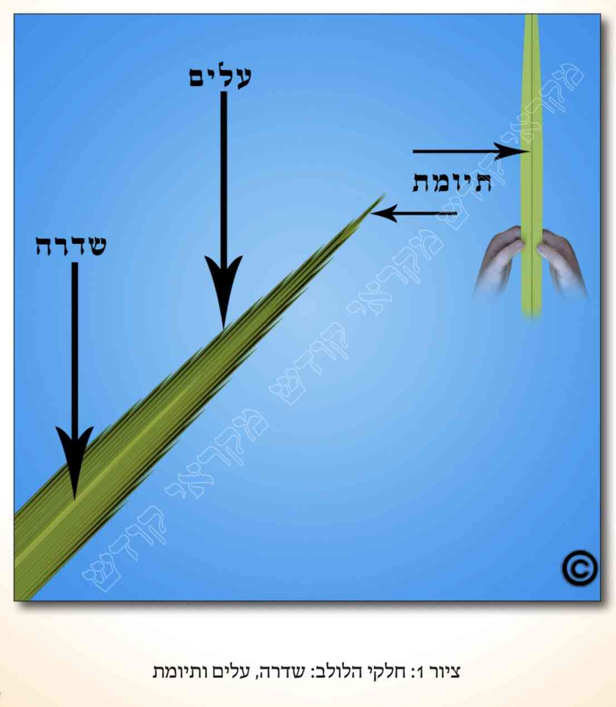 )].
שדרת הלולב הינה החלק הקשה והישר העובר באמצע הלולב. ללולב יש פָּנִים, אחור וצדדים. הפנים הוא הצד שהעלים נמצאים בו (והיינו הצד הרחוק מאיתנו בעת נטילת הלולב), ה"אחור" הוא הצד שנראה כשדרת הלולב (והוא הפונה אלינו בעת הברכה והנענועים) ראה בציורים ( 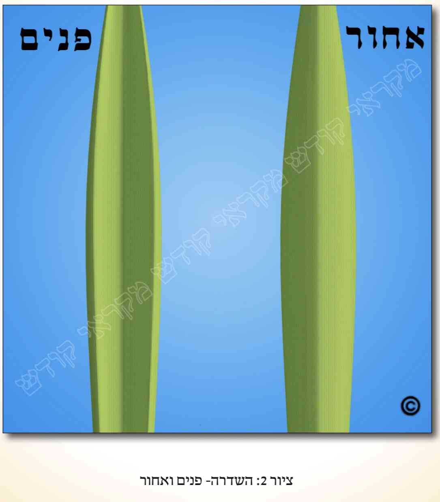 ) . וצידי הלולב הינם העלים משני צידי השדרה הפונים לימין ולשמאל. נוסף לכך יש דינים מיוחדים ל"תיומת", שאת הגדרתה ודיניה נבאר בס"ד לקמן (בסעיפים י'-כ"א).
ה. לכתחילה יש להזהר שיהא הלולב ישר לגמרי, הן בשדרתו והן בעליו, ולא יהא עקום כלל, וזה הלולב המהודר ביותר. אך יש מיקרים שלמרות שאינו ישר לגמרי הינו כשר, ויש מיקרים שבשל עקמימותו הינו פסול, וכמבואר בסעיפים הבאים.
ו. כיוון שעל שדרת הלולב להיות ישרה, לכן אם הלולב הינו עקום בשדרתו כמו מגל, ונעשית שדרתו כגב של אדם בעל חטוטרת, הינו פסול [ראה בציורים ( 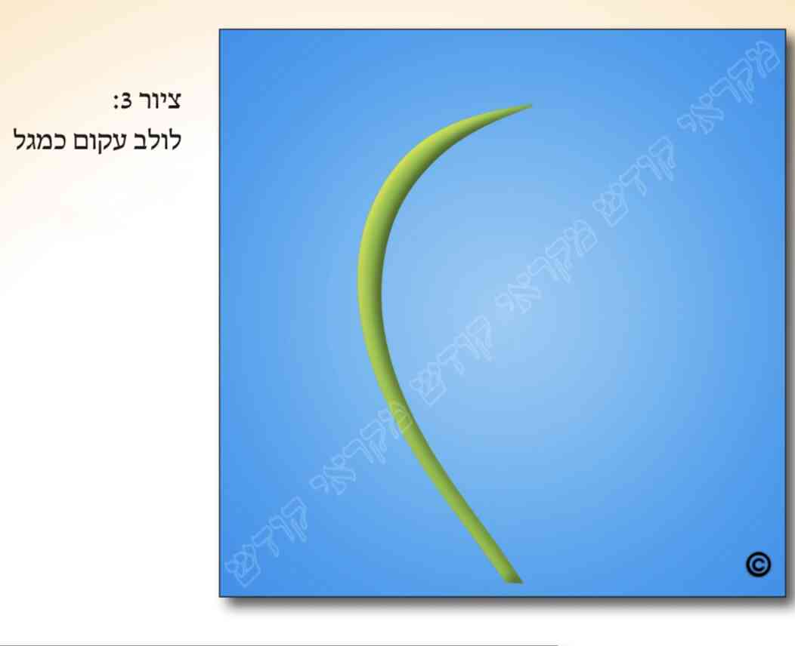 )] . ואם אינו עקום מאוד באופן שכזה, עדיין הינו כשר מעיקר הדין.
ז. הלולב נחשב כעקום (כנ"ל) אם הינו עקום לכיוון פניו (היינו הצד המרוחק מאיתנו בעת הנטילה, ראה בציורים ( 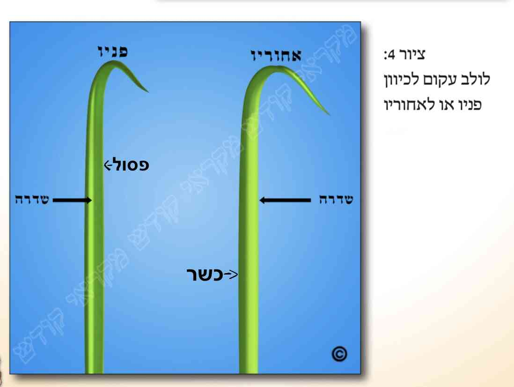 ) , או לכיוון צדדיו (היינו ימינה או שמאלה). אך אם הינו עקום רק לכיוון אחוריו (היינו לכיוון השדרה שהינה פונה אלינו בעת הנטילה), הריהו כשר, כיוון שכן דרכו לגדול.
ח. אם הלולב לא רק עקום אלא שראשו ממש כפוף כאגמון (דומה לאיש גיבן ולזקן שראשם כפוף למטה), הריהו פסול [ראה בציורים ( 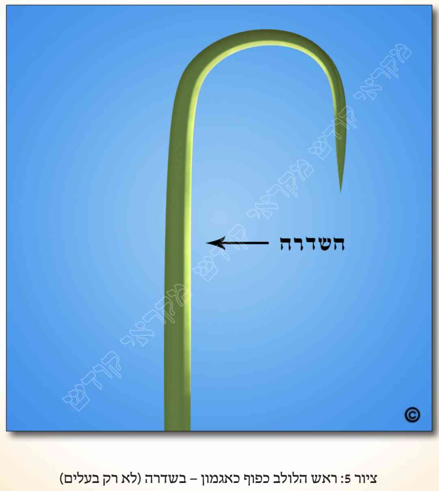 )] , בין אם הינו עקום לצד פניו, אחוריו, או לצדדיו. והדבר אמור דווקא לגבי שדרת הלולב, אך אם עליו העליונים כפופים, ראה דינו לקמן (בפרקנו סעיפים מ"ז ומ"ח).
ט. רבים הם דיני עלי הלולב, וכגון אם הינם כפופים, קטומים (חתוכים) בראשם או ברובם, וכן אם החל הלולב "להפתח" והחלו העלים להפרד זה מזה או מהשדרה. וכן אם נחלק הכפל של העלה העליון מגבו, וכדומה. כיוון שלדעת פוסקים רבים דיני העלה או העלים העליונים (שמחמירים יותר לגביהם) שונים מדיני שאר העלים, לכן נחלק את דין העלים לשני נושאים ראשיים: דין העלים בכלל, ודין העלה (או העלים) העליונים בפרט.
י. אמרו חכמינו זכרונם לברכה, שאם נחלקה התיומת של הלולב, הריהו פסול.
יא. דרך גידולם של עלי הלולב, שהם גדלים שני עלים ביחד ודבוקים הם בגבם, וגב כל שני עלים הוא הנקרא תיומת [שעל ידי כך הם מחוברים כתאומים. ראה בציורים ( 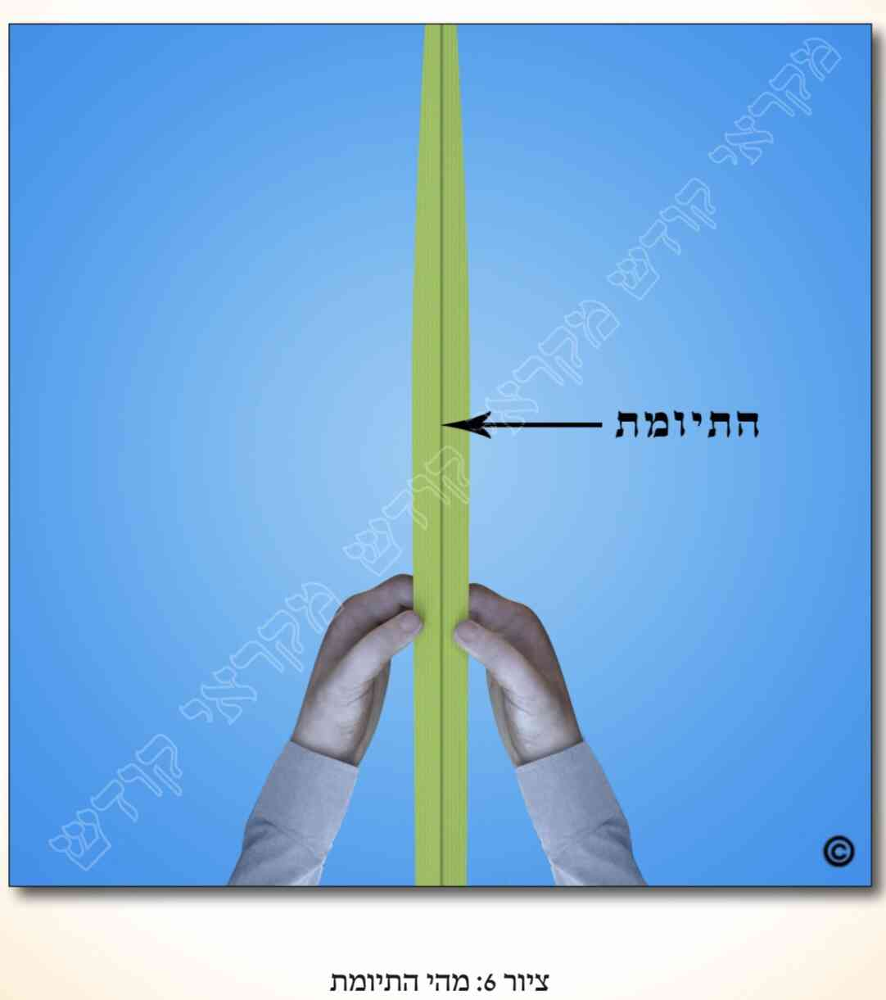 )] . ונחלקו הפוסקים מהם העלים שפוסלת בהם פתיחת וחלוקת התיומת, וכן מהו שיעור פתיחת התיומת הפוסלת את הלולב.
יב. כיצד מזהים את התיומת (למנהג האשכנזים, כבסעיף הבא): מתחילים לעקוב מעמוד השדרה של הלולב כלפי מעלה, עד לעלה האמצעי העליון היוצא מהשדרה, עד שמגיעים לראש התיומת של העלה העליון.
יג. יש מהפוסקים שכתבו שפתיחת התיומת פוסלת את הלולב רק אם נפתחו באופן כזה רוב העלים של הלולב. אך אם נפתחו כך רק מיעוטם, הרי שהלולב כשר. וכן הדין לספרדים.
ויש מהפוסקים הסוברים, שאף אם נפתח באופן כזה רק העלה האמצעי (העליון ביותר) של הלולב [ראה בציורים ( 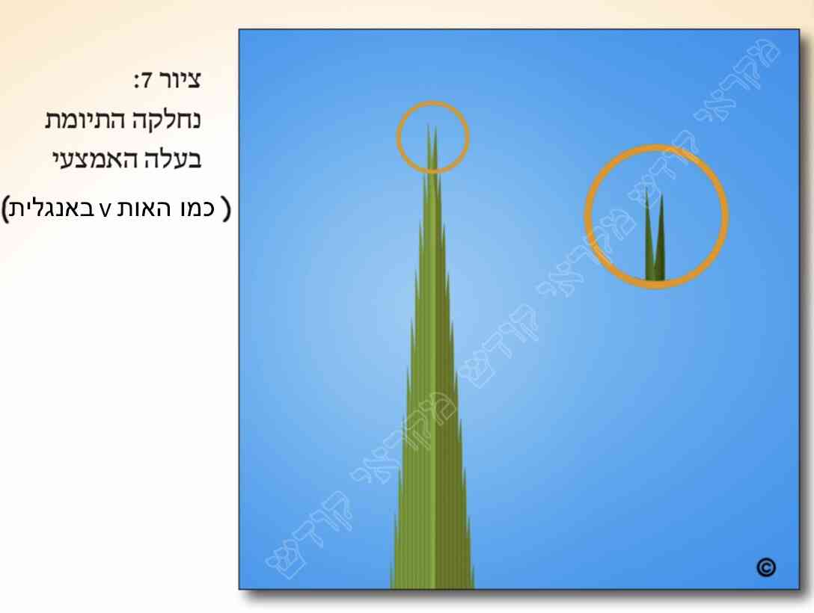 )] , אף ששאר העלים הינם סגורים (שהתיומת שלהם לא נפתחה) אזי הלולב הינו פסול. וכן הדין רק לאשכנזים.
יד. לאור האמור בסעיף הקודם עולה, שלמנהג הספרדים, כיום כמעט אין לולב שנפסל בשל פתיחת התיומת, כיון שברוך ה' נדיר הוא מאוד שנחלקה התיומת ברוב עלי הלולב. לפיכך כל האמור בסעיפים הבאים בענין התיומת אמור בעיקר לאשכנזים.
טו. נחלקו הפוסקים מהו שיעור פתיחת התיומת הפוסל את הלולב. וכמה דעות בדבר. ולמעשה, לדעת רוב הפוסקים אם נפתחה התיומת ברובה [ראה בציורים ( 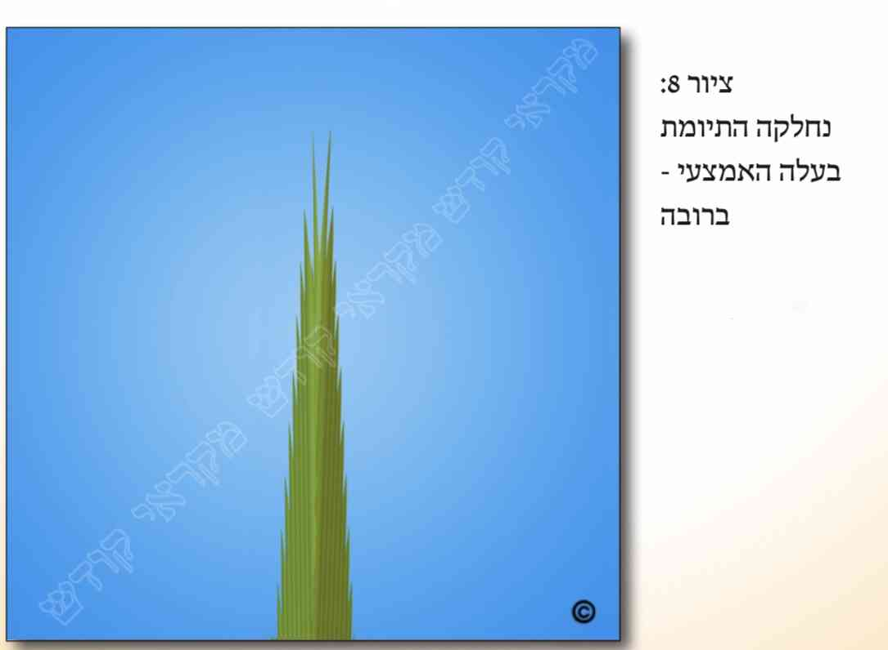 )] , הלולב פסול. ויש מהפוסקים המקילים ופוסלים אותו רק אם נפתחה כל התיומת, עד השדרה. וכל זה הן לספרדים והן לאשכנזים. ומכל מקום אם נחלקה התיומת רק במיעוטה הרי שמעיקר הדין הלולב כשר, אך אין זו מצווה מן המובחר. ולכן לכתחילה הטוב ביותר ליטול לולב שהתיומת שלו לא נחלקה כלל, וזו מצווה מן המובחר.
טז. לאור כל האמור המסקנה הינה, שלספרדים רק אם נחלקו רוב העלים, כשרוב התיומת או כולה נפתחה בהם, רק אז פסול הלולב (וזה דבר נדיר, וכנ"ל). ואילו למנהג האשכנזים, אם נפתחה כל התיומת או רובה, אפילו רק של העלה העליון (האמצעי), הלולב פסול.
יז. כאשר השדרה מסתיימת בשני עלים עליונים יחדיו ותיומותיהם סגורות [ראה בציורים ( 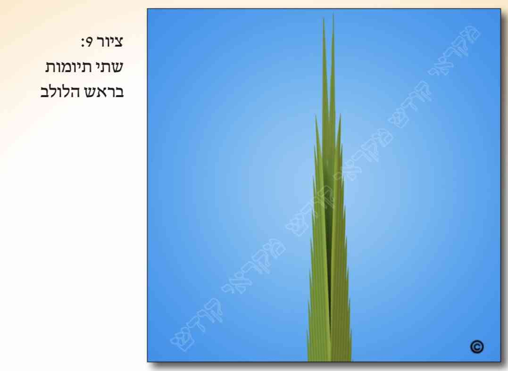 )] , הרי שמעיקר הדין הלולב כשר. ואם נחלקה התיומת של אחד מהם, נחלקו הפוסקים האם הלולב כשר. הספרדים מקילים לגמרי בכך, ולאשכנזים יש יותר להחמיר במקרה זה. ולגבי עוד מיקרים מיוחדים של פתיחת התיומת ראה לקמן (בסעיף כ"א).
יח. כשאין לולב יותר טוב, יש ליטול את הלולב אף אם התיומת פתוחה במיעוטה, ויברך על נטילה זו. ואם התיומת פתוחה ברובה ואין לולב אחר טוב ממנו, כך שזו שעת הדחק. אם רוב העלים תיומותיהן נפתחו ברובן, יטול את הלולב אך בלא ברכה. ואם רק התיומת של העלה העליון נפתחה ברובה, יטול את הלולב, ולספרדים אף יברך עליו, ואילו לאשכנזים לכתחילה לא יברך על נטילה זו, והמברך מהם יש לו על מה לסמוך. ובכל מקרה אם לאחר שנטל לולב כזה מצא לולב אחר טוב הימנו, יטלנו אך ללא ברכה.
יט. לולב שנחלקה התיומת, אפילו כולה (עד השדרה), לדעת רוב הפוסקים הריהו כשר לנטילה בימי חול המועד, ואף מברכים אז על נטילתו.
כ. יש מגדולי הפוסקים שכתבו, שאם נחלקה רק מקצת התיומת (שאז ממילא לרוב הדעות הלולב עדיין כשר), הרי שמותר להדביק עם דבק את קצה התיומת על מנת שלא תפתח יותר. וראה עוד כאן במקורות ולקמן בפרקנו (בסעיף כ"ו).
כא. עוד מדיני התיומת, כגון שאין שני חלקיה שווים, ועוד מיקרים, ראה כאן במקורות.
כב. נוסף לדין התיומת ישנה מציאות קרובה אליה, והיא לולב הפסול מדין הימנק (שהוא כלי שיש לו שני ראשים הסמוכים זה לזה). ההבדל בין השנים הינו שבפסול התיומת אמנם נחלק גב העלה לשני חלקים, ואף נראה חלל קטן ביניהם, אך בכל אופן עדיין הם נראים כעלה אחד (ובפרט שכשמשכיבים את הלולב על צידו, הרי ששני חלקי העלה מתקרבים זה לזה). ואילו פסול ההימנק בלולב הוא כאשר ישנו סדק וחלל רחב יותר בין חלקי העלה (ששיעורו בס"ד יבואר לקמן), כך שהוא נראה ממש כשני עלים [ראה בציורים ( 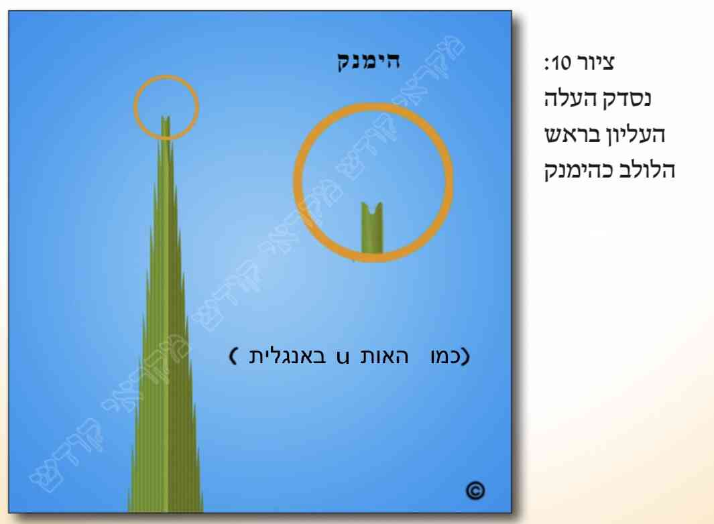 )].
כג. כפי שאמרנו, לולב שנסדק ראשו באופן שנעשה כהימנק, הריהו פסול. וכתבו הפוסקים שאכן יש להזהר מאוד בדבר זה.
כד. נחלקו הפוסקים באלו עלים שייך דין "נסדק כהימנק". יש אומרים שדין זה שייך בעלה האמצעי (העלה העליון). ואפילו שרק הוא נפתח כהימנק הרי שהלולב פסול, אף ששאר העלים הינם סגורים כדין. וכן הדין לאשכנזים. ופוסקים אחרים אומרים שדין "נסדק כהימנק" אמור רק כשרוב העלים פתוחים כהימנק, וזאת אפילו אם העלה האמצעי סגור. וכן הדין לספרדים. ולכן לדידם דין זה של "נסדק כהימנק" לא מצוי כלל. וישנה עוד שיטה אחרת בכך, אך אלו השיטות העיקריות.
כה. שיעור הסדק הפוסל לולב שנסדק ראשו כהימנק הינו כזה: בגובהו (היינו לאורך העלה), אפילו סדק בשיעור מועט נחשב כהימנק ופוסל. ואילו לגבי רוחב הפתיחה של הסדק בין חלקי העלה, הלולב פסול כששני ראשי העלה נראים כשני ראשים נפרדים.
כו. יש מי מהפוסקים הסובר, שאף לאחר שנפסל הלולב בגלל שנסדק כהימנק ניתן להכשירו על ידי הדבקת שני ראשי ההימנק, כך שיראו מחוברים זה לזה. ויש המתירים לעשות כן ולהדביקו רק כאשר נסדק באופן שאין ראשי העלה מרוחקים מרחק רב זה מזה (וראה עוד לעיל בפרקנו בסעיף כ'). וראה כאן במקורות, אם ניתן לעשות כן בימי חול המועד.
כז. לדעת רוב הפוסקים, לולב סדוק כהימנק כשר לנטילה בימי חול המועד, ואף מברכים אז על נטילתו (כנ"ל בסעיף י"ט).
כח. שיעור הלולב הינו לפחות ארבעה טפחים. ולמעשה צריך שיהא שיעור הלולב לכתחילה כשלושים ושלושה ס"מ (ויש אומרים כשלושים ותשעה ס"מ). ובשעת הדחק, כשלא ניתן למצוא לולב בגודל זה, וכן בדיעבד (כשכבר נטל לולב כזה), יש לחשב את שיעורו עשרים ושבעה ס"מ (ויש אומרים כשלושים ושלושה ס"מ). ודברים אלה אמורים הן לגבי החג הראשון והן לגבי ימי חול המועד. הספרדים נוקטים כשיעורים הקטנים הנ"ל, ואילו האשכנזים יש מהם הנוהגים כשיעורים הגדולים, ויש מהם הנוהגים כשיעורים הקטנים. ומכל מקום ברור שמן הראוי ליטול לולב בשיעור גדול משיעורים אלה. וראה עוד לקמן בסעיף ל"א.
כט. את שיעור הלולב יש לחשב רק באורך השדרה [ראה בציורים ( 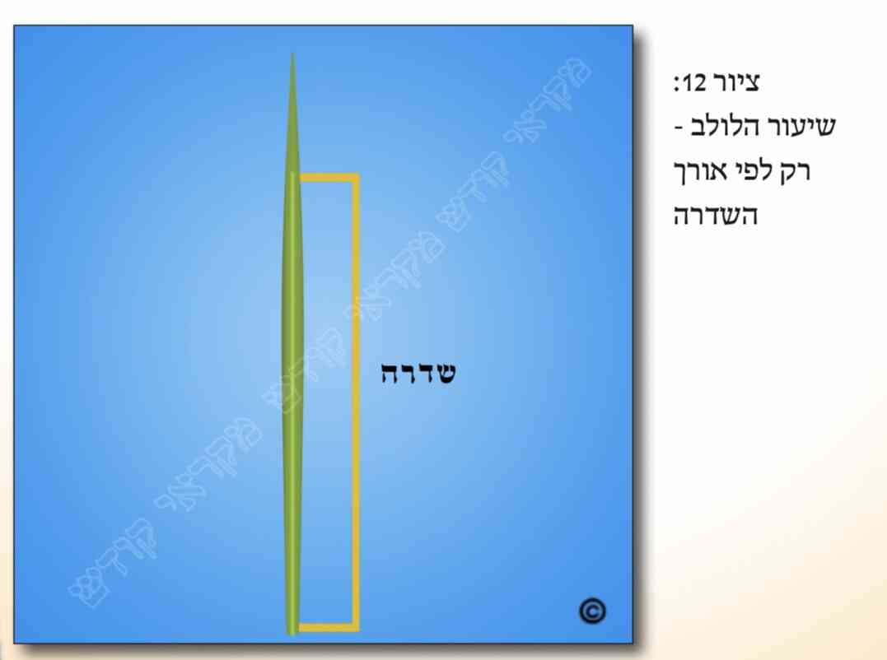 )] , ואין גובה העלים היוצא מעל ראש השדרה נכלל באורך הלולב.
ל. יש אומרים שאם בתחתית השדרה ישנו מקום ללא עלים (כגון שתלשם כדי לאגוד את הלולב), אין מקום זה מצטרף לשיעור הלולב, ויש לדון בדבר.
לא. כפי שכתבנו לקמן (בפרק ט' סעיפים י"ד וט"ו), שדרתו של הלולב צריכה להיות גבוהה מהקצה העליון של ההדסים והערבות לפחות טפח (ששיעורו כשמונה ס"מ. ויש אומרים כעשרה ס"מ). וראה שם (בסעיף ט"ו), שראשי ההדסים צריכים להיות גבוהים מעט מראשי הערבות [כז זה 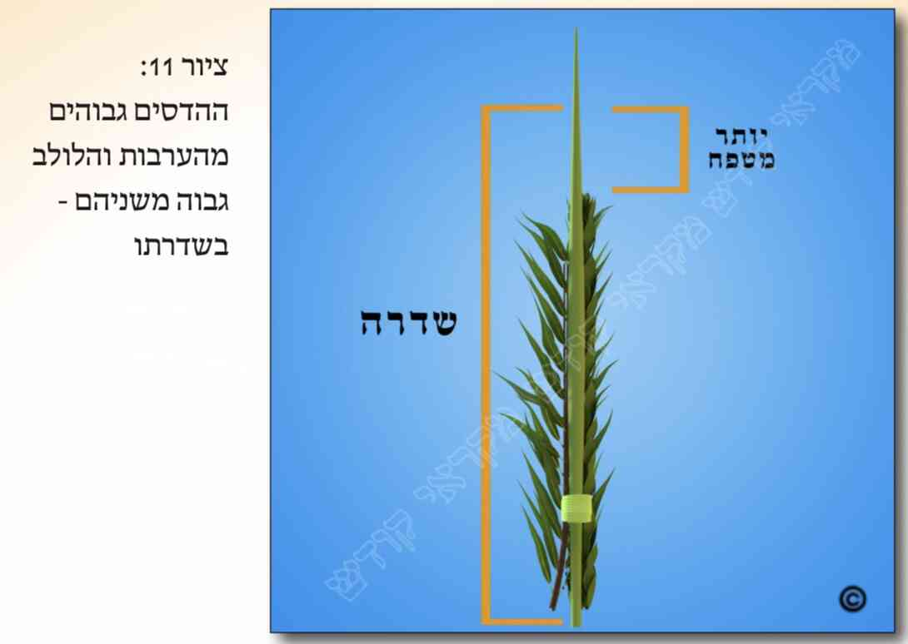 ].
לב. אין הגבלה לשיעור הלולב באורכו [ראה בציורים ( 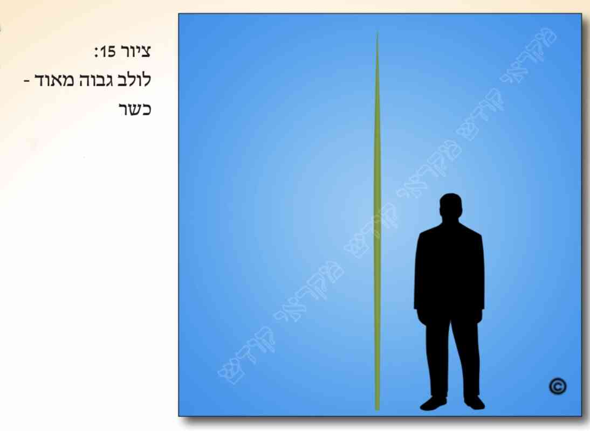 )] . ואדרבא יש אומרים שככל שהוא ארוך יותר הריהו נאה יותר [כל זה ].
לג. אין שיעור לאורך עלי הלולב, כך שבין אם הם קצרים או ארוכים, הלולב כשר. ומכל מקום כתבו הפוסקים שהעלים צריכים לחפות ולכסות את כל שדרת הלולב (בשיעורו ההכרחי, וכדלעיל בסעיפים כ"ח-לא). ויש מהאשכנזים הסוברים שדי שהעלים יכסו את רוב שדרתו [ראה בציורים ( 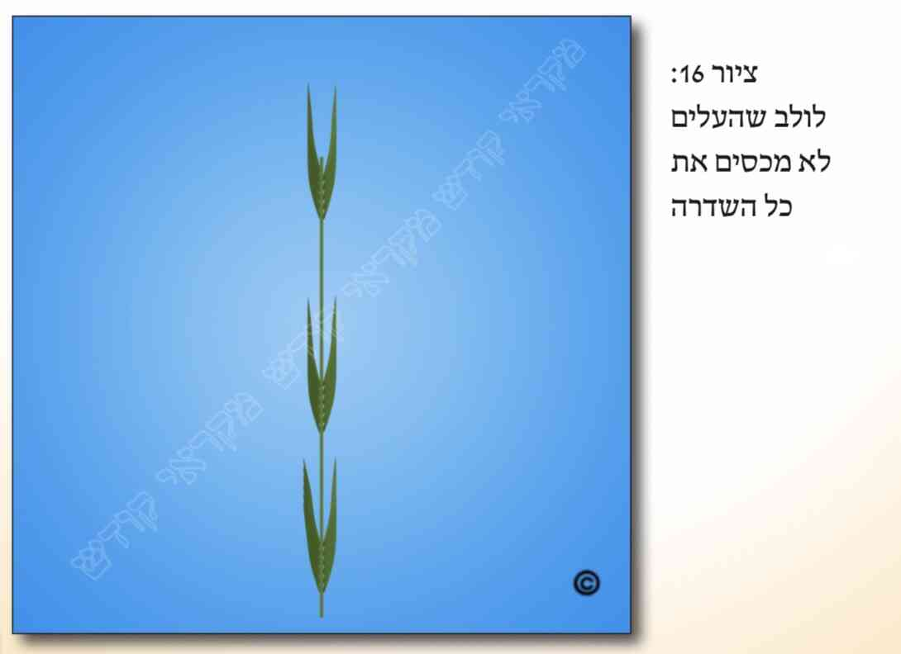 )] . אך כיוון שאין דבר זה מצוי, לא נאריך בכך. וראה פרטי דינים על כך כאן במקורות.
לד. ישנם לולבים רבים המכוסים בראשם במין קליפה חומה הדבוקה לעלים העליונים, הנקראת "קורא" [ראה בציורים ( 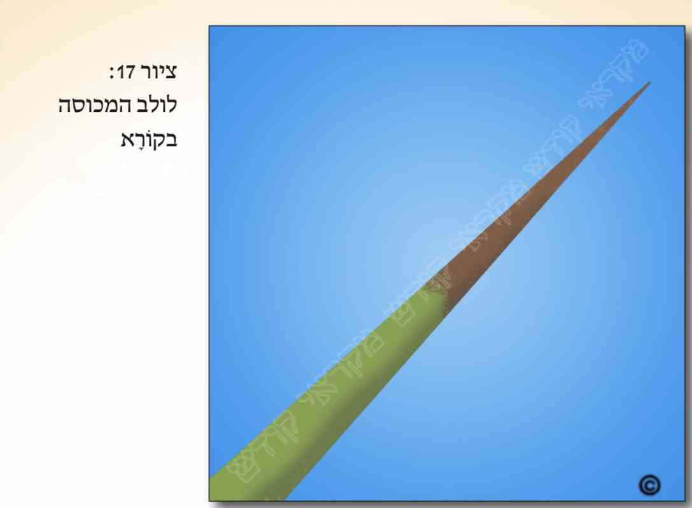 )] , ונחלקו הפוסקים ביחס לקורא זו, האם עדיף לולב עם קורא, או שעדיף בלעדיה, וכדלקמן.
לה. יש מהפוסקים הסוברים שעדיף לולב עם קורא, משום שכך הלולב כעץ אחד המסתיים ללא הפרדה, ומעוד טעמים. ומשום כך מעדיפים הספרדים ליטול דווקא לולב עם קורא.
לו. מאידך יש מהפוסקים הסוברים שעדיף ליטול לולב שאין לו קורא, משום החשש שבלולב זה נחלקה התיומת, או שראשו סדוק כהימנק, כך שלא ניתן לראותם בשל הקורא, ומעוד טעמים. ומשום כך מעדיפים האשכנזים ליטול לולב ללא קורא. ויש מהם הסוברים שאם יש קורא ללולב אזי יש להסירה (כמובן ברשות המוכר). אך רבים מהם סוברים שאין צורך להסירה.
לז. יש להדגיש, שאף לדעת הפוסקים האשכנזים, לולב עם קורא הינו כשר מעיקר הדין. ויותר מכך: היו מגדולי הפוסקים האשכנזים בירושלים עיר הקודש, שלכתחילה היו נוטלים לולב עם קורא.
לח. לולב יבש הינו פסול, משום שאין לו דין "הדר".
לט. נחלקו הפוסקים מהו שיעור היובש הפוסל את הלולב. למנהג הספרדים משהשתנה צבעו ללבן, ולא נשאר בו צבע ירקרק, הריהו פסול, ואם אין לולב אחר יטלנו בלי ברכה. ואילו למנהג האשכנזים, במקומות שאין הלולבים מצויים, יש להקל שהלולב נחשב כיבש רק אם התייבש באופן כזה שהוא נפרך על ידי הציפורן. אך אם באותו מקום יש לולב אחר כשר אף לדעתם אין להקל בכך. ולגבי אפשרות הברכה על לולב יבש, למנהג האשכנזים, ראה כאן במקורות.
מ. אין הלולב נפסל אלא אם כן התייבשה שדרתו או רוב עליו [ראה בציורים ( 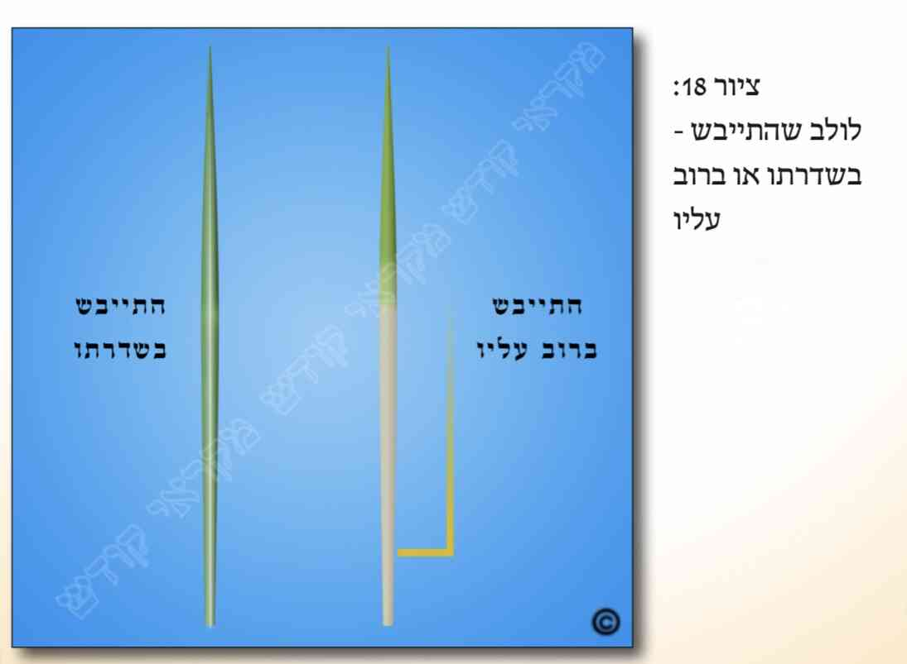 )] . ולאשכנזים כן הדין אף אם התייבש העלה העליון לבדו.
מא. אם נשרפו קצוות עלי הלולב מהשמש והפכו לחומים או לאדומים, לדעת רוב הפוסקים הלולב נשאר כשר כשהיה [ראה בציורים ( 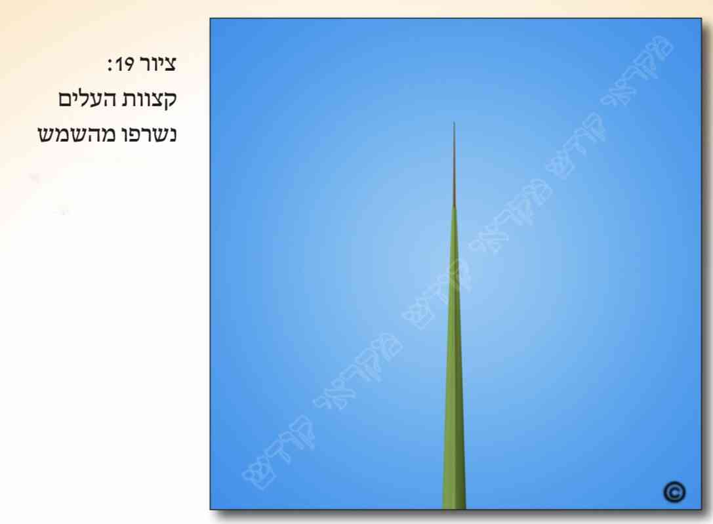 )] . ויש המחמירים וסוברים, שקצוות שרופים אלה הינם חלק ממשי מעלי הלולב, ולכן אם נשרף הראש החום הדק של העלה, נחשב הדבר כאילו התייבש ראש העלה (הן לעניין התייבשו רוב העלים, או שהתייבש ראש העלה העליון).
מב. עוד מדיני לולב יבש, כגון שרק חלק מהשדרה התייבשה, או שרק חלק מעובי השדרה התייבש, או שצבע הלולב הפך לחום וכדומה, ראה כאן במקורות.
מג. אם נקטם ראשו של הלולב (כמבואר לקמן), הריהו פסול. ונחלקו הפוסקים אם דין זה נוהג רק ביו"ט הראשון או בכל ימי החג.
מד. למנהג הספרדים, רק אם נקטמו רוב העלים העליונים של הלולב, נחשב הדבר כנקטם ראשו. ולמנהג האשכנזים הדין כן אף אם נקטם העלה העליון לבדו. וכבר רבו הפירושים בדין זה (כגון מה נחשב רוב העלים העליונים, או מה הדין אם נקטם רק קצה העלה, ולא רובו). אך כיוון שאין הדבר שכיח לא נאריך בכך.
מה. דבר מצוי הוא בלולבים, שישנו קוץ דק, ארוך ו"שרוף" היוצא מראשי העלים [ראה בציורים ( 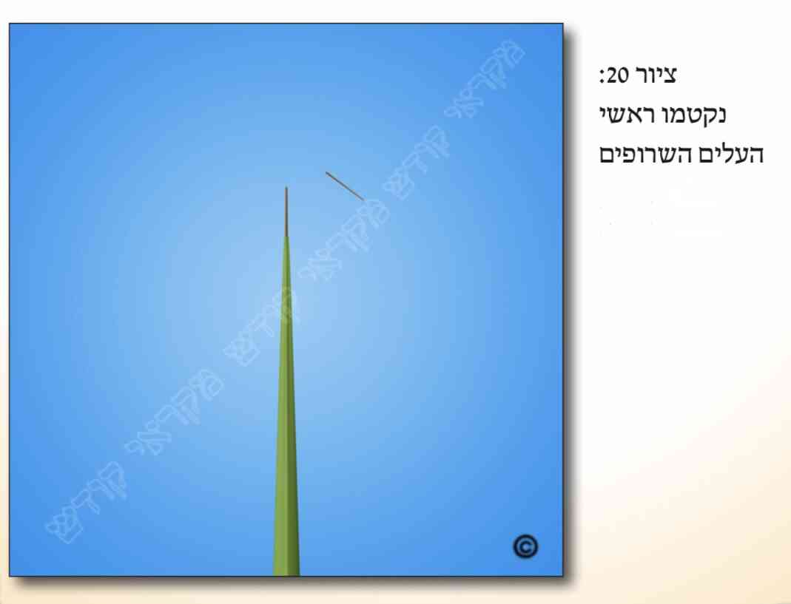 )]. לדעת רוב הפוסקים אם נקטם ראש זה הרי שהלולב כשר. ויש המחמירים בכך וסוברים, שקצוות שרופים אלה הינם חלק ממשי מעלי הלולב. ולדעתם אם נקטם הראש החום הדק של העלה, נחשב הדבר שנקטם ראש העלה (וכן הדין לגבי העלה העליון או רוב העלים). וראה לעיל (בסעיף מ"א).
מו. עוד מדיני לולב הקטום ראה כאן במקורות.
מז. אף שהזכרנו לעיל (בסעיף ו'-ח') שאם הלולב הינו כפוף מאוד הריהו פסול, הרי שאין זה אלא לגבי שדרתו. אך אם רק ראשי עליו כפופים (ולא השדרה) אף אם רובם או כולם כפופים, ואף אם הינם כפופים בראשיהם ממש כלפי מטה [ראה בציורים ( 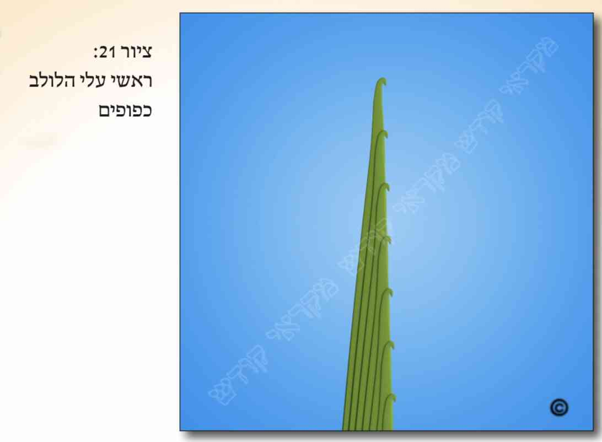 )] , הרי שהלולב כשר. ולמנהג האשכנזים כאשר כל העלים או רובם כפופים בראשיהם, אף שהתיומת אינה כפופה, יש ליטול לולב אחר, כשניתן הדבר.
מח. למנהג האשכנזים אם רק התיומת (ולא שאר העלים) מכופפת הרבה מאוד לאמצעיתה [ראה בציורים ( 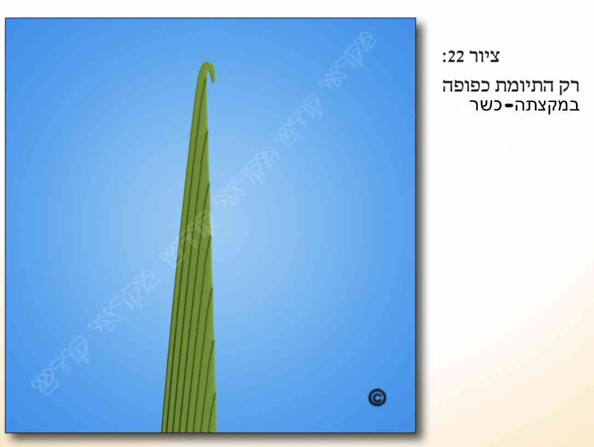 )] , הרי שהלולב פסול.
מט. לולב שבראשי עליו ישנם קמטים קמטים כשלשלת (זיג זג) [ראה בציורים ( 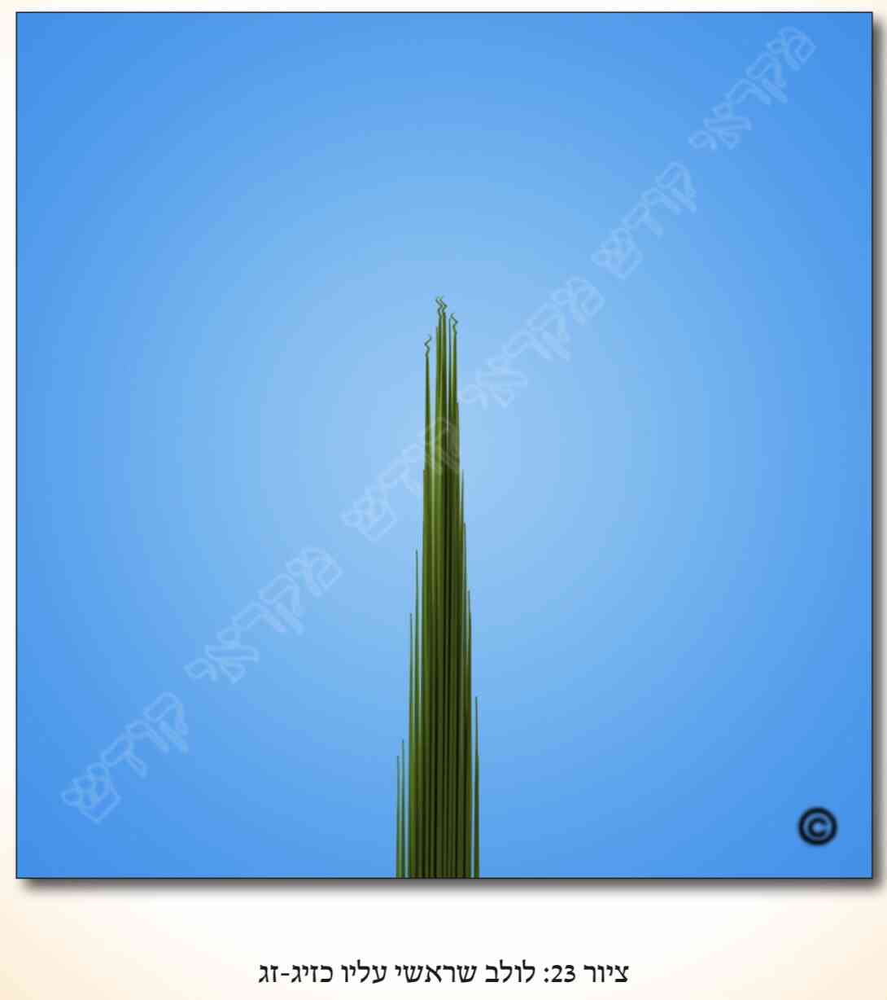 )] , אף שיש מהפוסקים שדנו לפוסלו, מכל מקום מקובל היום להכשירו.
נ. דנו הפוסקים בענין המציאות בשנים האחרונות, שבה מצפים את רוב ככל הלולבים בחומרים שונים כדי לקטול פטריות ולמנוע עובש. ויש שלעיתים מוסיפים לצפותם בנוסף לכך גם בחומר מגן, שהינו יותר דביק, סמיך וממשי (ודבר זה אינו ידוע לציבור הרחב), האם יש בכך בעיה של חציצה בין יד האדם הנוטל לבין הלולב עצמו, כמבואר כאן במקורות.
נא. דין אם יש להוסיף על מחיר הלולב כדי שלא יהא בדיוק בשיעור המצומצם, או שיהא מהודר יותר, ראה לקמן (בפרק י' סעיפים נ"ז ואילך).
נב. עוד מדיני הלולב ראה כאן במקורות.
&הערות:
[1] א. הא דכפות תמרים הכוונה ללולב, הוא מבואר בגמ' סוכה (דל"ב, א'). וכ"כ הרמב"ם (פ"ז מלולב ה"א), המ"ב (בהקדמה לסי' תרמ"ה) וש"פ. וזאת בניגוד להדס שהסתפקו בגמ' (שם דל"ב, ב') מהו. וכן שם בגמ' (דל"ה, א') גבי אתרוג.
בענין סדר הפרקים שבס"ד כתבנו: אמנם הסדר כפי שכתוב בתורה הוא שראשית נזכר האתרוג ("פרי עץ הדר"), אח"כ לולב ("כפֹת תמרים"), אח"כ הדס ("ענף עץ עבֹת") ולבסוף ערבה ("ערבי נחל").
ואילו במשנה (פ"ג דסוכה) הסדר הינו: לולב, הדס, ערבה אתרוג (היינו האתרוג עבר לסוף ושאר המינים נשארו במקומם).
והרמב"ם (פ"ז מלולב הל' א-ג') כ' הסדר: לולב, אתרוג, הדס וערבה [וכ' הגר"י קאפ"ח זצ"ל בפירושו על הרמב"ם (שם ה"א סק"א) בשם ס' דברי ירמיהו (להרה"ג ירמיהו ב"ר בנימין וולף זצ"ל) שהרמב"ם הקדים הלולב כיוון שכולם נטפלים לו בברכה, והדר נקיט סדר המקרא. עכ"ד. אמנם בפ"ח מלולב נקט הרמב"ם הסדר כבמשנה. ואילו בפ"ז ה"ז נקט סדר אחר. עכת"ד. ואכמ"ל].
והטור והשו"ע כתבו הסדר: לולב, הדס, ערבה ואתרוג, והיינו כסדר המשנה (וכמש"כ הטור רס"י תרמ"ה). ואמנם חשקה נפשי לכתוב כסדר רבינו הרמב"ם, ולהקדים אתרוג להדס וערבה, והיינו להקדים הלולב בשל חשיבותו, ושהוא נזכר לבדו בטופס הברכה כשנוטלים את כולם כאחד [ושלא כשנוטל כ"א מהם לחוד. ר' מ"ב (סי' תרנ"א סקנ"ו) ולקמן (בפרק י"א)]. ואח"כ האתרוג בשל חשיבותו שמחזיקים אותו לבדו ביד אחת. ועוד משום שדיניו מרובים. אלא שדרכנו בס"ד לילך בתר רבותינו האחרונים, וכיוון שהטור והשו"ע נקטו בסדר מסוים, ניזיל בתר דעתם, ובפרט שכן נקט רבינו הקדוש בסדר המשנה, שזו תחלת התורה שבע"פ. וה' יעזרנו על דבר כבוד שמו.
כתבו הפוס': לולב – אותיות ל"ו ל"ב. ל"ו כנגד ל"ו צדיקים שבכל דור, וכנגד ל"ו מסכתות. ול"ב היינו התורה המתחלת באות בי"ת ומסתיימת בלמ"ד. ועוד: לולב גי' חיים [תשו' מהרי"ו. בה"ט (סס"י תרמ"ה)]. ומהרי"ל כ' שמי שקונה אתרוג עם לולב יפים זוכה לחיי העוה"ז ולחיי העוה"ב (בה"ט שם).
[2] ב. עפ"י הגמ' בסוכה (דל"ב, א'), שביררו איזה חלק מהדקל יש ליקח למצווה.
ונכתוב בס"ד בקצרה כמה דיונים גבי ני"ד:
1) בענין אי גם לולב מדקל קנרי (שמוצאו מהאיים הקנריים שבסביבות חופי אפריקה הצפונית מערבית, וכיום גם פה בארה"ק גדלים מזן זה הרבה דקלים) כשר לנטי' הדמ"י. הרי שנחלקו הפוס' בזה. המתירים: הגרש"ז אוירבך זצ"ל (בהליכות שלמה, סוכות, פ"י ס"ט), וטעמו משום שדקל זה הינו זן אחד מזני עצי התמר. וכ"פ בשו"ת צי"א (ח"ח סי' כ"ב) מהטעם הנ"ל. וכ"כ להקל בשו"ת יבי"א (ח"ט סי' ס"ד), וכן הג"ר יעקב אריאל שליט"א [בקונטרס אמונת עתיך (גליון 13). ועיי"ש גם במכתב הברכה בראש הקונטרס]. וע"ע מש"כ הגרצ"פ פרנק זצ"ל בשו"ת הר צבי (או"ח ח"ב סי' ק"ח) ובירחון קול תורה (אלול תשכ"ה), וע"ע בספר הליכות אבן ישראל (פכ"ב סכ"ד) שהביאו פוס' רבים שהתירוהו.
לעומתם יש שאסרו ליטול את הלולב הקנרי למצוות הדמ"י. שכ"כ הגרי"ז מינצברג זצ"ל בשו"ת שארית ישראל (סי' ל'), עפ"י חוו"ד של האגרונום ר' ישראל יוטקובסקי (במאמר בירחון קול תורה, אב תשט"ז). וכ"כ באג"מ (או"ח ח"ד סי' קכ"ג), שהחמיר מאוד בכך, וכ' שאף בדיעבד אין יוצאים בו י"ח, וה"ז ברכה לבטלה, ושפשוט שאינו לולב, וגם הטעו כמה מגדולי ישראל בענין זה. ולפי"ז המוכרו עובר באיסור גזל ובאיסור "לפני עיוור".
והיו מי שהסתפקו בכך [הגריי"ק זצ"ל באורחות רבנו (ח"ב עמ' רל"ה)]. וע"ע בקובץ מבית לוי (ח"ב עמ' ל"ב). הב"ד במ"ב - דירשו (סי' תרמ"ה ס"ק 3).
ובאמת ששורש מחלו' זו נעוץ רבות בחוות דעת של אגרונומים שונים. והשאלה הינה האם הדקל הקנרי אינו ממיני הדקלים, או שהינו דקל ואינו אלא זן אחר מזני התמרים. ר' ע"כ בסא"ה (ח"א בסופו, בילקוט פרי עץ הדר כפות תמרים עמ' רי"ב-רי"ד). עיי"ש שהאריך בכך. ועיי"ש בסוף הספר (בציורים וטבלאות) טבלת ההבדלים בין הלולב המצוי ללולב הקנרי, עם ציורים. וע"ע ע"כ בחזו"ע (סוכות. הלכות לולב הערה א' עמ' רצ"ג).
ומ"מ נראה שכיום, כיוון שרוב הלולבים הנמכרים במדינת ישראל גדלים בשבר הסורי-אפריקני (והיינו מהכנרת, עמק הירדן, עמק בית שאן, יריחו ודרומה), הרי שאין כ"כ חשש לקניית לולב קנרי, כי שם מעטים עצי הדקל הקנריים. אך מ"מ הקוטפים לעצמם לולבים מאיזורי ירושלים, השרון ומישור החוף, שם יש חשש גדול יותר למציאות של לולב קנרי. וכן חלק גדול מהדקלים הגדלים בגינות לנוי הינם דקלים קנריים. אולם הלולבים המצויים בשוק, רובם ככולם מזנים כשרים [יבי"א (ח"ט סי' ס"ד) ואוצה"ד (שער ג' ריש סי' א')].
2) לולב הגדל בעצי דקל שאינם נותנים פירות. וישנם ב' סוגי עצים כאלה: דקל שהזן שלו נותן פירות אך תלוי אם הוא עץ ממין שנותן פירות, או שמין זה אינו נותן פירות. והיינו אם הוא זכרי או ניקבי. ובקשר לזה אין אנו כותבים אם הוא זכר או נקבה, כיוון שלא ברור לנו אם הזכר נותן פירות או שמין הנקבה (כפי שלכאורה מסתבר) הוא הנותן פירות. ר' ע"כ ברש"י בעירובין (דכ"ח, ב) וברש"י בפסחים (דנ"ו, א ד"ה רב "אחא"). ולכן אנו ניסתום ונכתוב רק אם זה מין המוציא פירות או לא, ולא נכתוב מין זכרי או נקבי. ודקל שכל הזן שלו אינו נותן פירות. גם בזה נחלקו הפוס' לגבי כשרות לולבו לשם מצוות נטי' הדמ"י.
דעת המקילים: הנה הגרצ"פ פראנק זצ"ל בירחון קול תורה (אלול תשכ"ה) כתב להקל בני"ד, וכ"כ גם בשו"ת הר צבי (או"ח ח"ב סי' ק"ח). וכ' שם שכ"כ כבר החת"ס. ואכן כ"כ החת"ס (בסוכה דל"ד, ב' ד"ה "רבי ישמעאל אומר") להקל בלולב מעץ שכל המין שלו מוציא פירות, אלא שבפועל אינו מוציא פירות (כגון שגדל בארצות קרות). וכ' שאע"ג שכתוב בתורה כפות תמרים, הכוונה למין דקל שבדר"כ מוציא תמרים. עכ"ד. והחזו"א (בהל' כלאים סי' ב' סקי"ח ד"ה "ונראה") כתב שאין לחלק בין לולב שבא מדקל נקבה [שאינו מוציא פירות (רש"י בפסחים דנ"ו, א' ד"ה "רב אחא")] לבין לולב הבא מדקל זכר [שמוציא פירות]. והגרש"ז אוירבך זצ"ל כ' לחלק בכה"ג, וכ' שמש"כ בתורה כפות תמרים הכוונה לשם העץ, וא"צ שהעץ דווקא יוציא פירות [הליכות שלמה (סוכות. פ"י, דבר הלכה סקט"ו)]. וכ"פ להקל בחזו"ע (ריש הל' לולב).
וע"ע בצפנת פענח (על הרמב"ם, פ"ז מלולב ה"א), שתלה מחלו' זו במחלו' ר"ע ור"ט בירו' (סוכה פ"ג ה"א)], ובאג"מ [(או"ח ח"ד סי' כ"א סק"ז), שהיקל גבי לולב מדקל שאם ירכיבו אותו מדקל אחר יעשה פירות, הריהו כשר]. וע"ע בחזו"ע (הל' לולב הערה א' עמ' רצ"א-רצ"ג). הביאו דבריהם בסא"ה (שם, דרי"ג), בחזו"ע (שם) ובמ"ב - דירשו (סי' תרמ"ה ס"ק 4).
3) לולב שגדל באילן הדומה לדקל, אך כשעליו נפתחים הוא נראה כענף עגול כעין מניפה (והוא הנקרא "דקל וושינגטון"), כ' בס' חוט השני (סוכות. פי"ג ססק"ב ד"ה "עוד ענינים" אות ב') שאין זה לולב ופסול לכל הדעות. עכ"ד [הב"ד במ"ב הוצ' דירשו (בהקדמה, ס"ק 3)], ואין ספר זה אצלי, אך לא ברירא לי שאין פוס' שמכשירים לולבים אלה.
4) לולב שגדל בעציץ שאינו נקוב, ה"ז מחלו' אי כשר. לד' הקיצוש"ע (סי' קל"ו ס"ב) הריהו פסול. ואילו פוס' אחרים הסתפקו בכך [ח"א (כלל קנ"ב ס"ג. ובנשמ"א שם סק"א) והגרי"ש אלישיב זצ"ל (בס' ישא יוסף ח"א סי' קכ"ט)]. ולעומתם יש המקילים בכך [ערוה"ש (סי' תרמ"ב סכ"א) ובס' תורת המועדים (סי' תרמ"ה סק"א) בשם החזו"א)]. ויש שכתב שעכ"פ יש הידור לקחת לולב שלא גדל בעציץ שאינו נקוב [חיים וברכה (ס"ק ס"ו)]. הב"ד במ"ב - דירשו (שם ס"ק 5).
[3] ג. כ"כ הרמב"ם (פ"ז מלולב ה"א) עפ"י הגמ' בסוכה (דל"ב, א'), שכפות תמרים האמורות בתורה הן חריות של דקל כשיצמחו קודם שיתפרדו העלין שלהן לכאן ולכאן, אלא כשיהיה כמו שרביט, והוא הנקרא לולב. עכ"ל. וכ"כ הטור (רס"י תרמ"ה), המ"ב (בהקדמה לסי' תרמ"ה) וש"פ.
[4] ד. רמב"ם, טור, ומ"ב (שם).
[5] ה. כגון הא שנפרצו עלי הלולב, והיינו שנדלדלו משדרו של הלולב כעלי חריות, שהוא פסול [משנה סוכה (דכ"ט, ב') ורש"י שם, ובגמ' (דל"ב, א'), שו"ע (סי' תרמ"ה ס"ב) וש"פ].
[6] ו. ההלכות הקשורות לשדרה הינן בעיקר ישרותו של הלולב, אורכו, ושלא יהא יבש.
ההלכות הקשורות לעלי הלולב בעלמא הינן בעיקר שלא יהיו יבשים, שלא יהיו כפופים, וכדומה.
וההלכות הקשורות לעלים העליונים של הלולב, הן דיני התיומת, ההימנק, הקורא, נקטם ראשו ועוד. וכמבואר כל זה בס"ד לקמן בפרקנו.
[7] ז. עפ"י רש"י בסוכה (דל"ב, א' ד"ה "מלפניו"), שכ' ששדרת הלולב עשויה כשדרה של בהמה שהצלעות והחוליות מחוברין בה מכאן ומכאן ואמצעה חלק ועולה כמקל. עכ"ל.
[8] ח. עפ"י רש"י בסוכה (דל"ב, א' ד"ה "מלפניו"), שכתב שלפניו זהו הצד שכנגד השדרה (ולא הצד שבו השדרה). וכ"כ המ"ב (סקל"ד) וש"פ. וזה כמו המציאות של האדם, שהשדרה היא בגבו, בצידו האחורי, ופניו הם בצידו הקדמי. והנ"מ הינה גבי דין דלולב הכפוף לפניו או לאחוריו, כדלקמן (בסעי' ז').
[9] ט. עפ"י רש"י בסוכה (שם ד"ה "לאחריו"), שכתב שאחורי הלולב הוא הצד של השדרה, וכדלקמן (בפרק י"א הערה נ"ו). וכ"כ המ"ב (סי' תרמ"ה ס"ק ל"ה ול"ז).
[10] י. כ"נ מהגמ' בסוכה (דל"ב, א').
[11] יא. עפ"י הגמ' בסוכה (דל"ב, א'). רמב"ם (פ"ח מלולב ה"ד). שו"ע (סי' תרמ"ה ס"ג) וש"פ.
[12] יב. כ"כ מרן הגחיד"א בס' מחב"ר עפי"ד ס' גט מקושר. הב"ד בשע"ת (סי' תרמ"ה סק"ה). וכ"כ בס' חיים וברכה (ס"ק ס"ו) שראוי הדבר שיהא ישר לגמרי מדין "זה א-לי ואנווהו". עכ"ד. ומ"מ אי"ז מעיקר הדין שיהא ישר לגמרי כסרגל. אמנם זכורני שכשהיה הגר"מ אליהו זצ"ל בודק לולבים, היה משכיב את הלולב ומקרבו לעיניו כצלף המקרב את רובהו במאונך לעיניו, וכך היה בודק אם ישר הוא לגמרי אם לאו. ואם לא היה הלולב ישר לגמרי, היה הגרמ"א זצ"ל מיישרו בידיו בעדינות, בכדי שהעלים העליונים לא יפתחו ולא יפרדו זה מזה.
[13] יג. כבסעיפים הבאים, שהלולב כשר כגון שעקום הוא מאוד אך רק לאחוריו, או שעקום הוא מעט לכל צד שהוא. וכמבואר כל זה לקמן בסמוך.
[14] יד. עיקר ד"ז הינו מהגמ' סוכה (דל"ב, א'). וכ"פ מרן (בסי' תרמ"ה ס"ח).
ומה שכתבנו שהינו עקום כמגל, ג"ז הוא מהגמ' בסוכה שם, וכ"פ המ"ב (סי' תרמ"ה סקל"ג). וכ' מרן בב"י (בסי' תרמ"ה ד"ה "ובעקום"), דמדנקטו בגמ' שפסול דווקא בדומה למגל, משמע שאע"פ שהוא קצת עקום, מ"מ לא מיפסל עד שיהא עקום לגמרי ודומה למגל. עכ"ד. וכ"נ מדברי הרמב"ם.
ומה שכתבנו שנעשית שדרתו כגב של אדם בעל חטוטרת, כ"כ בשו"ע (שם ס"ח) והמ"ב (סקל"ד).
והטעם דבעי הלולב להיות ישר, דאם הינו כפוף כל כך אין זה הדר [לבוש. מ"ב (סקל"ו)].
[15] טו. כנ"ל (בהערה י"ד) בשם מרן בב"י. וכן פשט דברי הרמב"ם ומרן בשו"ע (שם בסעי' ח'). וכ"כ הגר"מ מאזוז שליט"א בהערות איש מצליח (על המ"ב סקל"ג). וכנ"ל כ"ז לעיל (בהערה י"ב).
[16] טז. כך מבואר בגמ' בסוכה (דל"ב, א') בשם רבא, וכ"פ מרן בשו"ע (סי' תרמ"ה ס"ח) והמ"ב (סקל"ד). וכל זה דווקא אם עקום כמגל, וכנ"ל.
[17] יז. בגמ' (דל"ב, א') ישנן ב' דעות אי צידי הלולב כלפניו דמי או כלאחריו דמי. ופסקו הרי"ף, הרמב"ם והרא"ש לחומרא. וכ"פ מרן בשו"ע (בסי' תרמ"ח ס"ח) שאם נעקם לאחד מצדדיו, פסול.
והטעם גם בני"ד, דאינו הדר [לבוש. מ"ב סקל"ו)].
ומ"מ יש לזכור שכל זה הוא דוקא אם עקום הוא כמגל. שכן פשט מרן, כנ"ל, וכ"כ הגר"מ מאזוז שליט"א בהערות איש מצליח (על המ"ב סקל"ג). ודבר זה אינו שכיח כלל.
[18] יח. עיקר ד"ז הוא מהגמ' בסוכה (דל"ב, א'). וכ"פ מרן (שם בסעי' ח') והמ"ב (סקל"ז).
ובמקרה זה הלולב כשר אף אם הינו עקום כמגל [שכן פשט הגמ', השו"ע וש"פ].
ומה שכתבנו הטעם, משום שכך היא דרך ברייתו של הלולב, ג"ז מהגמ' בסוכה (דל"ב, א'), וכ"כ מרן בשו"ע (שם ס"ח).
[19] יט. עיקר ד"ז מבואר בגמ' בסוכה (דל"א, ב') ובשו"ע (סי' תרמ"ה ס"ט) ובש"פ. ושם מבואר שהנ"מ בין דין זה לאמור בסעיפים הקודמים, הוא שבני"ד עסקינן שראשו ממש כפוף, ולא רק עקום בשאר שדרת הלולב, ולכן בני"ד מחמירים יותר.
[20] כ. מה שכתבנו שראשו ממש כפוף, ג"ז איתא בגמ' בסוכה (שם).
ומה שכתבנו שראשו כפוף ממש כאגמון, ודומה לאיש גיבן, כ"כ רש"י (שם ד"ה "כפוף"). וכ"כ המ"ב (סקל"ח).
[21]
כא. גמ' ושו"ע שם.
[22] כב. הא דבני"ד יש להחמיר (בשל כפיפותו הגדולה) לא רק כשכפוף לפניו ולצדדיו אלא אף כשכפוף לאחוריו, כ"כ הלבוש, בס' כפות תמרים (לסוכה דף ל"ב), שו"ע הגר"ז (סי' תרמ"ה סי"ט), המ"ב (סי' תרמ"ה סקל"ח), ובס' חיים וברכה (סי' קכ"ה). ואמנם חלק מפוס' אלה כתבו שכן הדין גבי פניו ואחוריו, אך כיוון שדין צדדיו הינו כלפניו, הרי שגם לדידם הלולב פסול, ואף את"ל שדין צדדיו הוא כלאחוריו, הרי שכיוון שבני"ד אף בכפוף לאחריו פסול, א"כ ה"ה בלצדדיו.
[23] כג. כ"כ הרא"ש ומרן (סי' תרמ"ה ס"ט). ודין עלים כפופים ר' לקמן בפרקנו (סעי' מ"ז ומ"ח).
[24] כד. דין העלים הכפופים כתבנו בס"ד לקמן בפרקנו בסעי' מ"ז.
דין עלים קטומים ר' לקמן בסעיפים מ"ג-מ"ו.
דין עלים המתפרדים זמ"ז או מהלולב ר' לקמן בהערה קל"ה.
דין נחלק הכפל של העלה העליון, ר' לקמן בסעיפים י"א-כ"א.
ושאר דיני העלים של הלולב מפוזרים בס"ד בעוד כמה דוכתי בפרקנו.
[25] כה. כגון מחלוקות מרן והרמ"א גבי נקטם ראשו (בשו"ע סעי' ו'), וכן גבי נחלקה התיומת (שם סעי' ג'), שהרמ"א מחמיר אף אם קרה הדבר בעלה העליון.
[26] כו. בגמ' סוכה (דל"ב, א') איתא: בעי רב פפא: נחלקה התיומת מהו... איכא דאמרי: אמר רבי יהושע בן לוי: נחלקה התיומת נעשה כמי שניטלה התיומת, ופסול. ע"כ. והיינו הטעם משום שתיומת שנחלקה דינה כאינה [גמ' הנ"ל. מ"ב (סקי"ב) וש"פ]. וע"ע לקמן (בהערה ל"ט) מש"כ בס"ד בשם הח"א.
ואכן הראשו' פסקו כדעה זו בגמ', וכ"פ מרן בשו"ע (סי' תרמ"ה ס"ג).
הטעם מדוע שלולב שנפתחה תיומתו הריהו פסול, כתבו הראשו' ב' טעמים: י"א משום שאז הלולב אינו "הדר" [תוס' סוכה (דכ"ט, ב' ד"ה "נקטם")]. וי"א שאז יש חיסרון שאינו "לקיחה תמה" [רבינו ירוחם (נתיב ח' ח"ג, דנ"ח ע"ד)]. והנ"מ בין הטעמים הינה למשל האם יש להחמיר כשנפתחה התיומת, לגבי ימי חוה"מ.
[27] כז. רמב"ם (פ"ח מלולב ה"ד). שו"ע (סי' תרמ"ה ס"ג) וש"פ.
[28] כח. רש"י סוכה (דל"ב, א' ד"ה "נחלקה").
[29] כט. שנחלקו בזה הראשו', וכדלקמן (בהערות ל"ב, ל"ג ול"ה). וכן נחלקו בזה מרן והרמ"א (בסי' תרמ"ה ס"ג), האם הכוונה לרוב עלי הלולב או דווקא לעלה העליון ביותר. וכדלקמן (בסעי' י"ג).
[30] ל. גם ד"ז שנוי במחלו' הראשו', וכדלקמן (בהערה ל"ט). וכן נחלקו בזה מרן והרמ"א (שם).
[31] לא. כ"כ ידידי הרה"ג המפורסם ר' יוסף צבי רימון שליט"א בספרו על ארבעת המינים (בדיני התיומת). והדברים מאירים כנתינתם מסיני.
[32] לב. הנה בד"ז נחלקו הראשו', וכן מרן והרמ"א בשו"ע. ובס"ד נביא את ג' השיטות בהא:
שיטה א': הנה מדברי הרמב"ם (בפ"ח מלולב ה"ד) לכאו' נראה שדין התיומת שייך לכלל עלי הלולב, ולאו דווקא לעלה העליון. ובפרט ממש"כ שם "בריית עלין של לולב כך היא: כשהן גדלין, גדלין שנים שנים, ודבוקין מגבן, וגם כל שני עלין הדבוקין הוא הנקרא תיומת". ואע"פ שאין הדברים מפורשים ברמב"ם, מ"מ הוסיף שם הרה"מ שפיסול זה אינו אלא ברוב העלין ולא במיעוטן. ע"כ (הב"ד מרן בב"י). וגם הרא"ש (בפ"ג סי' ו') כתב על פי' הרי"ף (בדט"ו, א' בדפי הרי"ף) שברוב עליו מיירי (ג"ז בב"י שם).
הדברים מפורשים בד' הרשב"א (לב"ק דצ"ו, א' ד"ה "נחלקה"), שכ' שמסתברא שלדעה זו הלולב פסול רק אם נחלקה התיומת ברוב העלים. אך אם נחלקה התיומת רק בעלים בודדים אין נראה שהלולב יפסל, דהא גם אם כמה עלים נתלשו לגמרי אין מסתבר שהלולב יפסל. עכת"ד. וע"ע מש"כ ע"כ הרמב"ן (בהשגות להל' לולב להראב"ד).
שיטה ב': דעת הגאונים (כמובא בטור ובב"י ובב"ח) ורש"י בסוכה (דל"ב, א' ד"ה "נחלקה התיומת"), שכ': שני עלין עליונים אמצעים ששם השדרה כלה (והיינו שאין רק עלה אמצעי אחד אלא יש שני עלים אמצעיים), אם נחלקו זה מזה, ונסדקה השדרה עד העלין שלמטה מהם. ע"כ. וכעין זאת כתבו גם התוס' בב"ק (דצ"ו, א' ד"ה "נחלקה התיומת") בשם הגאונים. ור' ע"כ לקמן (בהערה מד).
שיטה ג': דעת רש"י בב"ק (דצ"ו, א' ד"ה "התיומת") שכ': התיומת – כף תומר האמצעי העליון. ע"כ. ומדבריו אלה נראה שהתיומת הינה העלה האמצעי של הלולב. וכ"כ כמה ראשו' בשם רש"י, מהם הרשב"א (בב"ק שם), הגהות הסמ"ק (סי' קצ"ג סק"ג) ועוד. וכן הביאו פירוש זה עוד ראשו', מהם הריטב"א (בסוכה דל"א, ב' ד"ה "אמר רב הונא"), הר"ן (בדט"ו, א' בדפי הרי"ף) ובעוד ראשו'. וראה בערוה"ש (סי' תרמ"ה סעי' ו') שזו מחלו' אי פי' רש"י בסוכה תואם את דבריו בב"ק.
וע"ע בענין זה בטור (סי' תרמ"ה ס"ג), בב"י ובב"ח.
ומרן (בסי' תרמ"ה ס"ג) אכן פסק שאם נחלקה התיומת (וברוב העלין) פסול.
ואמנם תיבות "וברוב העלין" לא כתובות באופן שהן חלק מדברי מרן, וגם בב"י מרן לא גילה דעתו בהדיא ע"כ. וא"כ מוטל עלינו לברר האם אכן תיבות אלה יצאו מידיו של מרן זיע"א בעצמו, או שזו תוספת מאוחרת כלשהי, שלכאו' זו נ"מ האם אכן זו דעת מרן. בס"ד חקרנו קצת ענין זה, וכך העלנו במצודתנו:
דעת הסוברים שאכן מרן עצמו כתב תיבות "וברוב העלין":
באמת לא מצאתי בפוסקים האחרונים (חוץ מפוסקי דורנו) שמרן בעצמו כתב תיבות אלה. מלבד המאמ"ר (בסי' תרמ"ה סעי' ד') שכ' שלד' הרי"ף והרמב"ם, שמרן פסק כמותם, פירוש "נחלקה התיומת" הינו ברוב העלים. ועוד כתב בהמשך דבריו שוב שמרן פסק כרי"ף והרמב"ם. עכת"ד.
אמנם יש עוד אחרו' שנראה שהבינו שזו דעת מרן. שכ"נ מדברי ערוה"ש (סי' תרמ"ה ס"ח) שהבין שזו ד' מרן, אע"פ שלא כתב כן במפורש, אלא רק כתב שמרן הב"י הביא רק את דעת הרי"ף והרמב"ם, אך לא כתב כן במפורש שזו ד' מרן.
גם מאחרוני דורנו יש שכתבו שזו דעת מרן, אך לא ברור שחקרו ענין זה עד תומו. שכ"כ בס' ארבעת המינים השלם (ויספיש. הל' לולב, פ"ג בהקדמה), וכ"כ בס' פרי הדר (מרגולין, הל' לולב, דיני התיומת, מהדו' תשס"ג, עמ' 55). וכ"כ בהערות איש מצליח (על סי' תרמ"ה, עמ' 222 הערה 2), שזו דעת מרן. ומ"מ כפי שכתבנו לעיל, הרי שמרן הביא בב"י את דברי הרה"מ על הרמב"ם (בפ"ח ה"ד) דפסול זה מישתעי ברוב העלין ולא במיעוטן. ועוד הביא בב"י את דברי הרא"ש (פ"ג סי' ו') שכתב על פירוש הרי"ף דמישתעי ברוב עליו, וכנראה שלכן הבינו הפוס' שאף ד' מרן בשו"ע דמישתעי ברוב העלין, למרות שבאמת מרן לא גילה את דעתו לא בשו"ע ואף לא בב"י. ולמרות שבב"י הביא את ד' הרי"ף והרמב"ם, אך באמת בהמשך דבריו הביא גם את שתי הדעות הנוספות, ולא הכריע בהא (ור' עוד ע"כ בסמוך). וא"כ נמצאנו למדים שאף אחד מגדולי האחרו', מלבד המאמ"ר, לא כתב כן בהדיא שזו דעת מרן.
ועתה נפנה לדעה האחרת בפוס'. ובאמת נראה בס"ד שישנן ב' הבנות בכך: יש שהבינו שודאי תיבות "וברוב העלין" לא נכתבו ע"י מרן אלא ע"י הרמ"א בעצמו. ויש מהפוס' שנראה מדבריהם שאין דעתם ברורה בכך. ואכן יש צדדים לכאן ולכאן.
דעת הפוס' שתיבות אלה כתב רבינו הרמ"א בעצמו: זו ד' הרב כה"ח, שבסקט"ז כתב בהדיא שתיבות אלה נכתבו ע"י הרמ"א. וכ"כ בספר לקיחה תמה (להרה"ג שמעון אדלר שליט"א, בנו של הג"ר סיני אדלר שליט"א. שם בעמ' רכ"ח) שתיבות אלה הינן לרמ"א זיע"א (כך אמר לי ידידי, הרה"ג יוסף ברינר שליט"א בשם ספר זה. והספר אמת"י). ובס"ד יש להעיר עוד, שהרמ"א הינו המפרש הראשון של השו"ע.
ועוד הוכחה חשובה שתיבות אלה לא יצאו מתחת ידי מרן הינה, שבדקנו (ע"י תוכנת אוצר החכמה) וראינו שבשו"ע שנדפס בחיי מרן (בשנת שכ"ה בוונציה), ללא הגהות הרמ"א, לא נכתבו כלל תיבות "וברוב העלין". וא"כ לאו רבינו יוסף קארו זצ"ל חתים על תיבות אלה [והוכחה כזו מקובלת על הפוס'. ואף הגרע"י זצ"ל בספריו מזכיר את דברי שו"ע מהדורה זו כהוכחה לדעת מרן זיע"א].
ועוד נוסיף צדדים שאין הכרח שזו ד' מרן:
לגבי מיקרים שמרן לא הזכיר דין מסוים בשו"ע, ורק הביאו בב"י, דנו הפוס' מהי דעת מרן בהא. וכבר כתב מרן הגחיד"א בשו"ת יוסף אומץ (סי' כ"ט) בשם מהר"ר גבריאל איספראנסה זצ"ל שלעיתים מרן כותב דין מסוים בב"י, ומשמיטו בשו"ע, וזאת לג' סיבות: 1) או משום שדין זה הינו במציאות רחוקה, אע"פ שהוא מוסכם על הפוס'. 2) או שהוא פשוט. 3) או שהוא כלול ונלמד מעיקר הדין שכתב בשו"ע [הב"ד בס"ד במקראי קודש הל' סוכה (פ"ה הערה כ"ח וע"ג). עיי"ש]. אך גם מדברי מהר"ג איספראנסה אין ללמוד לגבי ני"ד. ראשית, משום שאף אחת מהסיבות שכתב אינה שייכת בני"ד (שהרי ני"ד דנפתחה התיומת אינו מציאות רחוקה, וגם אינו דין פשוט, שה"ז מחלו' ראשו'. וגם אינו נלמד ממקום אחר בשו"ע). ויותר מכך: הרי אף בב"י אין דעת מרן מפורשת, אלא רק הביא שם את דעת הרי"ף והרמב"ם מבלי להוסיף את דעתו בכך, וכנ"ל. וראה אורים ותומים (קיצור תקפו כהן סי' קכ"ג וקכ"ד).
וממילא עולה, שאף מש"כ בס' עין יצחק (יוסף. מהדורת תשס"ט עמ' שכ"ז ס"ק נ"א) שבעלמא נקטינן כדעת מרן זיע"א הן בשו"ע, והן בשאר כתביו ככס"מ, בב"י ובשאר כתביו כשותי"ם וכדו', מ"מ כל זה במקום שמרן גילה דעתו בהדיא. אך אם אין הדברים מפורשים, וכגון שאינם מפורשים לא בשו"ע ולא בב"י, בזה לא אמרינן שקיבלנו את דעתו. עיי"ש. וא"כ הרי בני"ד אין דעת מרן מפורשת לא בשו"ע ואף לא בב"י, א"כ אין לנו הכרע מהי דעתו ומהי מסקנת הדין באותו נידון.
עוד נעיר, שהרי בשני סעיפים סמוכים (סעי' ה', ו') ציין מרן במפורש שהדין אמור גבי רוב העלים, או רוב העלים העליונים. ומדלא כתב זאת בנידוננו, הרי שהדבר מעלה ספקות אם אכן סבר גם בני"ד שכ"ה דווקא רוב העלים.
לאור כל זאת בס"ד נראה שתיבות "רוב העלין" לא נכתבו ע"י מרן, וישנם צדדים שונים להניח שאין זו דעתו. אלא שכאן עולה השאלה הגדולה: א"כ מהי דעת מרן בני"ד.
לאחר כל הדיון הארוך הזה (שכתבתיו למרות שזמני מאוד קצר, אך כדי לברר ההלכה למעשה, לאמיתה של תורה, בררנו זאת), נראה בס"ד שאכן דעת מרן הינה שדין התיומת שייך דווקא ברוב העלין. דוודאי אין לומר שרק אם נפתחה התיומת בכל העלים אז הלולב פסול. שדעה כזו לא מצינו בפוס', ובפרט לא בפוס' שהביא מרן בב"י. וכן לומר שכן הדין שיש לפסול הלולב אף אם נפסלה התיומת בעלה העליון בלבד, גם זה דוחק, ולא נראה מדברי מרן בב"י. אלא ממש"כ בב"י את דעת הרי"ף והרמב"ם (עפ"י הבנת הרה"מ בדעת הרמב"ם, והרא"ש בהבנתו את הרי"ף), הרי ששנים מתוך ג' עמודי ההוראה ס"ל שכ"ה דווקא ברוב העלין, וזה עוד צד לומר שד' מרן דפסול רק כשנפסלו רוב העלין. ועוד, בס"ד י"ל ההיפך ממה שכתבנו לעיל. די"ל שכמו שגבי לולב יבש ושנקטמו רוב עליו הדין שפסול רק כשרוב עליו נפסלו, א"כ ה"ה בני"ד. ולכן נראה, שלמרות שמרן לא גילה דעתו בהדיא, לא בשו"ע ואף לא בב"י, מ"מ מהטעמים הנ"ל נראה שכן דעתו (וכמו שפירשו הרמ"א, וכנ"ל), שהלולב פסול דווקא כשנפסלה התיומת ברוב עליו. כך בס"ד נלע"ד, וצויי"מ ומתורתו יראנו נפלאות.
וא"כ הגענו למסקנה כדעת שאר הפוס' הספרדים (אם כי בדרך שונה), כד' המאמ"ר (כרמי. סי' תרמ"ה), כד' הערות איש מצליח, וכד' הגרע"י זצ"ל בחזו"ע [(בהל' לולב עמ' רצ"ה סעי' ג' ובהערה ג'). ושלא כמש"כ שם בעמ' רצ"ו סעי' ו'. וכבר העירו ע"כ בהערות איש מצליח (עמ' 222 הערה 2) שסתר את דבריו מיניה וביה. ומצווה ליישב את דבריו. ומ"מ קשה לומר שתפס את ב' הצדדים לחומרא, דהו"ל למיכתב את כל הדברים בחדא מחתא]. ומ"מ מדברי כה"ח לא מוכח כדברינו, אך גם לא מוכח (ואף לא משמע) להיפך. ודי בזה.
ולגבי השאלה מהם העלים דמישתעי, שלפיהם יקבע דין רוב העלים. הנה הטור הביא שם בשם הגאונים דמישתעי דווקא בעלין העליונים, מ"מ בהמשך דבריו כתב רבנו הטור בשם הרמב"ם והראב"ד שכ"ה גבי כל העלים שבלולב. ע"כ. ואכן בתוספת הנ"ל על לשון השו"ע שכתבו "וברוב העלין" משמע רוב עלי הלולב בעלמא, ולאו דוקא העליונים. ורק גבי נקטם ראשו כתב מרן דהוא דווקא בעלים העליונים, דהא התחתונים אינם ראשו. וכן בס"ד כתבנו כאן בהלכות.
ואכן אליבא דשיטה זו כ' המ"ב (בסקי"ב) שלדעה זו אין שום נ"מ בין שאר העלים לעלה האמצעי, ואם נחלק העלה האמצעי אפי' כולו, הרי שהלולב כשר. ע"כ.
וגבי הגדרת רוב העלין שבלולב בס"ד נלע"ד שגם בני"ד הגדרת רוב העלין הכוונה כמש"כ האחרו' גבי רוב העלין דנפרצו עליו (רמ"א סעי' ב'). שהסבירו שם [הביכור"י. פמ"ג ומ"ב (סק"ח)] שהפסול הינו דווקא בתוך שיעור הלולב שהוא ד' טפחים.
אבל אם נפסלו רוב העלים של הלולב ששיעורו יותר מהשיעור ההכרחי של הלולב (ר"ל ד"ט) אך בתוך הד"ט העליונים נשארו רוב העלים כשרים, כתבו הפוס' (ביכור"י ומ"ב שם) שהדין כך: אם רוב העלים שבתוך הד"ט העליונים הינם כשרים, הרי שהלולב כשר, דהא אם ירצה יחתוך את חלקו התחתון ויעמידנו על שיעורו ההכרחי (או מעט יותר), ואז הרי רובו שלם עם עלים כשרים, וכשר. אבל אם רוב עלי הלולב הינם פסולים, אלא שמ"מ יש בו באיזה שהוא מקום ד"ט שבו רוב העלים כשרים, בזה כ' המ"ב שיש להסתפק אי הלולב כשר [כן הבינו במ"ב עוז והדר את דברי המ"ב]. ומ"מ החזו"א (או"ח סי' קמ"ו סקט"ז) כ' שהעיקר תלוי בעלים שבד"ט העליונים. שאם בד"ט אלה רוב העלים פסולים הרי שהלולב פסול. אך אם פסול העלים הינו לאחר הד"ט העליונים הרי שהלולב כשר. עכ"ד. ובס"ד כן נלע"ד. ואף אם לא רק העלים שלמטה מהד"ט פסולים, אלא שישנם עלים פסולים בתוך הד"ט העליונים, אלא שבתוך ד"ט אלה רוב העלים הינם כשרים, בס"ד נלע"ד שהלולב כשר, ונראה שזו גם כוונת החזו"א הנ"ל.
כך בס"ד העלנו גבי מקום העלים הכשרים והפסולים. וזהו יסוד מיוסד לכל מקום שבס"ד נכתוב גבי דין "רוב העלים".
[33] לג. כנ"ל בהערה הקודמת, עפי"ד כמה ראשו', וכ"כ המ"ב (בסקי"ב).
[34] לד. שכן נראית דעת מרן, וכנ"ל (בהערה ל"ב). וכ"פ בחזו"ע (סוכות, עמ' רצ"ה). ובהערות איש מצליח על דברי הרמ"א שם שמחמיר (כדלקמן) אף בנחלק העלה העליון, כתבו שאמנם לכתחי' ראוי אף לספרדים להחמיר כרמ"א, אך מ"מ כשאין לו לולב אחר אלא כזה שנחלק רק העלה העליון או מיעוט העלים, רשאי לברך ע"כ וכד' מרן. ותמהו שם ע"ד חזו"ע (בדף רצ"ז-רח"ץ) שסתר את דבריו מעמ' רצ"ה, וכ' להחמיר כרמ"א. ותמהו ע"כ בפרט שזה נגד ד' מרן ורוה"פ. ועוד, שהחזו"ע בעצמו הביא שם ד' המאמ"ר שלד' מרן ורוב הראשו' אינו פסול אלא רק ברוב העלים וברוב כל עלה. ונשארו בצ"ע ע"ד החזו"ע.
[35] לה. כדעת רש"י בב"ק (דצ"ו, א' ד"ה "התיומת"), וכנ"ל (בהערה ל"ב).
[36] לו. כ"פ הרמ"א (בסי' תרמ"ה ס"ג). וכ' המ"ב (סקי"ד) שהרי גם עלה זה האמצעי דרכו להיות כפול כשאר עלי הלולב. ע"כ. והדגשנו שכ"ה דווקא לאשכנזים, דהא מרן כלל לא הזכיר בשו"ע דעה זו. ואף האחרו' הספרדים הקלו כדעה האחרת. וספרדי הרוצה להחמיר יחמיר לעצמו.
יש להעיר, שיש הטוענים שלדעת הרמ"א יש להחמיר בדין נפתחה התיומת לא רק לגבי העלה העליון, אלא שכ"ה אף אם העלה העליון תיומתו סגורה אך רוב עליו נפתחו, שגם בזה לדעת הרמ"א הלולב פסול. ונלע"ד בס"ד שלמדו כן ממש"כ הפוס' [כגון הח"א (בכלל קמ"ט ס"ט)] גבי נפתחה התיומת ברוב העלים. אך עי"ש שהכוונה שפסול, עפי"ד כמה ראשו', מדין נפרצו עליו. ומ"מ גם בערוה"ש (בסי' תרמ"ה סעי' ה' – י"א) דן בזה והסיק שהעיקר לדינא שלמרות שלכתחי' יש לחוש לדברי הרמ"א גבי נחלקה התיומת רק בעלה הראשון, מ"מ מעיקר הדין אין הלולב נפסל אא"כ נפתחו רוב העלין ברוב עלה ועלה. עכת"ד. ואח"כ ראיתי שגם בשו"ע הגר"ז (בסי' תרמ"ה סעיפים ט' וי') כתב להחמיר בנחלקה התיומת ברוב העלין. והיינו ששניהם מחמירים גם כספרדים. ומ"מ לא ברירא לי שמדינא האשכנזים מחמירים גם ברוב העלים, דלא ברור הדבר להחמיר בדברי הרמ"א והמ"ב (וע"ע במ"ב סי' תרמ"ה סק"ל, שמשמע שאף האשכנזים חוששים במקרה שרוב עליו נקטמו אע"פ שהעלה העליון שלם). וגם בדברי תה"ד, שהוא מקור דין זה אין הדבר ברור (עיי"ש בסי' צ"ו). ואח"כ ראיתי שכבר באחד מקדמוני הראשונים האשכנזים, הלא הוא רבינו המנהיג (הל' לולב סי' ט"ז) כתב שאם התיומת האמצעית קיימת, אע"פ שנפרדו שאר התיומות, ה"ז כשר. עכ"ד. והיינו שלא איכפת ליה מרוב העלין. וכ"פ בספר חיים וברכה (הל' לולב, אות נ', ס"ק קפ"א). ולכן אין בידי להכריע גם הדין לאשכנזים, גבי לולב שרוב עליו נפתחו תיומותיהם ורק עלהו האמצעי סגור.
[37] לז. כך זה מצד המציאות, וכ"כ בספר פרי הדר (מרגולין. עמ' 55 בריש הל' לולב), שלפי דעת השו"ע הרי שבזמננו כמעט ואין שום לולב פסול.
[38] לח. שכן הוא מצד המציאות. וכ' בס' פרי הדר הנ"ל, שכל דיני לולב הפסול שכתב שם, הם דווקא לפי פסקי הרמ"א (ונראה שאין הכוונה לכל הל' לולב, דהא ישנם דברים שאף לד' מרן יש לפסול, כגון לולב יבש, שדווקא מרן מחמיר יותר. ואכמ"ל).
[39] לט. הנה בני"ד ישנן כמה דעות בראשו' ובאחרו'. וה' יעזרנו לפורטן למען כבוד שמו יתברך.
י"א שאין הלולב נפסל אא"כ נחלקה התיומת כולה, עד השדרה [רבנו פרץ בהגהות הסמ"ק (סי' קצ"ג סק"ג) בדעת רש"י (ואע"ג שרש"י כתב כן בפירושו לסוכה דל"ב, א', מ"מ לרבינו פרץ ס"ל שכן דעתו אף לפי פירושו לב"ק דצ"ו, א'). וכ"כ הח"א (בכלל קמ"ט ס"י) שכן דעת רוה"פ].
י"א שאין הלולב נפסל אא"כ נחלק "כל גב אותו העלה או רובו" שכן לא מסתבר שפתיחה מועטת תיפסול הלולב, דאל"כ רוב הלולבים יהיו פסולים [רשב"א (בב"ק דצ"ו, א'). וכ"כ הריטב"א (בסוכה דל"א, ב' ד"ה "אמר רב הונא"), הר"ן (בדט"ו, א' בדפי הרי"ף) ועוד ראשו'. וכ"כ הגר"א (בביאורו. וטעמו דבכל פסול רובו ככולו. וכ' שעל מקצתו אין להחמיר כלל. הב"ד המ"ב סקט"ז). וכ"כ המאמ"ר (כרמי. סק"ד), שנפסל רק בנחלק ברוב עלים וברוב כל עלה ועלה].
וי"א שהלולב נפסל אף כשנסדקה התיומת במיעוטה, דומיא דנקטם [ריטב"א (שם). גם הר"ן (שם) הביא דעה זו, אך הוסיף ש"אין זה במשמע, אלא שראוי לחוש ולהחמיר". וכ"כ הח"א (בכלל קמ"ט שם) בשם יש מחמירים. והוסיף שהטעם משום שאע"ג שנפתחה רק במיעוטה, מ"מ סופה להסדק ע"י הנענועים, וכל העומד להסדק כסדוק דמי. וכ"כ המ"ב (סקי"ט). ולכן הסיק הח"א שכן ראוי להחמיר (ועיי"ש בנשמ"א סק"ב). אמנם המ"ב (בס"ק ט"ז) כ' בשם הגר"א שאין להחמיר כדעה זו, והוסיף (בסקי"ט) שרק מהיות טוב יש לחוש לכך, וכנ"ל].
יש להעיר, שאת דעה זו פירש הט"ז (בסק"ד) דהוא דוקא כשנפתח טפח [עיי"ש טעמו. וכן בשעה"צ (סק"כ)]. אמנם הח"א חלק ע"כ (כנ"ל), וכ"נ ד' הגר"ז (סקי"א) שלא ס"ל כט"ז. וע"ע בענין זה בב"י (סי' תרמ"ה).
[40] מ. כפי שראינו בהערה הקודמת, הרי שני"ד תלוי במחלוקות רוא"ח. ולמעשה גם פוסקי הדורות האחרונים נחלקו בדבר זה.
דעת הפוסקים המחמירים והפוסלים את הלולב אף אם נפתחה רוב התיומת (ולאו דווקא אם נפתחה כולה עד השדרה, שבזה כל שכן שפסול), היא דעת הרבה אחרו', הן אשכנזים והן ספרדים.
דעת האחרו' האשכנזים שמחמירים בכך, זו ד' הלבוש, המ"א (בסי' תרמ"ה סק"ג), הגר"א בביאורו, הגר"ז (סעי' ט'), הח"א (כלל קמ"ט ס"ט), המ"ב (בס"ק י"א בדעת מרן בשו"ע, ובסקט"ז בשם הגר"א), וכן בשעה"צ (שם בסקי"ד). ועפ"י מש"כ שם בסקט"ז נראה שזו אכן דעתו למעשה להחמיר.
ודעת הפוס' הספרדים המחמירים ופוסלים הלולב אם נפתחה התיומת ברובה, אע"פ שלא נפתחה כולה עד השדרה, כ"כ מרן בב"י (סי' תרמ"ה ד"ה "נחלקה התיומת", בדף תקנ"ד). וכן הבין הרב כה"ח (בסקט"ז) שזו ד' מרן. וכ"כ המאמ"ר (כרמי. סי' תרמ"ה סק"ד), וכן נראית דעת כה"ח (בסקט"ז). ור' לעיל ולקמן בסמוך מה שכתבנו גבי ד' מרן.
לעומת זאת ישנם גם כמה מגדולי הפוס' המקילים, וס"ל שאין הלולב נפסל עד שתפתח התיומת כולה עד השדרה.
דעת הפוס' האשכנזים דס"ל הכי, זו ד' רבנו הרמ"א בהגהה בשו"ע (סי' תרמ"ה ס"ג), שכ' שרק אם נחלק העלה האמצעי העליון עד השדרה, רק אז מיקרי נחלקה התיומת.
וד' הפוס' הספרדים דס"ל הכי, זו ד' הגר"ע יוסף זצ"ל בחזו"ע (הל' לולב. דף רצ"ו ס"ו), וכ"כ לדינא בהערות איש מצליח (סי' תרמ"ה ס"ג הערה 5).
נמצאנו למדים שאכן הדבר נתון למחלוקת, אך נראה שלד' רוה"פ יש להחמיר ולפסול הלולב (עכ"פ ביו"ט הראשון. ולגבי חוה"מ ראה בס"ד בהמשך) אף אם נפתחה התיומת ברובה.
תוך כדי הדיון הנ"ל, חשבתי דשמא יש לחלק הדברים, ולומר שלפוס' המקילים דס"ל שדין התיומת שייך לרוב עלי הלולב, הם יחמירו ויפסלו אף כשנחלקו רק רוב העלה [כמ"א, והב"ד המ"ב (סקי"א). וכ"כ המאמ"ר]. והפוס' הסוברים שדין התיומת שייך בעלה האמצעי, הרי שהם יקלו שפסול התיומת הינו רק אם נפתח העלה כולו עד השדרה. אלא שכפי שראינו, אף מהפוס' האשכנזים הסוברים שדין התיומת שייך בעלה האמצעי (כמ"ב), הרי שהם פוסלים אף כשנפתח רק רוב העלה ולא כולו. וכן להיפך, שיש המקילים שדין התיומת הינו רק כשנפתחו רוב העלים, ומאידך מקילים שהלולב נפסל רק כשנפתח כל העלה עד השדרה (כבהערות איש מצליח, שם, הערה 5).
אלא שנראה בס"ד שאין הדברים מופרכים לגמרי. משום שלגבי שעת הדחק כ' הג' ביכור"י (סי' תרמ"ה סק"י) שהמיקל לסמוך על הרמ"א (שנפסל רק כשנפתחה כל התיומת) לא הפסיד. וכ"כ בערוה"ש (סי' תרמ"ה סעי' י', י"א), שמי שאין לו לולב אחר, יכול לברך על לולב שהעלה האמצעי שלו נחלק ברובו (והיינו להקל שרק בנפתחה כל התיומת נפסל הלולב), כיוון שממילא לד' הרי"ף, הרמב"ם ורוב הראשו' דין נחלקה התיומת אינו שייך דווקא לעלה האמצעי. ואף למחמירים בכך, הרי שלד' רש"י ועוד, אין לפסול אלא אם נחלק העלה עד השדרה. עכ"ד. וכן החזו"א (או"ח סי' קמ"ה סק"א) כ' שבשעה"ד שרי לברך על לולב שהתיומת שלו נחלקה ברובה. ע"כ [הביא דבריהם הרה"ג המפו' הרי"צ רימון שליט"א בספרו על הדמ"י, בדיני התיומת]. והיינו שהקלו לברך אף כשנפתחה התיומת ברובה, משום דממילא יש הפוסלים את הלולב רק בנפתחו רוב עליו. והכא שנפתחה רק התיומת של העלה העליון, יש להקל אף בנפתחה רובה. ומ"מ מסתפינא להקל ולהתיר לברך, אף לספרדים, ואף בשעה"ד, אם נפתחו רוב העלים, ורובו של כל עלה ועלה, דזה כבר תרי קולי. ונראה בס"ד שאף בשעה"ד, כשאין לו לולב אחר, יטול לולב כזה אך בלא ברכה, וע"ע לקמן (בהערה מ"ז).
יש מהפוס' שכתבו לגבי פסול הלולב, אם נפתחה רוב התיומת אך לאו דווקא כשנפתחה התיומת בחלקו העליון של העלה, אלא אף כשנפתח רוב החלק התחתון של העלה, למרות שחלקו העליון עדיין סגור. הביכור"י (סי' תרמ"ה סק"ו) הסתפק בזה, אי חשיב כנחלקה התיומת או לא. ובענין דומה, שהעלה פתוח באמצע, והוא סגור למעלה ולמטה, כתב בספר הליכות אבן ישראל (פכ"ה סי"א) שהלולב כשר [הב"ד הרה"ג יוסף ברינר שליט"א בספרו על ארבעת המינים, דיני הלולב].
[41] מא. כך מתבאר מכל הפוס' שפסלו הלולב רק אם נפתחה התיומת כולה או רובה, הא אם נפתחה במיעוטה הרי הלולב כשר לגמרי [וזה שלא כד' הריטב"א והר"ן, כנ"ל (בהערה ט"ל)]. דמ"מ כ' הגר"א (בביאורו לסעי' ג') יותר מכך, שאין צריך להחמיר כפוס' שפסלו הלולב בנפתחה התיומת במיעוטה. וכ"כ המ"ב (בסקי"ח), שאמנם לכתחי' מצווה מן המובחר ליקח לולב שתיומתו סגורה לגמרי, אך מ"מ אם יש לו לולב שתיומתו פתוחה מעט, א"צ לילך ולברך על לולב אחר של חבירו שתיומתו סגורה לגמרי. והוסיף (שם בסקי"ט), שאמנם אם יש לו שני לולבים שאחד מהם תיומתו סגורה לגמרי, והשני שהינה פתוחה מעט, יותר טוב שיברך על הסגור לגמרי, מהיות טוב וגו'. אך מדינא אין לחוש לזה כלל כל עוד לא נחלקה רוב התיומת. עכ"ד.
[42] מב. הנה הרמ"א (שם בסעי' ג') כתב שלכתחי' מצווה מן המובחר נוהגין ליטול לולב שלא נחלק העלה העליון כלל, כי יש מחמירין אפי' בנחלק קצת. עכ"ד. ור' מה שכתבנו בהערה הקודמת בשם הגר"א והמ"ב. והמ"ב שם הגדיר זאת כדין "מהיות טוב". ולכן כתבנו שלכתחי' הטוב ביותר שיטול לולב שתיומתו סגורה לגמרי.
אמנם יש להעיר, שהטעם שכתבו המחמירים לפסול אף בנחלקה מעט מהתיומת, הוא משום דע"י הנענעועים רגיל להיות סופו נסדק כולו [כנ"ל (בהערה ט"ל) בשם המ"א והמ"ב (בסקי"ט)]. ולפי טעם זה, הרי שלספרדים אשר אינם מכסכסים כלל את הלולב בנענועים, אין לחשוש לכך, ושרי לכתחי' ליטול לולב שתיומתו פתוחה קצת. והיינו שכן הדין דווקא אם החומרא הינה משום חשש. אך אם יש להחמיר בכך מטעם עצמי, שאין זה לולב מושלם כשתיומתו פתוחה אף במעט, אזי אין נ"מ אם הוא מכסכס בשעת הנענועים או לא.
[43] מג. הא דלמנהג הספרדים הלולב פסול רק כשנפתחו רוב העלים, הוא עפ"י המבואר בס"ד לעיל (בסעי' י"ג). ומה שכתבנו שכ"ה דווקא בנפתחה רוב התיומת או כולה, הוא עפ"י המבואר לעיל (בהערה מ').
והא דלמנהג האשכנזים הלולב נפסל דווקא אם נפתחה רוב התיומת או כולה, הוא עפ"י המבואר לעיל (בהערה מ'). והא שהלולב נפסל בנפתחה התיומת של העלה העליון הוא עפ"י המבואר לעיל (בסעיף י"ג).
[44] מד. ממה שדנו הפוס' האם הלולב נפסל כשיש לו ב' עלים עליונים, נפרדים זה מזה, ונפתחה א' מתיומותיהם, נראה שאם ב' תיומותיהם סגורות הרי שהכל שפיר דמי והלולב כשר. אלא שזה באמת הפירוש של נחלקה התיומת לפי פירוש הגאונים ורש"י (כדלעיל בהערה ל"ב). ואכן הב"ח כתב שראוי לחוש לשיטה זו, אך הרמ"א והמ"ב לא הזכירו דעה זו. ואכן לגרש"ז אוירבך זצ"ל [בהליכות שלמה (סוכות פ"י ס"א)] לולב זה כשר לכתחי'. אמנם הביכור"י (סי' תרמ"ה סק"ט) כ' שלכתחי' עדיף לקחת לולב ששדרתו מסתיימת בעלה א', לחוש לד' הגאונים דס"ל שפסול נחלקה התיומת נאמר בלולב שיש לו ב' עלים החלוקים זמ"ז עד השדרה (כבתוס' ב"ק דצ"ו, א' ד"ה "נחלקה"), וכמש"כ מרן בב"י (סי' תרמ"ה ד"ה "נחלקה התיומת"). ולכן כ' הביכור"י את דבריו אלה. גם הגר"י קנייבסקי חשש לדברי הגאונים (אורחות רבנו ח"ב עמ' רל"ה). אמנם בחי' החת"ס (לסוכה דל"א, ב' ד"ה "נקטם") ביאר את דברי הגאונים ההיפך מהבנת הביכור"י. וע"ע בט"ז (סק"ד) שג"כ ביאר אחרת את דברי הגאונים [הב"ד במ"ב - דירשו (סי' תרמ"ה הערה 24)].
ומ"מ מפשטות דברי הפוסקים האחרונים [המ"ב (סק"ו), חזו"ע (הל' לולב עמ' רח"צ ס"ו) וש"פ] נראה שבסתמא דעתם להקל לכתחי' כל עוד אין ריעותא באחת התיומות. וכ"נ העיקר להקל (והרוצה להחמיר יחמיר לעצמו, וכמו שנהגו בעצמם הגרשז"א והגריי"ק זצ"ל).
[45] מה. גבי לולב שאין בראשו רק עלה א' אלא ב' עלים, וא' מהם "נפתחה" תיומתו (וטרם דובר על "נקטמה", שלכאו' חמיר טפי, וכדלקמן), כתבו הב"ח והא"ר שהלולב פסול. וכ' הב"ח שאפי' נפתחה ברובה, פסול. והוסיף יותר מכך בא"ר, שלד' המחמירים הפוסלים בנפתחה התיומת אף במעט הרי שאף אם נפתחה מעט התיומת של א' מעלים אלה, הלולב פסול [הב"ד בשעה"צ (סקט"ז)].
אלא שלגבי לולב שיש לו ב' עלים עליונים, ולא "נפתחה" התיומת של א' מהם אלא ממש "נקטמה", כתב בשו"ת בית דוד (סי' תמ"ח) שהלולב כשר. וכ' ע"כ השד"ח (מע' ד' המינים סי' ב' סק"ד) שמוכח כן מלשון הב"י (ד"ה "שהר"ן"). ומ"מ העיר השד"ח (שם) ובס' בית השואבה (דיני לולב סקי"ב) שהבית דוד הנ"ל חזר בו מהיתרו ופסל לולב כזה. וכן הבין כה"ח (בסקמ"ב), שהרבנים בי"ד ובית השואבה פוסלים.
אלא שהגרע"י זצ"ל בחזו"ע (דיני לולב ס"ו) הבין שהרב בי"ד אכן העלה במסקנתו להתיר לולב כזה, ולא עוד אלא שחזר הבי"ד ושנה להיתר אף אם "נקטמה" התיומת של א' משני העלים העליונים [ועיי"ש בחזו"ע מה שהעיר ע"ד הרב עיקרי הד"ט בהבנת הבי"ד]. אך לכאו' אין להוכיח גבי ני"ד לאשכנזים מדברי הפוס' הסוברים שבלא"ה מקילים בני"ד.
ויש להוסיף, שבענין לולב כזה כ' החזו"א (או"ח סי' קמ"ה ס"ק ו', ח') להכשיר, וביאר שאין בזה לא פסול נקטם ולא פסול הימנק. אמנם ד' הגריש"א זצ"ל שלולב שנקטמה א' מתיומותיו העליונות הינו פסול [הב"ד המ"ב - דירשו (סי' תרמ"ה ס"ק 49)].
ולעצם ההשוואה בין לולב שיש לו ב' עלים עליונים ו"נפתחה" א' מתיומותיהם, לבין מקרה כזה אך "נקטמה" א' מהן, העיר החזו"א בגדלותו ב' הערות חשובות. דלכאו' זו סתירה בדברי המ"ב בענינים אלה (בין ס"ק ט"ו לכ"ט).
והקשה החזו"א זצ"ל (באו"ח סי' קמ"ה סק"ה), דאם פסלינן [המ"ב (סקט"ו) וש"פ] "כשנחלקה" א' מב' התיומות שבשני העלים העליונים, א"כ כ"ש שצריך לפוסלה "כשנקטמה" לגמרי, ומדוע פסקו [המ"ב (בסקכ"ט) וש"פ] שבכה"ג הלולב כשר. ועוד הקשה החזו"א שם, דאם מכשרינן בנקטמה, א"כ מדוע בנחלקה פסלינן, הרי אם א' מהתיומות נחלקה בראשה, יכול הוא אז לקטום את החלק שנפתח ועי"כ להכשירה. ולאור זאת כתב שם החזו"א, שאכן הפוסלים את הלולב אם נחלקה א' התיומות כשיש שני עלים עליונים יחדיו, אותם פוס' גם יפסלו את הלולב אם נקטמה א' מהתיומות של ב' העלים העליונים. והמכשירים בכה"ג אם נפסקה א' מהתיומות, הם גם יכשירו אם נקטמה א' מהן. ולמעשה סבר החזו"א שלדינא יש מקום להקל בנחלקה א' מב' התיומות, וה"ה גם אם נקטמה א' מהן. עכ"ד.
ואכן בפשטות נראה כד' הגאון החזו"א הנ"ל, שאין לחלק בין דין נפסלה התיומת (של א' מב' העלים העליונים) לבין דין נקטמה א' מהתיומות. אלא שהגאון מהר"י עטלינגר זצ"ל בבכור"י אכן חילק בין ב' דינים אלה, והסביר מדוע לדעתו יש להכשיר בנקטמה א' מהן. וכ' (בסי' תרמ"ה סקט"ז) שכיוון שדנים אנו את ב' העלים העליונים (כשישנם ב' עלים בראש השדרה ולא רק אחת) כאילו הם עלה אחד, לכן אם נחלק א' מעלים אלה הלולב פסול, שכיוון שנחלק אין התיומת שלמה. משא"כ לענין נקטם, שאם מחשיבים אנו את ב' העלים הללו כעלה א', ה"ז כשנקטמה רק חצי מהתיומת, וזה כשר לד' שו"ת בית דוד הנ"ל. עכת"ד [הב"ד במ"ב - דירשו (שם הערה 51)].
אלא שלכאו' יש להעיר ע"ד הביכור"י, שלכאו' אין ברורה דעת הבית דוד הנ"ל, וכנ"ל (שהשד"ח והג' בית השואבה הבינו שחזר בו להחמיר, ואילו הביכור"י והחזו"ע הבינו שנשאר בדעתו להקל). ועוד לא כל כך ברור לי, דאם אכן נסבור שב' עלים עליונים אלה נחשבים לגמרי כעלה א', ונקל כביכור"י הנ"ל, הרי שלכאו' אם יש הפרדה בין ב' עלים עליונים אלה, א"כ תמיד הם נחשבים כעלה עליון שנחלק. ושמא מדובר שבכל אופן הם סמוכים זל"ז ונראים כאחד.
לאור כל הנ"ל. בס"ד נלע"ד, אני הקטן, כדברי החזו"א הנ"ל. ואכן אותם פוס' שיקלו בנקטמה אחת מהתיומות של ב' העלים העליונים, הרי שהם יקלו גם אם נפתחה אחת מהן. ואותם שיפסלו בנפתחה יפסלו גם בנקטמה [ואף שא"כ קשה ע"ד המ"ב, שלכאו' סתר את דברי עצמו (בין סקט"ו לסקכ"ט), כבר כתבנו ע"כ בכמה דוכתי, וכגון במקראי קודש הל' סוכה (פ"ג הערה ק"ט ענפים 6, 3, ובפ"ד הערה צ"ה ענף נ' והערה ק"ב), בהל' ג' תעניות (פ"ב הערה ט"ז). ועיי"ש שזו מחלו' בין פוסקי דורנו אי יש לנסות ליישב את מה שנראה כסתירות בדברי מרן הח"ח, או שא"צ ליישבן, ורק בדברי הראשו' יש ליישב סתירות. עיי"ש. אמנם ק"ק לומר שיש סתירה בדברי מרן הח"ח באותו סימן. וצ"ע].
בס"ד נמצאנו למדים שלמנהג האשכנזים אם ללולב ישנם ב' עלים עליונים כאחד, ונפתחה התיומת של אחד מהם באופן שנחשב הדבר שנפסל הלולב בשל דין של "נפתחה התיומת", הרי שלמנהגם אין הכרע ברור בכך. ומ"מ כיוון שבדיון בדוכתא דא כתב מרן הח"ח (בסקט"ו) שהלולב פסול, לכן צידדנו שלאשכנזים יש להחמיר בהא (וכתבנו שלהם יש יותר להחמיר בכך). אמנם גבי הספרדים נראה בס"ד בפשטות שיש להקל בכך, שהרי לדידם אף כשיש רק עלה אחד בראש הלולב ונפתחה תיומתו הלולב הינו כשר (כנ"ל בסעי' י"ג וי"ד), דהא לא נפתחו "רוב העלין". וכ"כ לדינא בהערות איש מצליח על המ"ב (בסקט"ו) מהטעם הנ"ל, עפי"ד כה"ח (ונראה דצ"ל בכה"ח ס"ק י"ז, י"ח, י"ט).
ואף הגרע"י זצ"ל למרות שמצד א' נטה קו להחמיר ולפסול הלולב אף כשנחלק ונפסל העלה העליון, ולאו דווקא בנפסלו "רוב העלין" (כמבואר בחזו"ע דיני לולב ס"ו עמ' רצ"ו), והוסיף וכ' שם (בעמ' רצ"ו) שאם ללולב יש ב' עלים בראשו, ונחלקה התיומת של שניהם, שהלולב פסול (שלא כד' הסוברים שרק בנפתחו רוב עליו נפסל הלולב), מ"מ המשיך וכ' שם שאם נחלקה התיומת של א' מב' העלים העליונים, ואילו העלה השני תיומתו סגורה, הרי שלדעתו הלולב כשר. עכ"ד. וא"כ אף לג' החזו"ע שמחמיר בנפסל העלה העליון לבדו (כרמ"א), מ"מ בני"ד מכשיר את הלולב.
וא"כ לדעת הספרדים בכה"ג הלולב כשר.
[46] מו. כנ"ל (בהערות מ' ומ"א) דלד' רוב ככל הפוס' האחרו' לולב זה כשר.
[47] מז. גבי המקרה שנפתחו רוב העלים, ורוב כל עלה ועלה, בזה אין ספק ספיקא להקל כדלקמן), דהא נפתחו רוב העלים, ובזה כבר פוס' רבים ס"ל שהלולב פסול (כגון המ"ב בסקי"א) אע"פ שלא נפתחה כל התיומת אלא רק ברובה, ולכן בכה"ג יטלנו בלא ברכה.
וגבי מקרה שנפתחה התיומת רק של העלה העליון (או אם ישנם ב' עלים עליונים, כנ"ל בסעי' י"ז, אז אם נפתחה התיומת של שניהם), שכתבנו שבמקרה זה לספרדים יברך על נטילת הלולב, זאת משום שממילא לספרדים הלולב פסול מעיקר הדין רק אם נחלקו רוב העלים, ונחלקה רוב התיומת בכל עלה ועלה מרוב עלים אלה, וכנ"ל (בהערה מ"ג).
אך כפי המבואר שם (בהערה מ"ג) לאשכנזים לולב כזה הינו פסול, ולכן אף בשעה"ד לא יברך עליו (כמש"כ למשל המ"ב בסקט"ז עפ"י הגר"א).
אלא שמ"מ הוספנו שאף אשכנזי המברך במקרה כזה על הלולב יש לו על מה לסמוך. שכ"כ במקרה כזה לברך, כמה מגדולי הפוס' האשכנזים, מהם הביכור"י וערוה"ש (כנ"ל בהערה מ'), והחזו"א (או'ח סי' קמ"ה סק"א). וטעמם, משום ספק ספיקא: שמא הלכה כמ"ד שרק כשנפתחה כל התיומת הוי פסול. ושמא הלכה כמ"ד שרק כשנפתחו תיומותיהן של רוב העלים הוי פסול.
ושמא תקשה עלי, דהא בעלמא קיי"ל שאין מברכים בקו"ע אף בס"ס. ובס"ד נלע"ד שיש להשיב ע"כ ב' תשובות: 1) הרי מרן (בסי' תפ"ט ס"ח) פסק עפי"ד תה"ד, גבי המסופק אם ספר את ספירת העומר בא' מהלילות, שימשיך בשאר הלילות לספור עם ברכה. וכתבו הפוס' (ר' מ"ב סקל"ח) שהטעם משום ס"ס. 2) לדעת הפוס' שהלולב פסול אף בנחלקה רק התיומת של העלה העליון, מ"מ לדעת הרמ"א כ"ה רק כשנחלקה כל התיומת. נמצאנו למדים שאם נפתחה התיומת רק של העלה העליון אפי' ברובה אף למנהג האשכנזים יש מקום שיטול הלולב בברכה.
[48] מח. אם נטל את הלולב תחילה בברכה, בין אם בירך כדין, ובין אם בירך בטעות, הרי שעתה כשנוטל שוב לולב אחר שהינו כשר לכו"ע, לא יברך על הנטילה השניה, שהרי ישנם פוס' שכבר יצא בנטילה הראשונה, וכיצד יברך על הנטילה השניה הרי מברכים רק פעם א' ביום על נטילת הדמ"י. והיינו כשלראשונה נטל לולב שרוב עליו נפתחו אך לא ברובם, או אף במקרה שנפתחה התיומת של העלה האמצעי (שאז לרמ"א הלולב פסול) ואפי' ברובה (שאז לרמ"א גם זה כשר), ואפי' כולה (שאז לרמ"א הלולב פסול, אך ישנם פוס' רבים המכשירים כיוון שלא נפתחו רוב העלים).
אך אם בראשונה נטל ואף בירך על לולב שרוב עליו נפתחו תיומותיהן, ותיומות אלה נפתחו ממש עד השדרה, כך שלכאו' לכו"ע לולב זה פסול, בזה אכן יש מקום לומר שכשנוטל שנית לולב אחר שהינו ודאי כשר, הרי שיטלנו בברכה. אך במקרה זה י"ל שיברך על הנטילה השניה בין אם לא בירך על הנטילה הראשונה, ובין אם בטעות בירך עליה.
[49] מט. הנה הדין בני"ד תלוי בכמה מחלוקות: 1) מהו טעם הפסול של נחלקה התיומת. 2) לפי כל א' מהטעמים האם יש לפסול זאת גם בימי חוה"מ או רק ביו"ט הראשון של החג.
בענין מהו הטעם לאסור ולפסול הלולב אם נחלקה התיומת, נחלקו בכך הראשו':
לדעת התוס' (בסוכה דכ"ט, ב' ד"ה "נקטם") הפסול של נחלקה התיומת הינו מטעם שצ"ל "הדר". והיינו שחלוקת התיומות נחשבת כפגם גדול במראה הלולב ופוסלת אותו.
ומאידך רבינו ירוחם (נתיב ח' ח"ג, דנ"ח ע"ד) ס"ל שפסול נחלקה התיומת הינו משום הצורך של "לקיחה תמה". והיינו כשהתיומת פתוחה הוי כחיסרון בלולב ונטילתו אינה שלמה.
ואכן רבינו ירוחם כתב שפסול זה דתיומת שייך רק ביו"ט הראשון, ואילו בשאר ימי החג שרי לצאת י"ח בלולב בעל חסרון כזה.
אך לטעם שהפסול הינו משום הדר, הרי שנחלקו בזה הראשו' אי טעם זה יש בכוחו לפסול את הדמ"י כל ז' הימים או רק ביו"ט הראשון. שלד' הרי"ץ גיאת, הרמב"ם, בעל העיטור, רבינו יונה ועוד הרבה ראשו', כשהלולב, האתרוג וכדו' פסול מטעם שאינו הדר, הריהו פסול רק ביו"ט הראשון, ואילו בשאר ימי החג הינו כשר [ר' ע"כ בב"י (סס"י תרמ"ט), בכה"ח (סי' תרמ"ט סקנ"ז), ובחזו"ע (הל' אתרוג, הערה כ"ג, עמ' רפ"א-רפ"ה)]. ואילו לדעת הרא"ש, הטור ועוד הרבה ראשו' פסול זה הינו בכל ז' ימי החג [אמנם גבי שאול הקלו אף הפוס' הנ"ל, והחמירו רק ביו"ט הא'. ר' ע"כ בב"י, בכה"ח ובחזו"ע שם. עיי"ש באורך וקיצרנו מאוד]. וא"כ הוי ס"ס: ספק הטעם משום לקיחה תמה, ואז יש להקל בזה בימי חוה"מ. ואת"ל שהטעם משום הדר, שמא גם משום כך יש להקל בימי חוה"מ. וכ"כ בס' חיים וברכה (סי' קפ"ג) בשם המהרש"ם.
נמצאנו למדים שדין נפתחה התיומת שורשו שנוי במחלו' ראשו' אי הינו פסול כל ז' או רק ביו"ט הראשון.
ולמעשה, מרן בשו"ע (בסי' תרמ"ט ס"ה) פסק כרמב"ם, שפסול משום הדר ומשום חסר פסולים הם רק ביו"ט ראשון, אך בשאר ימי החג כשר. ואילו הרמ"א (בסי' תרמ"ט ססע"י ה', גבי חזזית) פסק כרא"ש שפסול הדר הינו בכל ז' הימים.
אלא שאחרונים רבים פסקו שעיקר פסול נחלקה התיומת הינו כרי"ו, והיינו משום שחסרה בזה לקיחה תמה. שכ"פ המ"א (סי' תרמ"ה סק"ו) הבה"ט (סי' תרמ"ה סק"ז) שו"ע הגר"ז (סי' תרמ"ה ס"י וסי' תרמ"ט סי"ט), הביכור"י (סי' תרמ"ט סקל"א) והמ"ב (סי' תרמ"ה סקי"ז) ועוד הרבה אחרו' [אמנם רע"א בהגהותיו שם על השו"ע וכן בדרוש וחידוש (בסוף ח"א) העיר ע"כ מדברי התוס' הנ"ל, שסברו שהוא משום הדר].
בס"ד נמצאנו למדים, שלד' מרן בשו"ע יש להקל בני"ד, דהפסול הינו רק ביו"ט הראשון. ואילו לדעת הרמ"א לכאו' יש להחמיר, אך אחרו' אשכנזים רבים הקלו בזה בשאר ימי החג, משום דס"ל דטעמו משום לקיחה תמה. וכ"פ למעשה שו"ע הגר"ז, הביכור"י והמ"ב (בסי' תרמ"ה סקי"ז) הנ"ל. וכ"פ בסא"ה (בסוף ח"א, בבירורים סק"ב עמ' קס"ה).
אמנם יש להעיר שבאמת אין הדברים פשוטים להקל. כפי שראינו, גבי מנהג האשכנזים, הרי שהרמ"א החמיר בדין הדר כל ז' ימי החג. ורק בגלל שהרבה אחרו' אשכנזים פסקו כמ"א נוטה הדעת יותר להקל. אך גם למנהג הספרדים אין הדבר פשוט. שאמנם מרן (שם בסי' תרמ"ט) היקל בדיני הדר בימי חוה"מ, וכ"פ להקל בחזו"ע (הל' אתרוג ססע"י ט"ז) ובהערות איש מצליח (ע"ד הרמ"א בסי' תרמ"ט ססע"י ה'). אלא שהרב כה"ח (בסי' תרמ"ט סקנ"ז) כ' שכיוון שתלוי הדבר במחלו' ראשו' אם פסולים אלו פסולים רק ביו"ט א' או כל שבעה, לכן פסק שם דמשום סב"ל לא יברך על נטילת ד' מינים כאלה, אעפ"י שלד' מרן ורוב הראשו' הינם כשרים. ור' ע"כ בהערה הבאה. ומ"מ בס"ד למסקנה עולה שלולב זה הינו כשר בימי חוה"מ, אך נראה שאינו מהודר.
[50] נ. עפ"י המבואר בסוף ההערה הקודמת, הרי שאכן אין זה פשוט שאף יברכו בכה"ג בימי חוה"מ. דאי תימא שטעם נחלקה התיומת הינו משום לקיחה תמה (כמ"א וסיעתו) הרי שיש ליטול בברכה אף בימי חוה"מ, אך אי תימא דהוא משום הדר הרי שזה תלוי במחלו' גדולה בראשונים, והרמ"א פסק שדין זה שייך בכל שבעה. ואף מבין הספרדים ההולכים בתר פסקי מרן (שהיקל בני"ד), מ"מ כה"ח (בסי' תרמ"ט סקנ"ז) פסק שבכה"ג לא יברך.
אלא שכפי האמור בהערה הקודמת רוב ככל הפוס' ס"ל שבכה"ג יש ליטול עם ברכה, ולכן בס"ד כן נלע"ד להלכה.
עוד נוסיף שיש עוד יותר צד להקל בני"ד, אם נחלקה התיומת רק בעלה העליון, או עכ"פ לא ברוב העלים. כך שיש לצרף את דעת הראשו' דס"ל שרק בכה"ג חשיב כנחלקה התיומת.
[51] נא. דעת הפוס' המקילים בכך היא דעת המהרש"ם זצ"ל [בספר דעת תורה (סי' תרמ"ה ס"ז)], הגרש"ז אוירבך זצ"ל [בהליכות שלמה (תשרי פ"י, דבר הלכה סק"ח)] והגרי"י פישר זצ"ל (בהסכמתו לספר ארבעת המינים השלם). וע"ע בס' חיים וברכה (סי' ק"צ). ועיקר טעמם, משום שאף אם נחוש לדעת הפוס' שהחמירו בפתיחה מועטה של התיומת (כנ"ל בהערה ל"ט), הרי שיש עיצה להדביק בדבק את העלים שלא יתפרדו יותר. דהא כיוון שכתבו כמה מהפוס' המחמירים בכך שהטעם הוא מחשש שמא ע"י הכסכוס והנענועים תפתח יותר התיומת, הרי שאם מדביק את ב' חלקי התיומת אין חשש כזה. ולמדו כן ממש"כ בשו"ע (בסי' תקפ"ו ס"ח) שאם נסדק השופר אך לא נסדק עדיין כולו, כך שהינו כשר, הרי שאם דיבקו בדבק שפיר דמי, ולא חשיב שלא במינו משום שאין הדבק ניכר בין הדבקים (מ"ב שם ס"ק מ"ה ומ"ו). אך אם הסדק רחב ואז ניכר הדבק בודאי יש להחמיר (מ"ב שם בשם הגר"ז). וא"כ ה"ה בני"ד [אמנם עיי"ש בשו"ע בסעי' ח' שיש חולקים ע"כ]. וע"ע בהערות הג' המהרש"ם לס' אורחות חיים (סי' תרמ"ה ס"ז) ובס' חיים וברכה (סי' ק"צ).
והוסיף הגרי"י פישר (שם) שאין בזה בל תוסיף בשאינו מינו, כיוון שהדבק מתבטל ללולב [עיי"ש שלכן הרחיב את ההיתר גם גבי הימנק, וכדלקמן בס"ד גבי דיני הימנק].
ועוד כ' שם בסא"ה (בסוף ח"א, בהערות שונות, עמ' שכ"ד) שהגרש"ז אוירבך והגרי"ש אלישיב זצ"ל הורו לו, שאם כבר נפסל הלולב, אין להקל להכשירו ע"י דבק. עכת"ד. אמנם מדברי הגרי"י פישר לא ברור לי שאכן יחמיר בזה כמותם. מדכתב שם דלא מיבעי לד' השו"ע (בסי' תקפ"ו) דס"ל שיש להכשיר תיקון (של שופר) אפי' בבא מכוח פסול (ר' מ"ב סי' תרמ"ט סקל"ח בשם הגר"א), אלא אפי' לד' הרמ"א (בסי' תרמ"ט ס"ה) שאין להכשיר היכא דבא מכח פסול, מ"מ כבר כ' הביכור"י דהיכא דלא ניכר פסולו הקודם, אף לד' הרמ"א כשר, כמבואר ברמ"א בסי' תרמ"ח סעי' י'. וכ"ש בשאר ימי החג, לאחר יו"ט, דמועיל להכשירו כן. עכ"ד. והיינו עיקר טעמו הוא משום שהדבק מתבטל ללולב, וכן משום שע"י הדבק אין התפרדות העלים נראית כשני עלים.
יש להדגיש, שאף לדעת המקילים בזה, בס"ד נראה לענ"ד פשוט וברור שאסור בשום אופן להדביק זאת ביו"ט ולא בשבת, דחשיב מתקן מנא.
וראה עוד בהערה הבאה צדדים להחמיר בני"ד, ודעת האוסרים.
[52] נב. כתב בס' מועדים וזמנים (שטרנבוך. ח"ו סי' ס"ב) שמה שרב א' הורה שאם בתיומת למעלה הלולב נסדק בהימנק אפי' משהו, שפסול, או אפי' שנחלקו משהו, למחמירים (נראה שבזה כוונתו לנחלקה התיומת ולא להימנק), שמועיל בזה דיבוק. וחלק ע"כ במועו"ז שם וכ' שאין זה מועיל, ופסול, שבחזזית באתרוג וחתכו, שמועיל לשו"ע (סי' תרמ"ח סי"ד), דהתם הפסול אזל לגמרי מהאתרוג. ואפי' לחולקים ה"ז מועיל כשאינו ניכר, לביכור"י. אך בלולב שהפסול משום דבעינן לקיחה תמה כברייתו, הרי שהדבק אינו מועיל לדין לקיחה תמה. אמנם הוסיף שלגבי שאר ימי החג (חוה"מ), אי הטעם דפסלינן משום הדר, י"ל שיש להכשיר דדמי לפיטם של אתרוג שנפרד וחיברוהו. וצ"ב. ומיהו ליו"ט ראשון ודאי אין להכשירו כך, ויש בזה מכשול. עכת"ד. אמנם ק"ק לי מדוע גבי חוה"מ היה צריך להתיר הדיבוק, הרי שלפי סברתו שכל הריעותא הינה מצד לקיחה תמה, כבר כתב הרי"ו, שהוא מקור טעם זה, שמצד זה הריעותא הינה רק ביו"ט הא', אך בימי חוה"מ אין פסול נחלקה התיומת, וכנ"ל (בהערה מ"ט).
עוד נזכיר צד להחמיר, מה שהעידו כמה מפוסקי דורנו שליט"א, שאף לד' המקילים הנ"ל (המהרש"ם, הגרשז"א והגרי"י פישר זצ"ל), הרי שההדבקה מועילה רק כדי למנוע פתיחה נוספת של התיומת שכבר ממילא נפתחה, אך נפתחה מעט באופן שלרוב המכריע של הפוס' הלולב כשר. אך אם טעם המחמירים לפסול לולב כזה אינו משום חשש וגזירה שמא תפתח יותר התיומת ותגיע לשיעור שנפתחה רובה או כולה (עד השדרה), אלא טעמם להחמיר משום איסור עצמי, שאין זה הדר ללולב, לפי"ז לכו"ע לא תועיל ההדבקה, לשיטת הפוס' הפוסלים אף בנפתחה התיומת מעט [כ"כ הרה"ג המפו' הרי"צ רימון שליט""א בספרו על הדמ"י (בדיני הדבקת התיומת)]. וכן העיר גם הרה"ג המפו' משה קארפ שליט"א בספרו הל' חג בחג (הל' לולב הערה 15). הב"ד בס' פרי הדר (בדיני הדבקת התיומת)]. עוד יש להוסיף שגם דעת הגר"ח קנייבסקי שליט"א להחמיר בני"ד, אף אם נחלקה קצת התיומת. וטעמו שאין מועיל להדביקו בדבק כיוון שהלולב צ"ל סגור מדרך גדילתו. וכ"כ בשו"ת משנה הלכות (חט"ו סי' קצ"ה). הב"ד במ"ב (דרשו. סי' תרמ"ה הערה 29).
ועוד, לאחר המחילה מכבוד הגאונים הנ"ל שהקלו בדין ההדבקה, בס"ד נלע"ד להוסיף עוד טעמים להחמיר בני"ד: כפי שהזכרנו לעיל הרי מרן (בסי' תקפ"ו ס"ח) הביא דעת החולקים דס"ל שדבק חשיב שלא במינו והוי חציצה [ראה בב"י (בסי' תקפ"ו שם) ובבה"ל (שם ד"ה "כשדיבקו")]. וע"ע בתשו' החת"ס (בקובץ תשו', סי' נ') שג"כ ס"ל שדבק חשיב חציצה גבי לולב.
עוד בס"ד נלע"ד, שאם ננקוט כדעה שדבק חשיב חציצה, הרי שאין נ"מ אם מכשירים במקרה שבא מכח פסול (כשו"ע בסי' תרמ"ח סי"ד גבי חזזית) או שמחמירים בזה (כרמ"א בסי' תרמ"ט ס"ה, גבי חותך היובש או הנימור), כיוון שהדבק חוצץ הרי שאינו יכול לתקן אף אם בא מכח כשר.
[53] נג. כשב' עלי התיומת א' רחב והשני צר, י"א שאם החלק הצר מכסה את רוב חלקו של החלק הרחב, הלולב כשר [גרשז"א והגריש"א זצ"ל]. ויש מי שמיקל בכך בכל אופן [הגר"נ קרליץ. הב"ד במ"ב הוצ' דירשו (ע"פ המ"ב סקי"ד, סוף הערה 21)]. וע"ע בשו"ע הגר"ז (סי' תרמ"ה סעי' ט' וי'), בס' אורחות רבנו (ח"ב עמ' רל"ה), ובס' מעדני שלמה (עמ' פ"א) ובס' פרי הדר (הל' לולב סק"ו עמ' 66).
אם חלק א' של התיומת גבוה מחבירו, דעת כמה פוס' להכשיר הלולב [הגריי"ק, הגר"ש ווזנר זצ"ל והגר"נ קרליץ שליט"א]. ויש מי שדן לפוסלו מדין חסר [גרשז"א זצ"ל בס' מעדני שלמה (עמ' פ"ד)]. ויש מי שאומר שאם ניכר שעלה א' קצר מחבירו חשיב כעלה א' בתיומת ופסול [גריש"א זצ"ל. הב"ד במ"ב - דירשו (הערה 20)]. ומ"מ לד' הגר"ז בשולחנו הטהור (סי' תרמ"ה סעי' ט', י'), אם העלה הקצר מכסה את רוב אורכו של הגבוה, אין בו משום פסול. עכ"ד. וע"ע באורחות רבנו, בס' מעדני שלמה ובס' פרי הדר (שם).
[54] נד. שדרה המסתיימת בג' עלים, האמצעי נחשב ראש הלולב [ב"י. מ"ב (סקכ"ח). וראה בה"ל (ס"ו ד"ה "רוב העלים")]. ועוד כמה פרטי דינים למנהג האשכנזים המחמירים שהתיומת שייכת למציאות של העלה העליון לבדו:
אם כל העלה העליון מתחילת ברייתו נמוך משאר העלים, דעת כמה פוס' להכשיר [הגרשז"א, הגריש"א, ועוד. הב"ד במ"ב - דירשו (על המ"ב סק"י ריש הערה 20)].
עלה העליון שאינו כפול כלל מתחילת ברייתו, למנהג הספרדים הלולב כשר [דהא למרן (בסעי' ג') אין עדיפות לעלה העליון על פני שאר העלים. וכ"כ בהערות איש מצליח (על הרמ"א שם, הערה 3)], ולאשכנזים הלולב פסול [כלבו. רמ"א (שם בס"ג)].
[55] נה. עיקר דין פסול הלולב מצד הימנק נזכר בגמ' סוכה (דל"ב, א'), וכדפירש רב פפא. וכהבנת הרמב"ם (בפ"ח מלולב ה"ג). וכ"פ מרן (בסי' תרמ"ה ס"ז).
ומה שכתבנו שהוא ככלי בעל ב' ראשים, כן פרש"י (בד"ה "אלא דעביד"), שהוא ברזל של סופרים שיש לו ב' ראשים, וראשו א' מפוצל. כך גדל הלולב כמין ב' שדראות, מחצית עליו לכאן ומחצית עליו לכאן. עכ"ל [והיינו כמו האות u
וטעם פסול זה, נראה מדברי הפוס', שאותה מחלו' בטעם פסול משום נחלקה התיומת, שייכת לכאו' גם גבי הימנק [כ"כ הרה"ג יוסף צבי רימון שליט"א בספרו על הדמ"י (בדיני ההימנק), וכ"כ בס' פרי הדר (מרגולין. בדיני ההימנק, עמ' 60)]. ולפי"ז לד' התוס' (בסוכה דכ"ט, ב' ד"ה "נקטם") טעם האיסור הינו משום הדר [וכ"כ הגרע"א בדרוש וחידוש]. ולד' המ"א (בסי' תרמ"ה סק"ו) בשם רי"ו (בנתיב ח' ח"ג דנ"ח, ד') הטעם לאיסור הוא משום שאין בזה לקיחה תמה. והנ"מ בין הטעמים הוא למשל אי שייך איסור זה אף בימי חוה"מ [וכדלקמן (בסעי' כ"ז)].
[56] נו. מה שכתבנו שגבי נחלקה התיומת, לאפוקי מהימנק, הרי שלמרות פתיחת העלה עדיין העלה נראה כעלה אחד, זאת עפי"ד המהרש"ם ועוד פוס' (כדלקמן בהערה הבאה).
כתבו הפוס' שאם כשמניח את הלולב על משטח אזי נראים העלים מחוברים ואינם נראים מפוצלים כהימנק הרי שהלולב כשר [כ"כ המהרש"ם בהגהותיו על ס' אורחות חיים (ספינקא. סי' תרמ"ה). הב"ד בס' אוצה"ד (שער ג' סי' ד' סי"א) וש"א].
וראה עוד בהערה הבאה.
[57] נז. את הגדרה זו כתבנו עפי"ד מרן (בסי' תרמ"ה ס"ז), שהימנק היינו שנתרחקו סדקיו זה מזה עד שנראו כשנים. עכ"ד. י"א שמדובר אף במרחק קטן בין שני העלים. וי"א שכ"ה דווקא כשהמרחק ביניהם קצת גדול. ראה בס' אוצה"ד (שער ג' סי' ד' הערה פ"ח).
ועתה נביא בס"ד את דברי כמה רוא"ח גבי ההבדל שבין דין נפתחה התיומת לדין ההימנק:
1) הר"ן (דט"ו, א' בדפי הרי"ף) והריטב"א (דל"א, ב') כתבו שנחלקה התיומת פסול רק ברובו. אך אם נחלק ונסדק כהימנק פסול אפי' במשהו. ור' במ"ב (סקל"ב).
2) י"א שנחלקה התיומת שפסול הוא דווקא כשנחלקו רוב העלים (כנ"ל לפי מנהג הספרדים, אף שנראה שהכתוב בשו"ע גבי רוב העלים, לא יצא מתחת ידי מרן, וכנ"ל בהערה ל"ב), אך דין ההימנק הוא אף אם נסדק רק העלה העליון.
3) עוד כתבו, דנחלקה התיומת פסול לחלק מהפוס' אף במיעוטה (היינו כריטב"א והר"ן), ואילו נסדק כהימנק היינו כשנסדק רוחב העלה במרחק יותר גדול, שנעשה ממש כהימנק.
4) י"א שדין נחלקה התיומת הוא גם אם נחלקה השדרה, אך דין נסדק כהימנק הוא בנסדק העלה לבדו [ט"ז (סק"ט)].
5) י"א שנסדק כהימנק מיירי בעלים שנמצאים משני צידי העלה העליון, שאם נסדק א' מהם כהימנק, פסול [מ"א (סק"ז). הב"ד בשעה"צ (סקל"ג). והרבה הקשו ע"ד המ"א הללו, ובפרט שלא מצאו מקור לדבריו. ר' סא"ה (בח"א בבירורים, דקס"ו, סק"ג)]. וראה עוד ע"כ לקמן (בהערה ס"ד).
6) י"א שדין נסדק כהימנק היינו ששדרת הלולב נסדקה ועי"כ נראה הלולב כשנים, ואין הכוונה שנחלקו העלים [שו"ע הגר"ז (סי' תרמ"ה סי"ב). וכ"נ מהפמ"ג (במש"ז סק"ח) שמפרש את דברי המ"א. אך מדברי המ"ב בשעה"צ (סקל"ג) נראה שהבין את המ"א אחרת, כנ"ל].
ראה ע"כ בסא"ה (בח"א בבירורים, דף קס"ו סק"ג), ובמ"ב (הוצ' עוז והדר, סי' תרמ"ה סקפ"ד)].
ובענין אי פסול כהימנק הוא דווקא אם הלולב גדל כך מתחילת ברייתו, או אף כשהיה שלם בתחילה ונסדק מאוחר יותר. מדברי רש"י בסוכה (דל"ב, א' ד"ה "אלא דעביד") נראה שדין זה שייך רק אם הלולב גדל כך מתחילת ברייתו. אך מדברי שאר הראשו' נראה שיש להחמיר בכך, ואף אם היה שלם בתחילה ורק לאחר מכן נסדק [שכ"כ הטור (סי' תרמ"ה). וכ"מ מהרי"ף (דט"ו, א' בדפי הרי"ף), ברמב"ם (פ"ח מלולב ה"ג) והרא"ש (סוכה פ"ג סי' ד'). ור' ב"י (ד"ה "נסדק") וכ"פ האחרו' [מ"ב (סקל"א) ובשעה"צ (שם סקל"א) וכה"ח (סקמ"ט) ור' במ"ב (עוז והדר. במשנת שעה"צ סק"ו)]. וע"ע בסא"ה (ח"א בבירורים סק"ד, דקס"ז, גבי תיומת).
[58] נח. כ"כ הפמ"ג (במש"ז סק"ט) והמ"ב (ססקל"ב). וכתבו כן לפי הפירוש שהימנק היינו שבגובה ההימנק הסדק הינו קצר, אך ברוחבו נתרחב הסדק והוא נראה כשנים.
[59] נט. כ"נ מדברי הריטב"א בסוכה (דל"א, ב' ד"ה "אמר רב הונא") והר"ן (די"ד, ב' מדפי הרי"ף ד"ה "אמר רב הונא"). ואכן עפי"ד הרמ"א (בסי' תרמ"ט ס"ג) שכתב עפי"ד תה"ד שדין תיומת שייך אף כשהוא בעלה האמצעי, ולא ברוב העלים (כנ"ל בסעיפים י"ג וט"ז), כתבו האחרו' דה"ה גבי נחלק כהימנק, שדין זה שייך אף אם רק העלה האמצעי נחלק כהימנק [בה"ל (סי' תרמ"ה ס"ז ריש ד"ה "אם נסדק")].
[60] ס. כנ"ל (בהערה ל"ה), וכן הבינו הפוס'.
[61] סא. שכ"פ הבה"ל (סי' תרמ"ה ס"ז ריש ד"ה "נסדק") בדעת הרמ"א. וכ"מ מהרמ"א (בסעי' ז') שהזכיר רק את העלה האמצעי.
[62] סב. כ"כ הבה"ל (סי' תרמ"ה ס"ז ריש ד"ה "נסדק") בדעת מרן, שכפי שגבי דין נחלקה התיומת הדין כן דוקא כשהוא ברוב העלין (אע"פ שמרן לא כתב בעצמו שכ"ה דווקא גבי "רוב עלין", וכנ"ל בהערה ל"ב, אך כך פירשו את דעתו, גם עפ"י דבריו בב"י), הרי דה"ה גבי הימנק. והוסיף בבה"ל שם שלשיטה זו אף אם נחלק העלה האמצעי כולו או ברובו עד דעביד כהימנק, אפשר דכשר, דאין לעלה זה שום יתרון כלל משאר העלים. ושכ"מ מהלבושי שרד (ועיי"ש שהוסיף שמדברי הר"ן משמע קצת שיש להחמיר בזה. ונשאר בצ"ע).
עוד יש להעיר, שלפי"ד המ"א (בסי' תרמ"ה סק"ז) פסול נחלק כהימנק אינו אמור דווקא גבי העלה האמצעי, אלא אף לעלים הסמוכים לו, וכמבואר לקמן (בהערה ס"ד).
[63] סג. כן מתבאר מדברי הבה"ל הנ"ל (בהערה הקודמת) בהבנת מרן בשו"ע. וכ"כ בהערות איש מצליח (ע"ד הרמ"א בסעי' ז'), שכל דין הימנק בתיומת העליונה הינו רק לשיטת הרמ"א בסעי' ג' גבי נחלקה התיומת. אך לשיטת הספרדים שד"ז אמור גבי רוב העלים, גם ני"ד אמור לספרדים גבי רוב העלים.
וא"כ יוצא שכל דין נסדק כהימנק אינו מצוי כלל לפי הספרדים, דאין זה מצוי שיסדקו רוב עלי הלולב כהימנק.
יש להעיר, שלד' החזו"א (או"ח סי' קמ"ה סק"ט), אף לשו"ע שייך דין נחלק כהימנק ברוב העלים העליונים דווקא, שהם ראשו של הלולב, וכמש"כ מרן (בסעי' ו') גבי נקטמו רוב עליו העליונים [הב"ד במ"ב - דירשו (סי' תרמ"ה הערה 64). עיי"ש טעמו]. ומ"מ לענ"ד ק"ק הדבר, דכמו שמרן כתב כן גבי נקטמו עליו, הול"ל גבי נסדק כהימנק דהוא דווקא גבי רוב עליו העליונים. ומדלא כתב כן לכאו' משמע דלאו דווקא קאמר, וראה מה שהסקנו בס"ד לעיל (בסוף הערה ל"ב).
ועוד יש להעיר, שיש לדון גבי האשכנזים, שגם הם יחמירו במקרה שרוב העלים נסדקו כהימנק, אף שהעלה העליון סגור. ור' לעיל (בהערה ל"ו).
[64] סד. על מש"כ הרמ"א (בסעי' ז') גבי נסדק כהימנק, שאפי' לא נחלקה התיומת העליונה בענין שיפסל הלולב מכח נחלקה התיומת, כתב המ"א (סי' תרמ"ה סק"ז) לפרש, דהא שלא נחלקה התיומת הכוונה: רק העלין שאצל התיומת העליונה. עכ"ל. ונחלקו הפוס' מהי כוונתו. הפמ"ג (במש"ז סק"ח) הבין כנראה שהכוונה דנסדק היינו שהשדרה נסדקה ועי"כ נראה הלולב כשנים, ולא שנחלקו העלים [וזה כשו"ע הגר"ז (בסי' תרמ"ה סי"ב)]. אמנם בשעה"צ (סקל"ג) הבין את ד' המ"א כפשוטם, שמדובר על שאר העלים שבלולב, והיינו שהעלה העליון לא נחלק כלל ורק העלים הסמוכים לעלה העליון נחלקו עד שנראו כשנים. ולכן הוסיף בשעה"צ שלשיטת המ"א יש להזהר מאוד כשרוצים לבדוק את העלה האמצעי, שלא לחלק את העלים העליונים הסמוכים אליו.
[65] סה. שמדברי שאר הפוס' שלא הביאו את דברי המ"א לדינא, נראה דלא ס"ל הכי. שכ"כ בסא"ה (בבירורים שבסוף ח"א. עמ' קס"ו. עיי"ש באורך). וכ"כ הרה"ג רי"צ רימון שליט"א (בספרו על הדמ"י. בדיני נסדק כהימנק, הערה 11), ובס' פרי הדר (מרגולין. דיני ההימנק. עמ' 61).
דין פסול נסדק כהימנק כאשר נעשה הדבר לא ע"י העלים אלא ע"י הקצוות השרופים שבראשי העלים, ראה מה שכתבנו בס"ד לקמן בפרקנו (בהערות קכ"ד וקכ"ה).
[66] סו. שכ"נ מדברי המ"ב (סקל"ב) שכתב שדין נסדק כהימנק הינו אפי' שלא נסדק העלה האמצעי עד השדרה, אלא אפי' נסדק רק מקצתו (קאי אגובה הסדק ולא על רוחבו, כדמוכח במקור לכך – בשעה"צ סקל"ג, שהזכיר שם את ד' הגר"א וסיעתו שדיברו על אורך פתיחת העלה האמצעי בשיעור פתיחת התיומת, כבמ"ב סקט"ז), שמחמת נחלקה התיומת דעת הרבה אחרו' שאין לפוסלו עכ"ד המ"ב (והמשך דבריו קאי ארוחב הפתיחה שבין חלקי העלה). וכן הבינו מדבריו, שבאורך הפתיחה קפדינן על כלשהו (ואפי' באורך מועט), גם במ"ב (הוצ' עוז והדר, על המ"ב סקל"ב) ובס' פרי הדר (מרגולין. דיני הימנק עמ' 61). ומ"מ מדברי הרמ"א (בסעי' ז') קשה לדייק ולהוכיח כדברינו, ומ"מ אי"ז סותר את דברינו.
[67] סז. הנה בני"ד נחלקו גדולי האחרו'. שהגאון הלבושי שרד (על הט"ז, סי' תרמ"ה סק"ט) החמיר בכך וכ' שלכו"ע פסול הימנק הוא בכל שהוא, ושכן מבואר בר"ן דסדוק בכל שהוא פסול. והוסיף שכתב כל זה כיוון שהעולם אין מדקדקים בכך, ובראותם שנחלקה התיומת, דהיינו העלה העליון, מעט בראשו, מכשירין הלולב, וטועים הם, משום שעל פי הרוב כשנחלקה בראשה אפי' מעט, נתרחקו ונעשו כהימנק. וזה לשיטת הרמ"א פסול מדינא, לכן צריך להשגיח על זה. עכת"ד. אולם המהרש"ם בדע"ת (סי' תרמ"ה ס"ז) חלק ע"ד הלבו"ש, וכ' שכיוון שהש"ס נקט כהימנק, ה"ז דווקא בנכפפו הסדקין בהבדל בין זל"ז... ומרוחקין זמ"ז עד שנראים כשנים. אבל אם רק נחלק, אף שהסדק נראה לעין הרואה, אם אין מרוחקים הרבה זמ"ז, כשר, משום שהרי נראה לעין כל שהם אחד, וכשמניח הלולב על איזה מקום או כשמנענעים את הלולב אזי הסדקים נוגעים זה בזה, לכן זה כשר. עכת"ד.
ולכאו' דברי המהרש"ם הללו מתאימים לדברי כמה ראשו'. שהראב"ד (בהל' לולב בד"ה "וכן הא דתניא") כ' שהפסול הוא כאשר "נפתח הסדק בענין שאינו יכול להתחבר, והוא דומה לשני ראשי בַדין". וכן הרא"ה (בסוכה דל"א, ב') כ' שגדר ההימנק הוא ש"פתוח הרבה". הב"ד הרה"ג רי"צ רימון שליט"א בספרו שם, והוסיף שכ"מ מהר"ח לסוכה (דל"ב, א') וברי"ף (דט"ו, א' מדפי הרי"ף) שציירו את צורת ההימנק בצורת האות צד"י סופית (ץ). וברא"ש (בסוכה פ"ג סי' ד') מופיע ציור של האות וִי (
ויש מי שלמד כן מדברי עוד ראשו' [שכ"כ בס' פרי הדר (מרגולין. שם עמ' 61) שכתב כן בשם הרמב"ם, הרא"ה הרא"ש ועוד. אך גם מדבריהם לא ברירא לי שיש הכרח ללמוד שיעור הפתיחה].
והמ"ב בבה"ל (סעי' ז' ד"ה "נסדק") הביא את דברי הלבו"ש, ומשמע דס"ל כמותו להחמיר, ששיעור נסדק הוא במשהו [וכן הבינו מדברי הבה"ל הרה"ג רי"צ רימון שליט"א ובמ"ב (עוז והדר. סעי' ז' רסקפ"ה)].
אלא שרבני דורנו הבינו שאין גדר הסדק בכלשהו הינו ממש כמשמעו לחומרא. שנוסף למהרש"ם (כנ"ל) שכתב להקל שלא די שהסדק ניכר לעין בשל החלל שבין ב' חלקי העלה, אלא שכל עוד שאין מרוחקים הרבה ראשי העלה זמ"ז, ה"ז כשר. הרי שעוד פוס' נטו להגדיר זאת לקולא. שהחזו"א (או"ח סי' קמ"ה סק"ח) כ' שאם נסדק ומתרחק חלק אחד של העלה מחבירו עדיין אינו כהימנק, ורק בנעקמו ההוצין מקצתם לכאן ומקצתם לכאן ה"ז פסול. ויש שכתבו שלדעתו אם נטייתם של חלקי העלה זמ"ז אינה ניכרת היטב ה"ז כשר [חוט שני, סוכות (פי"ג סק"ב). והל' שבת (ח"ד עמ' שמ"ט סק"א), ואורחות רבנו (ח"ב עמ' רמ"ב)]. וד' הגרש"ז אוירבך זצ"ל שאין הלולב נפסל משום הימנק אא"כ נתעקמו העלים ואינם יכולים שוב להתחבר יחדיו [הליכות שלמה (סוכות. פ"י ס"ו)]. וד' הגר"ש ווזנר זצ"ל שפסול רק אם כשיניחוהו על השולחן יראה מרוחק זה מזה [קובץ מבית לוי (ח"ב עמ' ל"ב)]. אמנם הגרי"ז מבריסק החמיר בזה [ר' תשובות והנהגות (ח"ג. סי' קפ"א סק"ה). עיי"ש. הב"ד אלה במ"ב - דירשו (סי' תרמ"ה הערה 53)]. והרה"ג רי"צ רימון שליט"א כ' בפשטות עפ"י פשט השו"ע, שאף אם נתרחקו ראשי העלים באופן שאינם נראים כשני עלים ה"ז כשר. וכן כתבנו בס"ד גם אנו בהלכות, שכן פשט מרן בשו"ע, שרק אם נראים כשני ראשי עלים ה"ז פסול [וראה עוד לקמן מה שכתבנו בס"ד בהערה קכ"ג גבי נקטם הלולב בכלשהו, עד כמה מדקדקים בהסתכלות, עפ"י מ"ב - דירשו (הערה 48)]. וכ"נ גם מדברי הח"א (כלל קמ"ט) שכ' שפסול רק אם "נתרחב הסדק עד שנראה הסדק". ובס"ד נראה שהדברים פשוטים.
[68] סח. דעת מי שמתיר להדביק ע"י דבק את הלולב ולדעתו עי"כ להכשירו מדין נסדק כהימנק, זו ד' הגרי"י פישר זצ"ל, כמובא בהסכמתו לסא"ה (עמ' 13 שם). וטעמו דהא כל פסול דנסדק כהימנק הוא משום דנראה כשנים, וכשיתדבק לא יראה כשנים. והוסיף, דלא מיבעי לד' השו"ע דס"ל שיש להכשיר תיקון אפי' בבא מכח פסול [כמבואר במ"ב (סי' תרמ"ט סקל"ח) בשם הגר"א], אלא אף לד' הרמ"א שם דאין להכשיר היכא דבא מכח פסול, הרי כבר כתב הביכור"י דהיכא דלא ניכר פסולו הקודם, גם לד' הרמ"א כשר, כמבואר בדברי הרמ"א בסי' תרמ"ח סעי' י"ד. עכת"ד (וכל זה כנ"ל בהערה נ"א).
ומ"מ אף שלד' הגרי"י פישר מותר הדבר, מ"מ לד' פוסקים רבים אחרים אין לעשות כן ולהדביקו, אלא מותר הדבר רק לפני שנפסל הלולב ממש בשל דין ההימנק. שכ"ד המהרש"ם בס' דע"ת (סי' תרמ"ה ס"ז), שאם לא נעשה עדיין כהימנק ממש (לדעתו אף אם הסדק ניכר לעין מחמת החלל שבין ב' חלקי העלה, אך אינם מרוחקים זמ"ז הרבה, ה"ז עדיין כשר, משום שנראה לכל שהם אחד) הרי שכה"ג ניתן עדיין להדביק את ב' ראשי העלה ע"י דבק. וכן ד' הגר"נ קרליץ שליט"א (בחוט שני, שבת ח"ד). הב"ד במ"ב - דירשו (סי' תרמ"ה הערה 55).
ועוד יש להזכיר שגם לד' הגרש"ז אוירבך והגרי"ש אלישיב זצ"ל, לאחר שנפסל הלולב לא ניתן להכשירו עוד ע"י הדבקה [כמובא בסא"ה (בהוספות לח"א, עמ' שכ"ד)].
ור' על כל זה לעיל בפרקנו (בסעי' כ', ובהערות נ"א ונ"ב).
[69] סט. אף לפוס' המתירים להדביק במיקרים מסוימים את חלקי הלולב השונים, הן כדי להכשירם והן כדי למנוע את פסילתם, בכל אופן ברור הדבר שאין לעשות כן ביו"ט עצמו (לפחות מדין מתקן מנא, אם מכשירו עי"כ). ואם טרם נפסל ועושה כן רק כדי למנוע את פסילתו, נראה בס"ד לענ"ד שגם אז אסור לעשות כן, ואולי מדין תופר [ר' שו"ע (סי' ש"מ סי"ד) ובה"ל (שם ד"ה "הרי זה") ושש"כ (פט"ז סעי' כ"ט ול"ו)]. וצ"ע [דשמא אינו תופר כי אין זה דבר רך, והן משום שכבר היה מחובר קודם לכן. ר' מנוח"א (בהגדרת מלאכת תופר)] וזה מצד עצם המלאכה. אך לכאו' אינו עושה כעת דבר, אם הם באמת מחוברים כעת כדבעי. אך מ"מ אם מורח את הדבק לכאו' הוי איסור ממרח. וגם עצם הדבר שעושה מעשה כדי למנוע את פתיחת הלולב לכאו' היה מקום לומר שאסור עכ"פ מדין הכנה. ומה שהתירו במיקרים מסוימים ליקח תרופה בשבת כדי למנוע מחלה [ר' שש"כ (פל"ד סט"ז וסי"ח)], התם בשל חשש מחלה התירו. אלא שמאידך י"ל שגבי חולה היה צריך להתיר זאת מצד לקיחת תרופה בשבת, דמעיקרא אסורה, גזירה משום שחיקת סממנים. אך מדין הכנה ה"ז מותר. וכמו שמותר בשבת לטלטל כלי שמלאכתו להיתר מחמה לצל כדי שלא יתקלקל. וע"ע ע"כ מה שכתבנו בס"ד בקונטרס קדושת השבת. וצ"ע בכל זה [ומ"מ נראה בס"ד פשוט שאין בזה הכנה אם רוצה לשומרו בכשרות לאותו יו"ט עצמו]. ועוד יש לדון בכ"ז מדין מוקצה בדבק, דלכאו' הוי מוקצה מחמת גופו, דלא חזי למידי. ואכמ"ל.
ולגבי הדבקת הלולב בימי חוה"מ כדי להכשירו מצד נסדק כהימנק, לצורך נטילתו בחוה"מ. הנה לקמן בסמוך (בסעי' כ"ז) בס"ד כתבנו שזו מחלו' הפוס' האם לולב שנסדק כהימנק כשר בימי חוה"מ. וכתב הגרי"י פישר (שם בהסכמתו לסא"ה), שאף לד' הגרע"א דס"ל שנסדק כהימנק פסול גם בימי חוה"מ, הרי שכ"ש שמותר להכשיר לולב כזה לצורך נטילתו בחוה"מ.
ומ"מ לשאר הפוס' שאסרו להכשיר לולב פסול ע"י הדבקת ראשי עליו, צ"ע אי יקלו בכך (לפני החג, או בחוה"מ) כדי להכשירו לימי חוה"מ. ומהטעמים שכתבנו בשמם (בהערה הקודמת) נראה שאם הם יסברו שבימי חוה"מ לולב שנסדק כהימנק הריהו כשר לנטילה, הרי שיקלו להדביק, דממילא עדיין לא נפסל. אך אם יסברו שפסול נסדק כהימנק שייך גם בימי חוה"מ, שמא לא יקלו להדביק כדי להכשירו. דמה שאסרו להדביקו לצורך יו"ט ראשון לכאו' אין זה מדין הנטי' מדאו' ביו"ט א', אלא מצד דלא מהני מצד הכשר הלולב (שמא מצד הא דאין להכשיר היכא דבא מכח פסול, ולא ס"ל כביכור"י הנ"ל בהערה הקודמת). וע"ע במועו"ז (ח"ו סי' ס"ב) מש"כ לחלק בין סוגי הפסולים, וכ' שאי פסלינן משום הדר י"ל דשרי להכשירו לימי חוה"מ, דדמי לפיטם של אתרוג שנפרד וחיברו. עיי"ש]. ומ"מ ראינו בס"ד שאכן המהרש"ם (בהערותיו על האורחות חיים. ספינקא. לסי' תרמ"ה ס"ז) כתב בהדיא שלמרות דשרי לדבק הסדקין דתיומת עד שנראין כאחד, מ"מ אם נסדק כשיעור הפוסל הרי שאז אין להקל. ע"כ. וכן מצאנו בהליכו"ש (פ"י ס"ה) שלד' הגרשז"א זצ"ל אם נחלקה התיומת בשיעור שהלולב כבר נפסל, הרי שלא ניתן עוד להכשירו. ע"כ.
[70] ע. בס"ד כן נראה בפשטות מדברי הפוס' [ראה מ"א (סי' תרמ"ה סק"ו), בסא"ה (ח"א בסופו בבירורים, סק"ב), וכ"כ הרה"ג רי"צ רימון שליט"א. וכ"כ בס' פרי הדר (עמ' 61)]. וע"ע במועדים וזמנים (שם), שדין לולב שנפסל מדין נסדק כהימנק בחוה"מ שווה לדין לולב שנפסל בשל שנחלקה בו התיומת. ולפי האמור לעיל בפרקנו (בסעי' י"ט, ובהערות מ"ט ונ') הרי שזו מחלו' ראשו' ואחרו' אי לולב כזה כשר בימי חוה"מ, ולד' רוה"פ רוא"ח הריהו כשר ואף מברכים עליו, וא"כ י"ל בס"ד דה"ה גם בני"ד. עיי"ש בהערות הנ"ל ואכמ"ל.
[71] עא. ראשית יש לדעת ששיעור הלולב הינו ארבעה טפחים, כמבואר בגמ' בסוכה (דל"ב, ב'). ועתה נדון גבי כמה מחלוקות כדי שבס"ד נגיע למסקנה למעשה במידות של ימינו.
הנה גבי חישוב שיעורו של הלולב יש לדון מצד ארבע מחלוקות שדבר זה תלוי בהן:
1) לגבי שיעור הלולב (שהינו ד' טפחים), האם שיעור זה כולל את כל הלולב, כולל את גובה העלים העליונים, או ששיעור זה אמור רק גבי שדרת הלולב.
2) באלו טפחים מדובר [האם בטפחים רגילים (בני ארבעה גודלים כל א'), או בטפחים קטנים יותר (בני שלושה גודלין ושליש כ"א). או שבחלק מהלולב מודדים בטפחים גדולים ובחלקו בקטנים].
3) מהו שיעור טפח במידות הס"מ (תלוי בעיקר במחלו' הגרא"ח נאה והחזו"א).
4) האם יש להחמיר יותר בענינים אלה ביו"ט הראשון של החג, שבימינו חיוב נטילת הדמ"י הינו מדאו', וניתן להקל בכך בשאר ימי החג, שחיוב הנטילה בהם הינו מדרבנן (וליטול אז לולב ששיעורו קטן יותר, כדעות המקילות במחלוקות הנ"ל).
בהערות הבאות נחל בס"ד לפרט דברים אלה.
[72] עב.
ענף 1: מהיכן מודדים שיעורו של לולב.
גבי המחלוקת הראשונה הנ"ל:
נחלקו האמוראים בגמ' (דל"ב, ב') בנידון זה: לד' רב יהודה בשם שמואל שיעור לולב ד"ט כדי שיהא הלולב יוצא מההדס טפח. ואילו לד' רבי פרנך בשם רבי יוחנן צריך ששדרו של הלולב יצא מההדס טפח.
להלכה פסקו גדולי הראשו' [הרי"ף (פ"ג דסוכה) הרמב"ם (פ"ז מלולב ה"ח), הרא"ש ועוד ראשו'] כרבי יוחנן. וכ"פ מרן (סי' תר"נ ס"א), ששדרו של לולב צ"ל בן ד"ט, כדי שתהא השדרה יוצאת מן ההדס טפח.
עוד יש להוסיף, שיש שהבינו מדברי הבה"ל (סי' תרמ"ה ס"א ד"ה "ועדיין") שכיוון ששדרת הלולב צריכה להיות מכוסה בעלים לכל אורך שיעורו, לכן החלק התחתון של השדרה שאין בו עלים, אינו מצטרף לשיעור הד"ט, ואת אורך הלולב יש לחשב רק ממקום יציאת העלים ולמעלה [כ"כ בס' פרי הדר (מרגולין. בפרק הלולב סעי' ז'). וכ"כ הרה"ג רי"צ רימון שליט"א (בספר ארבעת המינים שלו, בריש פרק הלולב)]. ולענ"ד אין הכרח בדבר.
ענף 2: באלו טפחים מודדים את שיעור הלולב.
גבי המחלוקת השניה הנ"ל, נחלקו התנאים בברייתא בגמ' (שם דל"ב, ב') באלו טפחים משערים. לד' ת"ק משערים בטפחים בינוניים שבכ"א יש ד' גודלין [היינו רוחב גודל של אדם בינוני (מ"ב סי' תר"נ סק"ד)]. וא"כ שיעור הלולב הינו ט"ז גודלין. ואילו לד' רבי טרפון משערין בטפח קטן שהוא ששית פחות מטפח בינוני (והיינו שששה טפחים נכנסים לאמה בת חמשה טפחים), ואינו אלא ג' גודלין ושליש לכל טפח. ולפי"ז ד' טפחים הינם י"ג גודלין ושליש (ארבע כפול שלוש ושליש).
אלא שבראשונים מצינו ג' דעות לאור הנ"ל, מהו שיעור הלולב בטפחים (חלקם בין השאר בשל מחלו' בהבנת דברי רבי טרפון):
דעה ראשונה סוברת שמחשבים את כל הטפחים בטפחים בינוניים, והיינו שד"ט הינם ט"ז גודלים [זו ד' הרי"ף (דט"ו, א' בדפי הרי"ף בסוכה) והרמב"ם (פ"ז מלולב ה"ח). וע"ע בהרה"מ מש"כ בביאור שיטה זו]. דעה שניה סוברת (אליבא דר"ט) שמחשבים את כל הטפחים בטפחים קטנים, והיינו ד"ט דלולב הינם בסה"כ י"ג אגודלים ושליש גודל (כנ"ל), ונמצא שהלולב עודף על ההדסים והערבות בטפח א' קטן [זו ד' רש"י (בדל"ב, ב') והתוס' (שם בדל"ב, ב' ד"ה "צא") ורבינו יונה. הב"ד בר"ן על הרי"ף (דט"ו, א' ד"ה "מיהו". עיי"ש שהקשה מדוע רבנו הרי"ף לא הזכיר את ד' רבי טרפון). ובריטב"א (דל"ב, ב' ד"ה "גופא")]. ודעה שלישית סוברת ג"כ כר"ט, אלא שמסבירה דבריו שאכן ג"ט הראשונים שהלולב מקביל להדסים, טפחים אלה מחשבים בטפחים קטנים, וא"כ ג"ט אלה הם עשרה אגודלים (שלוש כפול שלוש ושליש). ואילו הטפח שהלולב עודף על ההדסים הינו טפח בינוני, ונמצא ששיעור הלולב ארבעה עשר גודלים [זו ד' הרמב"ן (הב"ד הריטב"א שם) והריטב"א עצמו].
בשו"ע הביא מרן (בסי' תר"נ ס"א) את כל ג' השיטות, וז"ל:
ושדרו של לולב ד' טפחים, כדי שיהא שדרו של לולב יוצא מן ההדס טפח (באמה בת ה' טפחים עשה אותה ו')... ושיעור שדרו של לולב י"ג גודלים ושליש גודל [כתוס' הנ"ל, שכל הד"ט בטפחים קטנים], ויש מי שאומר ששיעור שדרו של לולב י"ד גודלים [כרמב"ן והריטב"א הנ"ל, שהטפח העליון הינו בינוני והשאר בטפחים קטנים], וי"א... שדרו של לולב ט"ז גודלין [כד' ת"ק בברייתא, הרי"ף והרמב"ם, שכל הטפחים בטפחים בינוניים]. עכ"ל. וא"כ נראה שמרן לא פסק כב' עמודי הוראה, הרי"ף והרמב"ם. והוסיף הרמ"א: וכן נוהגים לכתחילה. עכ"ל.
וא"כ מרן כ' בסתמא ששיעור הלולב י"ג ושליש גודלים. ובשם יש מי שאומר שהם י"ד גודלים. וי"א שהם ט"ז גודלים. והרמ"א כ' שנוהגים לכתחי' כדעה המחמירה של ט"ז גודלים.
ענף 3: באלו טפחים נמדד הלולב: המסקנה: לכתחילה, בשעת הדחק ובדיעבד.
לאשכנזים:
כפי שראינו לעיל, הרי שהרמ"א (בסי' תר"נ ס"א) כ' שלכתחי' יש ליטול לולב בן ט"ז גודלים, ושכן נוהגים. וכ"כ הב"ח והבגדי ישע (הב"ד כה"ח סק"ז). ומסתימת מרן הח"ח במ"ב (סק"ח) משמע שג"כ מסכים עם כך.
וא"כ למנהג האשכנזים לכתחילה בעי ליטול לולב ששיעור ד' הטפחים שלו הוא ט"ז גודלים (ולגבי שיעור גודל במידות הס"מ ראה לקמן).
ובאשר לשיעור בשעת הדחק. אמנם הרמ"א והמ"ב לא כתבו כן גבי שעה"ד, אך כ"כ הגר"ז (בסי' תר"נ ס"א), שבשעה"ד יש לסמוך על מ"ד דהשיעור הינו י"ג גודלין ושליש גודל. וכ"כ בקיצשו"ע (סי' קל"ו סעי' א').
ובאשר לשיעור הלולב בדיעבד. כ' הגר"ז (שם) והמ"ב (סק"ח) שהוא י"ג ושליש גודל, ופחות מזה הריהו פסול כל ז' ימי החג. והוסיף הגר"ז שאם כבר נטל כשיעור זה יצא, וא"צ לחזור ולברך אלא יטול מינים כשרים בלא ברכה. עכ"ד. והמ"ב כתב עוד (בסי' תרמ"ט סקמ"ז), שלמרות שפסול חסר הריהו כשר בשאר ימים, מ"מ צריך שישאר בכל א' מהדמ"י השיעור.
לספרדים:
הנה לפי"ד מרן הנ"ל מתבאר דס"ל שמעיקר הדין ס"ל שדי שיהא שיעור הלולב י"ג אגודלים ושליש גודל. וזאת מכיוון שהביא דעה זו בסתם, ואת שאר הדעות הזכיר רק כ"יש אומרים". אלא שהאחרו' הספרדים החמירו בני"ד:
מדברי הגאון הרב כה"ח לא ברורה דעתו. שמצד א' הביא (בסי' תרמ"ט סקצ"ח) את ד' רבינו ישעיהו הראשון דס"ל שבשעה"ד כשלא נמצא אחר די בלולב בן ג' טפחים ואף יכול לברך. ומאידך במקום אחר (בסי' תר"נ סק"ו) הב"ד הגר"ז שבשעה"ד ובדיעבד יכול לכל היותר להקל עד שיעור י"ג ושליש אגודלין. ע"כ. ולפי"ז לא ברורה לי הקטן ד' הגאון הרב כה"ח. וביותר מכך גדולה לענ"ד התמיהה, לפי מש"כ הג' כה"ח (בסי' תרל"ז סק"ה), שכל דבר שנראה לדעתו שאינו מחוור לענין דינא אינו מעתיקו. וא"כ כיצד העתיק גם את ד' הרי"ד וגם את ד' הגר"ז. וכבר דננו על כה"ג במקומות אחרים בספרינו. ולכן לא זכיתי להבינו. ושמא לדעת הג' כה"ח שני סוגי שעה"ד ישנן: א', שעה"ד שאז מסתמכים על הדעה שהינה כעיקר הדין, ושעה"ד שניה, כשאין לולב אחר, שאז מברכים על לולב שבזמן אחר הינו פסול, וכמו שמצינו בשעה"צ (סי' תרמ"ט סקס"ג) בשם הרא"ש גבי לולב יבש. וצ"ע.
וד' הגרע"י זצ"ל בחזו"ע (הל' דמ"י סי"ז דשנ"ט-שס"ג) שאכן ד' מרן בשו"ע ששיעור שדרו של לולב הינו י"ג גודלים ושליש גודל (והוסיף שהם כעשרים ושבעה ס"מ), אלא שכיוון שיש פוס' שחולקים ואומרים שהמדידה של הדמ"י היא באמה רגילה של ששה טפחים, יוצא ששדרו של לולב הינו ט"ז גודלים (והוסיף שהם שלושים ושנים ס"מ). לכן הסיק ש"טוב להדר לכתחי' וליטול כשיעור המחמירים לצאת אליבא דכו"ע". עכת"ד. אמנם בהערות הוסיף בחזו"ע (שם בהערה י"ט) שלמרות שהרמ"א והב"ח החמירו כשיעור הגדול, "מ"מ בשעת הדחק יש לסמוך על דעת מרן השו"ע שפסק בסתם להקל". והסביר, שזאת בגלל שבב"י כ' שכן ד' הרא"ש, הר"ן ורבינו יונה. וכ"כ הרא"ה, בעל ההשלמה, הראב"ד בהשגות (פ"ז ה"ח) הרה"מ ועוד ראשו'. נמצאנו למדים שהגרע"י זצ"ל ס"ל שאכן מעיקר הדין די ללולב שיעור של י"ג גודלין ושליש גודל, אך לכתחי' טוב להדר ששיעורו יהא ט"ז גודלין [אמנם לא ברורה לי לגמרי דעתו לגבי מקרה שאינו שעה"ד (שאז כ' בהדיא להקל), ומאידך אינו רוצה להדר אלא לילך מעיקר הדין, האם עליו ליטול לולב בן י"ג ושליש גודל או בן ט"ז גודלים. וקצ"ע].
וד' הגר"מ אליהו זצ"ל בס' מאמ"ר (מועדים. פנ"ב סעי' ל') היא שלכתחי' יש ליקח לולב בן ט"ז גודלים (ולדעתו הוי 32 ס"מ), ובשעה"ד, והיינו כשאין אחר או שמחיר הלולבים יקר מאוד, די לדעתו ליקח לולב בשיעור י"ג גודלים ושליש גודל (שלדעתו הוי 27 ס"מ).
ובהערות איש מצליח על המ"ב [(הוצאת ישיבת "כסא רחמים") על השו"ע (סי' תר"נ ססע"י א')] כתבו, שאע"ג שמרן סתם כד' המקילים, מ"מ נכון להזהר לכתחי' כדעה הסוברת דבעי ט"ז גודלין, משום שזו ד' הרי"ף והרמב"ם, כמבואר בב"י. והוסיפו שבפרט שנוגע הדבר לענין ברכה (והיינו משום חשש ברכה לבטלה, יש להחמיר). וכ' שבשעה"ד אפשר להקל. עכת"ד.
נמצאנו למדים שלד' פוסקי דורנו הספרדים אכן מעיקר הדין שיעור הלולב הינו י"ג גודלים ושליש גודל, אלא שלכתחילה יש להחמיר וליקח לולב בן ט"ז גודלין (בפרט בגלל סב"ל). אמנם בשעת הדחק די ליקח לולב בן י"ג ושליש גודל, וכן בדיעבד אם כבר נטל לולב בשיעור זה, יצא י"ח, ולכן ישתדל מאוד (בפרט ביו"ט הראשון) ליטול שוב עם לולב בן ט"ז גודלין, אך לא יברך על הנטילה החוזרת.
ופה המקום להזכיר שיש מהפוס' שכתבו שדי ליטול לולב בן ג' טפחים ותו לא. שכ"כ מרן הגחיד"א בברכ"י (סי' תרמ"ט סק"ה) בשם תשו' רבינו ישעיה מטראני, שיכול לברך על לולב שגובהו ג' טפחים בלבד, במקום שאין לולב אחר. ע"כ. ואכן המעיין בתשו' רבינו ישעיה הראשון [נדפסה בתשו' הרי"ד (עמ' תרי"ד סי' קי"ד)] יראה שכתב כן, והוסיף שכן הדין בכל הפסולים שנפסלו משום דלא הוי הדר, שאם זו שעה"ד, ולא נמצא אחר, שפיר נפיק ביה ויוצא י"ח. ע"כ. וכ"כ בפסקיו לסוכה (עמ' תקכ"ב), וכ"כ בשמו השב"ל (הל' לולב סי' שמ"ט). והרא"ש (בסוכה פ"ג סי' י"ד). הב"ד כה"ח (סי' תרמ"ט סקצ"ח) וחזו"ע (הל' דמ"י, הערות י"ח וי"ט). וכדברים אלה כ' גם בשו"ת חסד לאברהם (מהדו"ת סי' ע"ו), שאע"פ ששיעור לולב הינו ד"ט, וזאת כדי שיצא טפח מעל ההדס והערבה, מ"מ כשאין לולב אלא רק בשיעור ג"ט יוצא בו י"ח בדיעבד ומברך עליו. והטעם, שכיוון שמבואר בראשו' שנענוע אינו מעכב ולא הוי אלא שיורי מצווה, וכמו שאמרו בסוכה דמדאגבהיה נפק ביה, והואיל והטפח הרביעי אינו אלא לצורך הנענוע, הילכך אינו מעכב. עכ"ד. אלא שבאמת כבר דחו האחרו' דעה זו [ר' חזו"ע (שם סוף הערה י"ט), דקיי"ל כהראב"ד, שכל הפסולים (כולל פסול הדר) נוטלים אותם בשעה"ד אך אין מברכים עליהם. וממילא גם בלולב שאין בו אלא ג"ט, נוטל ואינו מברך].
נמצאנו למדים שהן לספרדים והן לאשכנזים, מעיקר הדין שיעור הלולב הוא לפחות שלושה עשר גודלים ושליש גודל. אך לכתחי' יש ליקח לולב בשיעור ששה עשר גודלים. ומ"מ בשעת הדחק, כשאין לולב אחר, רשאי ליטול לולב בן י"ג ושליש גודל, ואף לברך עליו. וכן הדין אם כבר נטל לולב כזה, לכתחי' יטול לולב אחר בן ט"ז גודלים (ואם אין לולב אחר בן ט"ז גודלים יטול לולב בן י"ד גודלין, כדעה האמצעית מבין ג' הדעות בראשו'), אך לא יברך על הנטילה החוזרת. כך בס"ד נלע"ד שכן הדין הן לאשכנזים והן לספרדים.
ענף 4: שיעור הלולב במידות הנוהגות בימינו.
ראשית בס"ד נקדים מה שכתבנו במקראי קודש הל' סוכה (בנספח י"ז ריש ענף 9), עפי"ד הפוס', רוא"ח, כמה עקרונות: 1) לענין מידות שוחקות ועצבות אין נ"מ בין מצוות דאו' לבין מצוות דרבנן, ובשניהם אזלינן תמיד לחומרא, 2) אין חובה להחמיר כשיעורי החזו"א למי שאינו נוהג תמיד כפסקי החזו"א (אך לא ילך תמיד כקולי הגרא"ח נאה וכקולות החזו"א בשיעוריהם). 3) במקום שהשיעור הגדול, היינו שיעורי החזו"א, בא לידי קולא במצוות דאו', אין מורים לרבים את שיעורי החזו"א (שכן נראית גם דעת החזו"א עצמו). אך במצוות שהינן מדרבנן, ורק שורשן הינו מדאו', בזה יש להזכיר גם את שיעור הגראח"נ זצ"ל וגם את שיעורי החזו"א זצ"ל. וכ"ש במצוות ששורשן מדרבנן.
ועוד כתבנו בהקדמה הנ"ל, שלכתחי' אין לנקוט במידות בינוניות אלא בשוחקות או עצבות. אך כשאי אפשר בענין אחר אז יש לנקוט בבינוניות אף במצוות דאו'.
ועתה נחל בס"ד לפרט את שיעור הלולב במידות שבימינו.
כפי שהסקנו בס"ד לעיל, הרי שלכתחילה יש ליטול לולב שאורכו ד' טפחים רגילים, והיינו בשיעור ט"ז גודלים. וכפי שכתבנו שם בהל' סוכה (בקונטרס מידות האורך, והיינו נספח י"ז), הרי שלפי מידות הגרא"ח נאה ד"ט שוחקים הינם 32.7 ס"מ (שם בענף 9). ולפי שיעורי החזו"א הוי 39.3 ס"מ (שם בענף 10).
אמנם הוספנו שבשעת הדחק, וכן בדיעבד, יש לחשב את שיעור הד' טפחים בשיעור של י"ג גודלים ושליש גודל, ולפי זה שיעור הד"ט לשיטת הגרא"ח נאה ד"ט הינם 27.2 ס"מ (32.7 ס"מ לחלק ל-16, כפול 13.3). ואם ננקוט בטפחים בינוניים הרי שלשיטת הגראח"נ ד"ט הינם 26.5 ס"מ (32 ס"מ לחלק ל-16, כפול 13.3). ולשיטת החזו"א שיעור הד"ט בשיעור י"ג גודלים ושליש גודל הינם 32.7 ס"מ (39.3 ס"מ לחלק ל-16, כפול 13.3). ואם ננקוט בטפחים בינוניים הרי שלשיטת החזו"א ד"ט הינם 32 ס"מ (38.5 ס"מ לחלק ל-16, כפול 13.3).
בס"ד למסקנה: לשיטת הגרא"ח נאה זצ"ל: לכתחילה יש ליטול לולב ששיעורו (השדרה ללא העלים) 32.7 ס"מ. ובדיעבד, וכן בשעת הדחק, יוצא י"ח בלולב ששיעורו 27.3 ס"מ (ואף ניתן להקל עד שיעור 26.5 ס"מ, והיינו במידות בינוניות ולא שוחקות).
ולשיטת החזו"א זצ"ל: לכתחילה יש ליטול לולב ששיעורו 39.3 ס"מ. ובדיעבד, וכן בשעת הדחק, יוצא י"ח בלולב ששיעורו 32.7 ס"מ (ואף ניתן להקל עד שיעור של 32 ס"מ, והיינו במידות בינוניות ולא שוחקות).
כך העלנו בס"ד עפ"י האמור בס' מקראי קודש הל' סוכה (נספח י"ז ענפים 10, 9).
וניתן לחשב דברים אלה גם באופן אחר, והוא שלשיטת הגרא"ח נאה אגודל שיעורו שני ס"מ [שיעורי תורה (ח"א סי' ג' סקכ"ה). ובס' מידות ושיעורי תורה (פ"ה הערה 81) כתב שלגראח"נ הוא 1.9 ס"מ]. ואילו לחזו"א שיעור אגודל הינו 2.5 ס"מ [כ"כ במכתבו שהובא בס' שיעורי מקוה (עמ' ח'). והגרי"י קנייבסקי זצ"ל כ' בהקדמתו לס' שיעורין של תורה, שידוע שלחזו"א שיעור אגודל הינו בערך 2.4 ס"מ].
ולפי"ז אם נחשב ד"ט בני ט"ז אגודלים, הרי שלגרא"ח נאה לכתחי' יש ליטול לולב בשיעור 32 ס"מ, ואם נחשב ד"ט בני י"ג ושליש אגודל, הרי שהשיעור בדיעבד ובשעה"ד הינו 26.6 ס"מ. ולחזו"א לכתחי' יש ליטול לולב בשיעור 40 ס"מ, ובדיעבד ובשעה"ד שיעורו הינו 33.3 ס"מ. אלא שכל זה מדובר על מידות בינוניות ולא שוחקות, ולכן צריך להוסיף עליהן מעט. ונראה עיקר למעשה כחשבון הראשון שעשינו. ור' בספר שיעורין של תורה (בסופו. בקונטרס שיעורי המצוות, בסק"ו) שאכן כתב שלחזו"א לולב בשיעור ד"ט הוא 40 ס"מ, ולפחות 39 ס"מ, ולגרא"ח נאה (עפ"י שיעורי תורה, שם סק"מ) שיעורו 32.7 ס"מ, ולפחות 32 ס"מ. עיי"ש בשיעו"ת.
[73] עג. כמבואר בהערה הקודמת (הערה ע"ב, בענפים 4, 3), שלשיטת החזו"א ד"ט שוחקים הינם 39.3 ס"מ, והיינו שזה שיעור ד"ט לחומרא.
[74] עד. כמבואר לעיל (בהערה ע"ב בענפים 4, 3, ובפרט במסקנה שם בסוף ענף 4), שלשיטת הגרא"ח נאה ד"ט עצבים הינם 27.2 ס"מ, שהוא שיעור ד"ט בצמצום, לסמוך עליו בשעה"ד או בדיעבד.
[75] עה. כמבואר לעיל (בהערה ע"ב בענפים 4, 3, ובפרט במסקנה שם בסוף ענף 4), שלשיטת החזו"א ד"ט עצבים הינם 32-32.7 ס"מ, שהם ד"ט בצמצום, לסמוך עליהם בשעה"ד או בדיעבד.
[76] עו. ועתה הגענו לדיון האם ניתן להקל יותר בענינים אלה בימי חול המועד.
אמנם המ"ב בבה"ל (בסי' רע"א סי"ג ד"ה "של") כתב שלענין דאו', כמצה בפסח, יש להחמיר כדברי הצל"ח (ששיעוריו גדולים כעין מה שנחשב היום שיעורי החזו"א. ואכמ"ל). וכן לענין קידוש ליל שבת דעיקרו מדאו' נכון לחוש לכתחי' לדבריו. וכעין זאת כ' גם בהל' פסח (בסי' תפ"ו סק"א). אלא ששם הוסיף, שאף במצוות דרבנן, כמרור, היכא שנוגע הדבר לענין ברכה, אין להקל כשיעורים הקטנים, אלא היכא שהוא אדם חלוש וקשה לו לאכול כשיעור הגדול. עיי"ש. ולפי"ז לכאו' בני"ד יש תמיד לנקוט את שיעורי החזו"א, דהא בענין ברכה ("על נטילת לולב") עסקינן.
אלא שכפי שכבר כתבנו והארכנו בס"ד בענין מחלו' הגרא"ח נאה והחזו"א, הן במקראי קודש הל' ליל הסדר (בנספחים, נספח ט"ו, קונטרס שיעור כזית, חלק ו' ענפים א', ב') והן בהל' סוכה (בנספח י"ז, ובפרט בריש ענף 9, וכנ"ל), הרי שבפשטות מנהג ירושלים תובב"א היה כשיטת הגראח"נ זצ"ל, הן לספרדים והן לאשכנזים [ור' ע"כ גם במ"ב - דירשו (סי' תר"נ הערה 6) שכ' כן גם בשם הגרי"ש אלישיב והגרש"ז אוירבך, זצ"ל], הרי שוודאי ע"ז נא' שמנהג עוקר הלכה.
וא"כ ברור שאי אפשר לחייב את כלל ישראל לנקוט דווקא בשיעורי הגאון החזו"א זצ"ל וזיע"א. ומ"מ מדברי המ"ב (בסי' תפ"ו סק"א) שכתב להחמיר אף במצוות דרבנן (כמרור) בשל העובדה שהדבר נוגע לענין ברכה, לפי דבריו למדנו שלכאו' אין להקל בימי חוה"מ וליטול לולב בשיעורים הקטנים מאלו שנקטנו גבי יו"ט הראשון, דהא גם בימי חוה"מ מברך על הדמ"י. ובפרט אמור הדבר לספרדים שלדידהו איסור ברכה לבטלה הינו מדאו'. וכן לא מצינו לא בשו"ע, לא ברמ"א, לא במ"ב, ולא בחזו"ע, במאמ"ר, באיש מצליח, במ"ב עם הוצאותיו השונות, ובשאר הפוס' שחילקו בענין שיעור הלולב בין נטילתו ביו"ט הראשון לבין ימי חוה"מ. לכן בס"ד נלע"ד שבענין שיעור הלולב אין להקל בימי חוה"מ יותר מבשאר הימים [ואע"ג שמצינו שהפוס' הקלו בימי חוה"מ לענין כמה דברים, כגון אתרוג חסר, או בהדס אחד שאינו קטום (מ"ב סי' תרנ"א סק"ה), מ"מ גבי ני"ד לא מצינו שהפוס' הקלו]. וכעת עמד קנה במקומו.
[77] עז. כפי שבס"ד כתבנו במקראי קודש הל' סוכה (בנספח י"ז, בפרט בענפים 10, 9) ובמקראי קודש הל' ליל הסדר (בנספח טו, בקונטרס שיעור כזית, ח"ו ענף א'), הרי שמנהג כל הספרדים לנקוט דווקא כשיעורי הגרא"ח נאה, בין להקל ובין להחמיר, בין בדברים של דאו' ובין בדברים שהינם מדרבנן. עיי"ש.
ולגבי מנהג האשכנזים, הרי שאין להם מנהג אחיד בזה. שיש מהם הנוהגים לילך בתר פסקי הגרא"ח נאה, ומחזקים את טענתם שכך היה המנהג פעיה"ק ירושלים ת"ו אף לאשכנזים מדורי דורות. ולעומת זאת ישנם מהאשכנזים (בפרט בעיר בני ברק, אתריה דהחזו"א, ושלוחותיה) ההולכים בתר שיעורי החזו"א. עיי"ש בנספחים הנ"ל שבס"ד הארכנו בכך.
ומ"מ נקטנו שמעיקר הדין מחשבינן את הלולב כמ"ד י"ג גודלין ושליש גודל.
[78] עח. כיוון שקשה לצמצם השיעור בדיוק הרי שלכתחי' יש ליקח לולב שגדול לפחות מעט יותר מהשיעורים המצומצמים הללו. ועוד, כיוון שי"א ששיעור הלולב נמדד בתחתיתו רק ממקום שמחוברים העלים לשדרה (כדלקמן בסעיף ל'). ור' בשו"ע (סי' תרנ"ו ס"א) שמצווה להוסיף עד שליש מהמחיר כדי לקנות (אתרוג) יותר משיעורו המצומצם, והוא שכתבנו בס"ד לקמן (בפרקנו סעי' נ"א ובהערה פ"ו, ולקמן בפרק י' סעיפים נז-סג).
[79] עט. כדלקמן בפרקנו (בסעי' ל"א) עפ"י מה שכתבנו בס"ד (בפרק ט' סעיפים י"ד וט"ו) ששדרתו של הלולב (ללא גובה העלים אלא של השדרה בלבד) צריכה להיות גבוהה לפחות טפח יותר מהקצה העליון של ההדסים (וקצה העליון של ההדסים ממילא צריך להיות גבוה מהקצה העליון של הערבות). עיי"ש, ולקמן בנספחים (נספח יג).
ואגב, לא זכיתי להבין: כיוון שקיי"ל שהשיעור הקטן ביותר של ההדסים והערבות בפשטות הינו ג"ט (שו"ע סי' תר"נ ס"א), ושיעור הלולב צ"ל ד"ט (שו"ע שם), והרי קיי"ל שההדסים ראשיהם צ"ל מעט יותר גבוהים מראשי הערבות, הרי שהם צ"ל קצת יותר מג"ט, אא"כ יאגוד אותם מעט מעל הערבות. אך אם אוגד את כולם כשתחתיתם בגובה שווה, יוצא שההדס צ"ל מעט יותר מג"ט, וא"כ הלולב צ"ל גבוה מעט יותר מד"ט. וי"ל בס"ד.
[80] פ. בגמ' בסוכה (דל"ב, ב') פליגי בה האמוראים. דלשמואל גם עלי הלולב בכלל השיעור, ולרבי יוחנן צריך שיהא השיעור רק בשדרה, לבד מהעלים. וכ' מרן בב"י (סי' תר"נ) שקיי"ל כרבי יוחנן, דשמואל ורבי יוחנן הלכה כרבי יוחנן. ע"כ. וכ"פ המ"ב (סי' תר"נ סק"ב).
[81] פא. נחלקו הפוס' אי בעי שיהא כל הלולב (בד"ט העליונים שהם שיעורו) מכוסה בעלים או ברובו [ר' ע"כ בבה"ל (רס"י תרמ"ה ד"ה "ועדיין"), וכדלקמן (בהערה פ"ח)]. די"א שהמקום בשדרה המגולה מעלים לא חשיב לולב אלא הוי אופתא (ר' גמ' סוכה דל"ב, א'). ר' ע"כ בבה"ל (שם ד"ה "ועדיין") מש"כ בשם הרשב"א (דכ"ט, ב' ד"ה "נפרצו") והר"ן (דט"ו, ב' ד"ה "גמרא"). וכ"מ מדברי הרמ"א (בסעי' ב') שכ' "ועדיין הלולב מכוסה בעלים". ויש מבינים כך את דברי הגר"א (כמבואר בבה"ל שם). אלא שיש המבינים מדברי הגר"א שדי שרובו מכוסה בעלים (ר' בבה"ל שם), וכ"ד שו"ע הגר"ז.
והחזו"א (או"ח סי' קמ"ו ס"ק כ"א, כ"ד וכ"ה) כ' שצריך שיהא הלולב כולו מכוסה, ושאין להקל כלל בנתגלתה מקצת השדרה (והיינו בשיעור ההכרחי של ד"ט). והוכיח כן מד' מרן בשו"ע (בסעי' ד') שכ' "עד שנמצא כל שדרו של לולב מכוסה בעלין", דמשמע דבעי כולו מכוסה.
ועפי"ז יש שהבינו ששיעור לולב נמדד רק מתחתית העלה התחתון, מאותם שמכסים את שדרתו [ר' ע"כ בסא"ה (בדיני לולב, פ"ב בסופו בהערה, עמ' ז')].
אמנם לענ"ד הרי אין הדבר ברור שלכו"ע זו חובה שיהא הלולב מחופה כולו ע"י העלים, כמבואר בבה"ל (רס"י תרמ"ה ד"ה "ועדיין"). ואדרבא מדברי המ"ב (בסי' תר"נ סק"ב) שגבי שיעור הלולב כתב דווקא את ההגבלה שהשיעור נמדד ללא גובה העלים העליונים, ולא הזכיר את חלקו התחתון שאינו מחופה, שאינו נכלל בכלל השיעור, משמע לכאו' שלדעתו אין קפידא אם החלק התחתון של הד"ט יהא כולו מחופה ע"י העלים. והיינו כד' הפוס' שא"צ שיהא כולו מחופה, וגם לא מצאתי ששאר האחרו' הביאו דין זה.
[82] פב. עפ"י מה שכתבנו בס"ד לקמן (בפי"ט הערות ל"ד ול"ה) ובנספחים (נספח יג), עפי"ד מרן (בסי' תר"נ ס"ב) בשם י"א. ולמרות שהמטה יהודה כ' שקיי"ל כסתם, שלהדס והערבה אין להם שיעור למעלה, מ"מ הערה"ש כ' עליו דליתא, שהרי בב"י לא הביא חולקים על סברת הי"א. ואע"פ שהאו"ח כ' שיש חולקים, מ"מ רוה"פ סוברים כי"א הזה. וכ"כ בס' בית השואבה, וכ"כ כה"ח (סי' תר"נ סק"ט), בהערות איש מצליח (שם בסי' תר"נ) וש"א, וכמבואר לקמן (בפ"ט ובנספחים).
[83] פג. כמבואר בס"ד לקמן (בפ"ט בהערה ל"ד) ובנספחים (שם). והיינו כשיעורי הגרא"ח נאה והחזו"א זצ"ל.
[84] פד. עיי"ש מה שכתבנו בס"ד (בהערה ל"ו). וראה לעיל בסמוך בהע' ע"ט ששאלנו, דא"כ השיעור ההכרחי ללולב בעי יותר מד"ט, דהא לערבה בעי ג"ט, וההדס צ"ל מעט מעליה, ומעליו צריך לבלוט הלולב טפח, א"כ הלולב צ"ל מעט יותר מד"ט.
[85] פה. כ"פ הרי"ף (דט"ו, א' מדפיו), הרמב"ם (פ"ז מלולב ה"ח), הרא"ש (סוכה פ"ג סי' ז'), ומרן בשו"ע (סי' תר"נ ס"ב).
[86] פו. המ"א (סי' תרע"ב סק"ג) כ' שלולב ואתרוג הארוכים יותר משיעורם הם נאים יותר. ומאידך ר' בטורי אבן (לחגיגה סי' ז') שאין מצווה להדר אחר לולב גדול יותר משיעורו. ואילו רבינו מנוח בס' בית מנוחה (הל' לולב פ"ד ה"ט) כתב כדברי המ"א. והגרא"ח נאה בס' שיעו"ת (ח"א סי' ג') כתב שיטה שלישית, ולאחר שהב"ד המ"א, כ' שאין מעלה שהלולב יהא ארוך מידי, אלא רק כשיעור שנותן לו הידור שנראה נאה יותר. עכת"ד [הב"ד בסא"ה (בח"א במיל' סק"ט) ובמ"ב - דירשו (סי' תר"נ הערה 11)]. ומ"מ הוסיפו הפוס' הללו, שפשוט שבלולב בשיעור מצומצם גם הטו"א מודה שיש להחליפו בגדול יותר ולהוסיף עליו עד שליש בדמים, כמבואר בשו"ע (בסי' תרנ"ו).
[87] פז. מ"ב (סי' תר"נ סק"ב).
[88] פח. תנינן במשנה (סוכה דכ"ט, ב'): ציני הר הברזל – כשרה. ואמר אביי בגמ' (שם דל"ב, ב), שלא אלא שראשו של זה מגיע לעיקרו של זה (עלה שמעליו). אבל אם אין ראשו של זה מגיע לעיקרו של זה, פסול. ע"כ. ופרש"י שהם לולבים שעליהם קטנים ופעמים שאין ראשו של זה מגיע לעיקרו של זה.
ונחלקו הפוס' אי צריך שהעלים אכן יכסו את כל השדרה או שדי שיכסו את רובה. וכ' הגר"א בביאורו (ברס"י תרמ"ה) שמדברי הרשב"א (בסוכה דכ"ט, ב' ד"ה "נפרצו") והר"ן (בדט"ו, ב' מדפי הרי"ף ד"ה "גמרא") שכתבו שלולב הינו כהדס שבעינן שכל שיעורו יהא עבות, ואם נשרו מקצת העלים, פסול. וה"ה בלולב שבכה"ג נקרא אופתא (כבגמ' שם דל"ב, א'). והוסיפו שאין ללמוד ללולב מערבה שכשרה כשנשרו מקצת עליה [הב"ד בבה"ל (סי' תרמ"ה ס"ב ד"ה "ועדיין"). וגבי דעתו ר' לקמן בסמוך].
ומרן אכן פסק להחמיר בהא, וכ' (בסעי' ד'), וז"ל: לא היו עליו זה על גב זה כדרך כל הלולבין, אלא זה תחת זה, אם ראש זה מגיע לעיקר שלמעלה ממנו, עד שנמצא כל שדרו של לולב מכוסה בעלין, כשר. ואם אין ראשו של זה מגיע לצד עיקרו של זה... פסול. עכ"ל. וכ"פ להחמיר גם החזו"א (סי' קמ"ו סקכ"ו) שאין להקל כלל בגילוי מקצת השדרה.
אמנם לגבי ההשוואה להדס, כבר כ' מרן (בסי' תרמ"ו ס"ה) שלמצווה בעינן שכל שיעור אורך ההדס יהא עבות (היינו מכוסה בעלין) ולעיכובא ברובו. ע"כ. ולפי"ז אם נשווה לולב להדס, הרי שאף בלולב די שרובו יהא מכוסה בעלין. ומש"כ הר"ן לענין הדס שפסול כשנשרו מקצת עליו, הוא רק ד' היש מי שאומר (שהביא בד"ה "משכחת לה באסא מצראה"), אך ד' החינוך (מצווה שכ"ד) אינה כן (אך סיים שם שאין ראוי להקל בכך). והרשב"א (בדל"ב, ב') מביא ג"כ שיטת הרא"ה (שמיקל) וכ' שכן עיקר. ע"כ. הב"ד הבה"ל (שם) וכ' שלפי"ז יתכן שא"צ להחמיר גבי לולב. והביא את דברי שו"ע הגר"ז (סי' תרמ"ה ס"ז) שכ' ג"כ להקל שדי בכיסוי רוב השדרה בעלין וא"צ כולה. ולאור כ"ז נשאר המ"ב בבה"ל שם בצ"ע בדין זה.
וא"כ יש מהפוס' האשכנזים המקילים בני"ד שדי שרוב השדרה תהיה מכוסה בעלים וא"צ שכולה תהיה מכוסה.
ונחלקו הפוס' בטעם פסול זה. המ"ב (סק"כ) כ' בשם הלבוש שהטעם משום שאינו הדר. אך החזו"א (סי' קמ"ו סקכ"ד ד"ה ו"כל הענין") כ' להוכיח מלשון הרשב"א והר"ן שהפסול הוא מטעם דהוי אופתא (כנ"ל), דאין זה לולב אלא מין אחר. וכעין זה כ' בתוספת ביכורים (סס"י תרמ"ו) דפסול זה הינו מהלל"מ משום דהוי מין אחר. והח"א (כלל קמ"ט סי"א) כ' שי"א שהפסול הינו משום הדר וי"א שפסולו בגופו [הב"ד במ"ב עוז והדר (סי' תרמ"ו הערה מ"ד)].
אי פסול זה הינו רק גבי יו"ט ראשון או גבי כל ימי החג. נראה שתלוי הדבר בטעם האיסור. דאי משום דהוי אופתא הרי שפסול הוא לכל ימי החג [ראה חזו"א (או"ח סי' קמ"ו סקל"ד)]. ואי מטעם שאינו הדר, ה"ז מחלו' גבי ימי חוה"מ. שלד' מרן (בסי' תרמ"ט ס"ה) פסול הדר הינו רק גבי יו"ט א'. ולד' הרמ"א (שם גבי חזזית), פסול הדר הינו כל שבעה. וא"כ ה"ה לני"ד. אמנם לד' רוה"פ יש להקל בזה [א"ר. מ"ב (סי' תרמ"ט סקל"ו)]. ולכן מקילים בזה בשעת הצורך. ורק נחלקו אי גם לברך על מה שנוטל בחוה"מ בשעה"ד (מ"ב שם).
[89] פט. עוד נחלקו הפוס' אי בני"ד די שראשו של עלה זה יגיע לעיקרו של זה, או דבעי שממש יחפוף ויכסה מעט את העלה שמעליו. החזו"א (או"ח סי' קמ"ו סקל"ג) כתב שמלשון מרן בשו"ע (שם בסעי' ד'), שכ' "אם ראש זה מגיע לעיקר שלמעלה ממנו", הרי שמוכח שהעלים התחתונים א"צ כלל לכסות את העלים שמעליהם, אלא די שראשם יגיע לעיקרם של העלים העליונים. אמנם מלשון הטור, שכ': היו לו עלין הרבה אלא שאין מכוסין זה על זה", וכו', משמע מכך דבעי שאף יכסו מעט את תחתית העלים שמעליהם [הב"ד במ"ב - דירשו (הערה 33)]. ונראה בפשטות מדברי הפוס' להקל, שדי שיגיעו לעיקרם של העלים העליונים מהם.
עוד בענינים אלה ראה ברמ"א (סי' תרמ"ה ס"ב), מ"ב - דירשו (הערות 34, 43 ד"ה ומ"מ), ומ"ב (עוז והדר על דברי השו"ע סעי' ד', הרמ"א ס"ב, והמ"ב שם). וע"ע לעיל מה שכתבנו בפרקנו (בהערה פ"א).
[90] צ. כתב מרן בב"י (סי' תרמ"ה ד"ה "נחלקה התיומת") שמצא ר"י בתשו' הגאונים גבי הא שצריך שב' ההוצין יהיו דבוקים, שאצלם נמצא הרבה פעמים כמין דבר אדום בלולב מצד פניו שהוא מחבר שני הוצים אלו, ונראה כל ראש הלולב כאילו הוא עץ א' בלי שום פירוד. עכ"ל. וזהו עיקר דין ה"קורא". הביאו דבריו המאמ"ר (סי' תרמ"ה סק"ד), הביכור"י והשד"ח (מערכת הדמ"י, סי' ב' סק"א). וע"ע בחזו"ע (הל' הדמ"י, דרח"ץ ע"ב).
[91] צא. כבסעיפים הבאים.
[92] צב. טעם זה הוזכר בב"י בשם הגאונים, כנ"ל (בהערה צ'). ונראה שהכוונה שאף אם יש מעט פירוד בין ב' העלים.
[93] צג. כ' המאמ"ר (שם) שהרוצה לבדוק את העלה העליון (כשיש קורא בלולב) יזהר שלא להפריד העלים זמ"ז, אלא יכול לבדוק אותו בראיה בעלמא. וכל שרואה שם דיבוק ע"י דבר אדום לא יגע בו כדי שלא להפריד העלין הדבוקים. וכ' ע"ז ב' סיבות: 1) מן הסתם אז לא נחלק העלה האמצעי. 2) אף אם העלה העליון נחלק, לא נחלק אלא מעט [והעיר ע"כ הרה"ג רי"צ רימון שליט"א (בדיני הקורא, בהערה) דאם יש מציאות שכיחה של הימנק מתחת לקורא, הרי שבמקרה כזה הלולב עלול להפסל אפי' בפתיחה מועטת. עכ"ד. וראה מיד בסמוך].
עוד יש לדון טעם נוסף להקל בכך, דאף אם אכן ישנה הפרדה מסוימת בין שני חלקי העלה העליון, מ"מ קליפה זו נחשבת כמחברת את ב' העלים הללו. ובס"ד נלע"ד שזה הפשט בדברי הב"י (כנ"ל. בהערה צ') בשם הגאונים, שכ' שהוא מחבר שני הוצין אלו, ונראה כל ראש הלולב כאילו הוא עץ א' בלי שום פירוד. ע"כ. והיינו שהוא רק נראה כך, אע"פ שבאמת יתכן ואינו כן. והרה"ג רי"צ רימון שליט"א ג"כ כ' סברא זו, והוכיח זאת עפי"ד התוס' במנחות (דל"ב, ב' ד"ה "הא") שס"ת לר"ת צריך שרטוט משום "זה א-לי ואנווהו", ואילו תפילין א"צ שרטוט כיוון שהם מחופים. וכ' שלפי"ז נראה שהקובע את ההידור הוא המראה החיצוני. עכ"ד. וצ"ע. ומ"מ מדברי המאמ"ר הנ"ל ספק אי הדברים שכתבתי נכונים. אלא שלאחר שכתבנו זאת ראיתי שכבר כתבו סברא זו במ"ב - דירשו (סי' תרמ"ה הערה 28) בשם כה"ח (סי' תרמ"ה סקכ"ד), החזו"א (הב"ד בס' תורת המועדים, סק"ח) הגרי"י קנייבסקי זצ"ל (אורחות רבנו ח"ב עמ' רל"ט), הגר"ש ווזנר זצ"ל, הגר"ח קנייבסקי שליט"א, והגר"נ קרליץ שליט"א. עיי"ש.
[94] צד. שכן מתבאר מדברי המאמ"ר (הנ"ל בהערה הקודמת), וכ"כ השד"ח (במע' הדמ"י, סי' ב' סק"א), וז"ל: והנה אנחנו הספרדים מדקדקים מאוד שיהיו עלי הלולב העליונים מחוברים היטב, ולא יתפרדו כלל. והוסיף: והאשכנזים יש מהם שאינם מדקדקים, ויש שמדקדקים בהיפך, שיהיו העלים העליונים פרודים קצת, כדי שיבואו לקשקש (ר"ל לכסכס) בהם בשעת הנענוע. ואנחנו בני ספרד נקטינן כדעת הגאונים דהנענוע הוא רק הולכה והבאה, ולא בעינן קשקוש העלים. והאשכנזים נקטי כדעת הריטב"א דמצריך קשקוש עלים, והולכה והבאה. עכ"ד.
וכ"כ הביכור"י (בסי' תרמ"ה סק"ט), שיש מהדרין אחרי לולב כזה הסגור עם הקליפה החומה. ע"כ. וכ"כ הגרע"י זצ"ל בחזו"ע (הל' לולב הערה ו'), וכ' שם כמה טעמים להקל בדבר: 1) לפירוש האחרון של ר"י בתוס' א"צ ששני ההוצין יהיו דבוקים זב"ז כאילו הם גוף אחד, אלא רק צריך שיהיו סמוכים זל"ז. 2) כמאמ"ר, שמסתמא העלים שבראש הלולב לא נחלקו כלל. 3) כיוון שמרן פסק כרי"ף והרמב"ם שדין נחלקה התיומת אמור לגבי רוב העלים וברוב כל עלה ועלה, לכן אין חשש איסור אם תפתח התיומת של העלה העליון. עכת"ד [עיי"ש, שלכאו' זה סותר את דבריו שם בהלכות באותו עמ', שאף בנחלק העלה העליון לבדו הלולב פסול (וכמו שהעירו ע"כ בהערות איש מצליח בסי' תרמ"ה ס"ג הערה 2].
ומ"מ גם הגר"מ אליהו זצ"ל לימדני שלכתחי' יש ליטול לולב עם קורא, ואף לימדני כיצד לבודקו [ור' ע"כ לקמן בפרקנו (בהערות קי"ג וקכ"ה), שלחומרא חשש שאם נקטם אפי' מעט מהקצה העליון של הקורא, הרי שיש לחשוש שנקטם עמו גם הקצה העליון השרוף של העלה העליון, וחיישינן לדברי הרמ"א (בסי' תרמ"ה ס"ו) שנקטם ראש העלה העליון בלבד, פסול. עכ"ד].
[95] צה. כתב בס' אורחות רבנו (ח"ב עמ' רל"ב-רל"ד) ששמע מהגר"ח קנייבסקי שליט"א, שהג' החזו"א זצ"ל, בשנים הראשונות לא היה מוריד את הקורא מהלולב, ואדרבא היה מחשיבו למהודר כיוון שסגור הוא בקורא ולא יפתח. אמנם בשנים המאוחרות יותר, כששמע שהגרי"ז מבריסק זצ"ל מחמיר להוריד את הקורא, נהג גם החזו"א כן. עכת"ד. וכ"כ בספר פרי הדר (הל' לולב סק"ג דיני הקורא), שמטין בשם הגרי"ש אלישיב זצ"ל, שדן שיצטרכו להסיר את הקורא, שמא הלולב נסדק כהימנק או שנחלקה תיומתו. וכיוון שפסולים אלה הינם לדעתו מיעוט המצוי, לכן היכא דאפשר לברר מבררינן. עכת"ד. אמנם ראה לעיל (בהערה צ"ג) שלד' פוס' רבים אף אם תחת הקורא נחלקה התיומת או שנסדק כהימנק, מ"מ נתכשר הלולב ע"י הקורא, שנחשב כאחד.
[96] צו. יש מהאשכנזים שכתבו שלכתחי' אין ליטול לולב המחופה בקורא, משום שלמנהגם יש לכסכס את הלולב בנענועים, כד' הריטב"א והרמ"א (בסי' תרנ"א ס"ט). שכ"כ הג' ביכור"י (סי' תרמ"ה סק"א), והוסיף שלכן יש להפריד את העלים שבצידי הטפח העליון של השדרה, כדי שיוכלו לכסכס בנענועים. ומ"מ את ג' העלים העליונים לא יפריד זה מזה (כמש"כ שם בסק"ט). ועיי"ש שהזכיר שאכן יש שדווקא מהדרין ליקח לולב כזה. עכ"ד.
גם הג' השד"ח כ' שמנהג האשכנזים ליקח דווקא לולב שאין בו קורא, מטעם הכסכוס (כנ"ל בהערה צ"ד).
וע"ע ע"כ בסא"ה (ח"א במיל' סקי"א, דרל"א) ובחזו"ע (הל' לולב דרח"ץ). ויש להעיר שמרן הח"ח לא הזכיר כלל ענין הקורא, ושמא בגלל שהדבר לא היה מצוי במקומותיהם. ומ"מ קצ"ע ע"כ, דהא הביכור"י כן הזכיר ד"ז. ויתכן שבמקום הח"ח, בליטא, זה לא היה, ובגרמניה, מקום הביכור"י, זה כן היה (ומה שהשד"ח הזכיר בזה את מנהג האשכנזים, שמא בגלל שהאשכנזים שבמקומו נהגו כן, אך לא בארצות אירופה הצפוניות יותר, כבפולין או שראה זאת אצל האשכנזים פה בארה"ק, כשהיה פה).
[97] צז. ביכור"י ושד"ח (שם). וכ"כ הרה"ג רי"צ רימון שליט"א (בהל' לולב) ובס' פרי הדר (הל' לולב, דיני הקורא). וכן המנהג היום אצל האשכנזים.
[98] צח. שכ"כ באורחות רבנו (כנ"ל בהערה צ"ה) שכן נהגו הגרי"ז מבריסק והחזו"א זצ"ל, וכן נראית דעת הגריש"א זצ"ל (כנ"ל שם). והטעם כנ"ל, שמא נסדק כהימנק או נפתחה התיומת, ואין רואה זאת.
ויש להעיר ע"כ כמה דברים: 1) הביכור"י (שם בקונטרס אחרון, בתוספת ביכורים), הדגיש שאף כשאין קורא ומפרידים העלים, אסור להפרידם ביו"ט, כמו שאסור למעט ענבי ההדס ביו"ט משום דנראה כמתקן (הב"ד בסא"ה שם סקי"א). וחכ"א העיר, דכיוון שמעיקה"ד הלולב כשר לאשכנזים גם ללא הפרדת העלים, לכן יש לדון דשרי ואין בזה מתקן מנא ביו"ט.
2) אם מאן דהוא אשכנזי רוצה להסיר הקורא לפני שקנה את הלולב, אסור לו לעשות כן אלא רק בהסכמה וברשות מפורשת של המוכר. וזאת מב' סיבות: 1) אם ימצא שנסדקה התיומת יוצא שהפסיד את המוכר, דהרי אם ספרדי היה רוצה לקנות לולב זה הרי שהיה קונה ללא פקפוקים, דהא ממילא י"א שהקורא נחשבת כחיבור בין ב' ראשי העלה (אא"כ תמצי לומר שלספרדי הלולב כשר ממילא דהרי אין ראשי "רוב" העלים פתוחים, אך י"ל שמ"מ נראה שבכה"ג אף לספרדי לא יהא הלולב מהודר בשל פתיחת העלה העליון. וצ"ע). וכ"ש שלאשכנזים הפסיד את המוכר, למ"ד כנ"ל שחיבור ע"י קורא כשר. 2) שמא ע"י הורדת הקורא תפתח התיומת ואז יוצא שבידיים ממש הוא פסל את הלולב, למנהג האשכנזים ולחלק מהספרדים (כד' החזו"ע וילקו"י). ואם המוכר הינו עם הארץ ואינו מבין מדוע יש לבקש ממנו רשות להוריד את הקורא, נראה שיש חובה להסביר לו זאת, מדין "לפני עיוור", שמשיאו עיצה שאינה הוגנת, וכן יש בזה איסור הונאת ממון.
ואם אכן הקונה כשבודק הלולב לפני הקניה, תוך כדי בדיקה הזיק את הלולב ופתח את התיומת, ר' ע"כ לקמן (בפרק י' הערה פ"ו), ולקמן בנספחים (בנספחים א-ו) מי חייב לשלם על הנזק, וכן אם עובר אורח דחף את מי שרוצה לקנות וכעת בודק את הלולב, ובשל דחיפה זו נפגם הלולב, ג"כ עיי"ש אי חייב לשלם על הנזק. ואכמ"ל.
3) לספרדים בדווקא אין להסיר הקורא, בפרט עפי"ד השד"ח הנ"ל.
[99] צט. כבר כתבנו בס"ד לעיל (בהערה צ"ג) שיש מקום גדול לא לפתוח הקורא, כיוון שאף את"ל שיש הפרדה מסוימת בין ראשי העלים העליונים הרי שהקורא עצמו מחבר או מחשיב כמחוברים את שני ראשי העלה. ואכן מגדולי הפוס' האשכנזים סוברים שאין צריך להוריד הקורא. שכ"ד הגר"ש ווזנר זצ"ל והגר"נ קרליץ שליט"א, משום דס"ל דלולב עם קורא הינו כשר. ונראה שטעמם כנ"ל, או משום דהקורא עצמו ממלא את החלל שבין ב' ראשי העלה העליון, והן משום שהקורא מכסה ומקיף את ב' ראשי העלה או את ההימנק, כך שנחשב הלולב כסגור. ועוד, יש מי שאמר דשמא טעמם משום שהרבה פעמים אנו פוסלים את הלולב מטעם שנחלק התיומת או בגין נסדק כהימנק, רק משום חומרא, שאין בידינו שיעור ברור לפסול, ודיינו לחוש רק כשנמצא כן בהדיא [ס' פרי הדר (שם) בשם הרה"ג רי"מ רובין שליט"א].
[100] ק. שכ"כ בהדיא הביכור"י (שם), ובפרט שלא מצינו אף פוסק, אפי' אשכנזי, שפסק שלולבים כאלה הינם פסולים. וראה עוד בהערה הבאה.
כתב הרה"ג רי"צ רימון שליט"א (בהל' לולב, בדיני קורא, בהערה), שאם נמצאים לפניו לולב א' מהודר עם קורא, ולולב שני פחות מהודר ללא קורא, שעדיף ליטול את הלולב היותר מהודר שיש לו קורא. עכ"ד. וגם לענ"ד בס"ד נראה כן. דאם אכן היה ספק לגבי כשרותו של הלולב, הרי אע"פ שבשאר הדברים היה הוא מהודר, ודאי שלא היינו אומרים ליטלו, אלא לכל היותר אחר שבירך ונטל לולב אחר שהינו ודאי כשר (וזה לכאו' שלא כד' הגר"ח זצ"ל מבריסק. וכמו שכתבנו בס"ד בפרק י"א). אך הכא כיוון שהינו לכו"ע כשר, ואין מי שפוסלו מעיקר הדין, הרי שכן יש להורות ליטול את הלולב המהודר שיש לו קורא.
[101] קא. שכ"כ בס' פרי הדר (דיני קורא, עמ' 62) שכן נהגו הג"ר שמואל סלנט זצ"ל ועוד מגדולי הפוס' בירושלים שהיו מברכים על לולב עם קורא, אף כאשר היה מצוי לולב אחר סגור ללא קורא. ולענ"ד אין פלא בדבר.
[102] קב. כך שנינו במשנה סוכה (דכ"ט, ב'): לולב היבש – פסול. וכ"פ מרן (בסי' תרמ"ה ס"ה).
[103] קג. שכן איתא בגמ' סוכה (דכ"ט, ב' וד"ל, א'). וכ"כ הלבוש והגר"ז. ובירו' סוכה (פ"ג ה"א) אמרו הטעם שהיבש פסול, ע"ש מש"נ "לא המתים יהללו י-ה". והסביר זאת הרא"ש (פ"ג בסוכה סי' א') בשם הראב"ד, שסימן הנכון והישר במיני העצים הוא המראה שלהם, כי כל זמן שיהא עליהן מראה ירקות הוא סימן הלחות או הכמישות... אבל משכלה כל מראה ירקות שלהן וילבינו פניהם אז הם כמתים, ועליהם אומר בירושלמי... ואע"פ שבגמ' דידן פסיל לה משום הדר, אעפ"כ ראיה גדולה היא וסימן גדול הוא, שאינו נקרא יבש עד שילבינו פניו ויחזור כמת. ע"כ [הב"ד המ"ב (סי' תרמ"ה סקכ"א וסי' תרמ"ט סקנ"ג)].
[104] קד. כדלקמן בהערות (ק"ה-ק"ח). ומדברי הפוס' נראה שהאשכנזים שהקלו בכך זאת בגלל שהלולבים לא היו מצויים [כח"א וכבמ"ב (סקכ"ה)], כדלקמן (בהערה ק"ח).
[105] קה. כדלעיל (בהערה ק"ג) בשם הראב"ד והרא"ש. וכ"פ מרן (בסי' תרמ"ה ס"ה), ששיעור היבשות שפוסל את הלולב, הוא משיכלה מראה ירקוּת שבו וילבינו פניו. עכ"ד. והטעם, שזהו סימן שכלה הלחלוחית שבו [הראב"ד. הרא"ש הנ"ל (בהערה ק"ג) וכ"כ המ"ב (סקכ"ד)].
ואם הלבינו פניו בדווקא או אף מראה חום פוסל, ועוד ענינים, ראה במ"ב - דירשו (סי' תרמ"ה הערות 40-41, ובסי' תרמ"ו הערות 34-35).
[106] קו. הנה הרמב"ם (בפ"ח מלולב ה"א) כתב שבשעת הדחק שרי ליטול לולב היבש ואף לברך על נטילתו. אלא שהטור (בסי' תרמ"ט) כתב בשם הראב"ד (שם בפ"ח ה"א) שבשעת הדחק כשאין נמצא כשר, כל הפסולים נוטלין ואין מברכין. וכן הכריע מרן בב"י (ד"ה "וכל הפסולין") וכ"פ בשו"ע (סי' תרמ"ט ס"ו). וכ"פ בחזו"ע (הל' ארבעת המינים סוף הערה י"ט, עמ' שס"ג) שאנן (היינו הספרדים) קיי"ל כהראב"ד, שכל הפסולים בשעה"ד נוטלין ואין מברכין. וכ"כ בהערות איש מצליח (על דברי הרמ"א סי' תרמ"ט ס"ו), שלספרדים יש לנקוט כמרן ובכה"ג אין להקל לברך. וכל מה שכתב המ"ב שם להקל לברך במיקרים מסוימים (כדלקמן בהערה ק"ח), אין זה לספרדים.
[107] קז. כ"כ התוס' בסוכה (דכ"ט, ב' ד"ה "לולב היבש") שגדר יבש הוא רק אם הוא כל כך יבש עד שהוא נפרך בציפורן.
וכדברי התוס' פסק גם הרמ"א (בסי' תרמ"ה ס"ה), והוסיף שכן נוהגים במדינות אשכנז שאין לולבין מצויין (עפ"י הגמ"י פ"ז מלולב).
בגדר נפרך בציפורן כ' הפמ"ג (במש"ז סק"ה) דהיינו שממש נשבר ע"י הציפורן, ולא רק שאם ישרטט בציפורן ישאר רושם. ע"כ.
וכ' המ"א (סי' תרמ"ט סק"ה), שבלולב בתחילת היובש הוא הופך מירוק ללבן, ורק משהתיבש יותר הוא גם נפרך בציפורן. והטעם, משום שהלולב הוא לבן בטבעו ולכן הוא מלבין לפני פריכת הציפורן (משא"כ בהדס שהוא ירוק, ובו פריכת הציפורן קודמת להלבנה.
ומה שכתבנו שכ"ה אף לאשכנזים, רק לגבי מקומות שאין לולבים מצויים, זאת עפי"ד ההגמ"י והרמ"א הנ"ל. וכ' המ"ב (סקכ"ה) בשם הט"ז וש"א, שרוה"פ לא הסכימו לפירוש זה של התוס' בגדר יבש, ורק שהרמ"א כתב כן ליישב מנהגם שנהגו כך במקומותם לסמוך ע"כ משום שאין לולבין מצויים. לכן אין להקל בכך כל זמן שיש בעיר לולב לח [בשם הח"א].
ומה שכתבנו שאין להקל בגדר זה של יבש, אם באותו מקום יש לולב אחר שאינו יבש, זאת עפ"י מסקנת המ"ב (בסקכ"ה) בשם האחרו', כנ"ל.
ולגבי הברכה על לולב יבש [שיבש מדינא, שלשו"ע (בסי' תרמ"ה ס"ו) היינו שהלבינו פניו, ולרמ"א (שם) שנפרך בציפורן]. ראה בהערה הבאה.
[108] קח. כתב השו"ע (בסי' תרמ"ט ס"ו), שבשעת הדחק כשאין נמצא כשר, כל הפסולין [חוץ מאותם שאינם ממינן, וכן גזול (מ"ב סקנ"ג בשם האחרו')] נוטלין (אותם) ואין מברכין. עכ"ל. והוסיף הרמ"א שם: ויש מכשירין לולב יבש אפי' לברך עליו [שכ"פ הרמב"ם (פ"ח מלולב ה"א) והרה"מ שם, וכ"פ בס' המנהיג (סעי' י"ג), הראבי"ה (סוכה. סי' תרנ"ג ותרצ"ז), האו"ז (ח"ב סי' ש"ו), שבה"ל (סי' שמ"ט) בשם בעל העיטור, וכ"כ רבינו ישעיה הראשון בתשובותיו (סי' קי"ד). וכ"כ המ"א (סי' תרמ"ט סקכ"ו) בשם הרא"ש, הטור, רי"ו והכלבו, שכל הדמ"י יבשים כשרים בשעה"ד. ע"כ. הב"ד בחזו"ע (הל' אתרוג הערה ז')]. והוסיף שכ"ה אפילו בדאיכא אחרים לחים, וכו'. עכ"ל. ואילו הט"ז (בסס"י תרמ"ט) פסק כרמב"ם, שרק על לולב יבש יכול לברך עליו בשעה"ד, והוסיף, שגם זה רק ביבש ולא בשאר פסולין.
אלא שרבים מהאחרו' חלקו על דברי הרמ"א בזה, בין להקל ובין להחמיר. וכל זה אמור רק לאשכנזים. להחמיר: מה שרבינו הרמ"א היקל בשופי גבי לולב יבש, כתבו האחרו' כמה סייגים לכך (כדלקמן בסמוך). ולהקל: מה שכתב הרמ"א להחמיר ביבש בשאר ג' המינים, הרי שבאותם תנאים שכתבו אחרונים אלה להקל ביבש דלולב, הרי שהיקלו גם בשאר המינים.
כתב הרב משאת בנימין (בסי' י"ז) עפי"ד כמה וכמה ראשו' (מהם הרא"ש והטור), שבדין יבש ניתן להקל לא רק גבי לולב אלא גבי כל הדמ"י. ובסוף דבריו הוסיף כללים בזה, מתי נתן להקל ואף לברך על היבש. והעתיקוהו להלכה המ"א (סי' תרמ"ט סקכ"ו), הא"ר (סק"כ), המ"ב (סי' תרמ"ט סקנ"ח) ועוד הרבה אחרו' (ואין לומר שהם רק הקלו, שגבי לולב יש להקל ביבש בכל כהאי גוונא, ורק גבי שאר שלושת המינים הם הקלו בתנאים מסוימים. דזה אינו. דהמעיין במשאת בנימין ובמ"א יראה שהם כללו את כל הסייגים גם גבי לולב, והיינו להחמיר. עיי"ש). ואלו תורף דברי האחרו': יש בזה ארבעה חילוקים:
1) אם לא נמצאו בעיר לחים אלא רק יבשים, אזי בכל הדמ"י נוטלין ואף מברכים.
2) ואם יש לו יבשים גמורים [היינו לולב שמרוב היובש הוא נפרך בציפורן (רמ"א סי' תרמ"ה ס"ה), הדס וערבה שהלבינו פניהם (סי' תרמ"ו ס"ז), וגבי ערבה בשעה"צ (סי' תרמ"ז סק"ו). ואתרוג אם לא יוצאת ממנו ליחה (בסי' תרמ"ח ס"א)], ולאחרים יש לחים גמורים, יברך דווקא על הלחים [דאם יכול לברך על של חבירו אין זו שעה"ד (מ"ב סי' תרמ"ט סקנ"ב)], ואפילו בדיעבד לא יצא י"ח אם בירך על היבשים.
3) בארצות שאין נמצאים הדסים ולולבים לחים גמורים, וגם היבשים אינם יבשים גמורים, מברכים על היבשים שיש לו, ואפילו לכתחילה, וכמו שכתב המ"ב (בסקנ"ו).
4) במקום שנמצאים אצל אנשים אחרים לחים גמורים, לכתחילה יש לומר שלא לברך על היבשים שלו, אפילו אינם יבשים גמורים. ובדיעבד כשבירך יטול עוד הפעם את הלחים שאצל אחרים אך בלא ברכה (דשמא כבר יצא בשלו אע"ג שהם יבשים, דשמא חשיב כשעה"ד, דכיוון שאינם יבשים גמורים אינו מחויב ליטול משל חבירו. מ"ב עוז והדר).
לאחר כל זאת יש להדגיש שני דברים: 1) מה שכתבנו פה הינו דווקא לגבי פסול יבש. ולגבי שאר הפסולים יש לדון לחוד. 2) כל זה הוא דווקא לגבי אשכנזים. אך את הדין לספרדים כבר כתבנו בס"ד לעיל (בהערות ק"ה-ק"ו).
[109] קט. כ"כ הטור והרמ"א [(בסי' תרמ"ה ס"ה). ור' בכה"ח שם שזה מדברי הרמ"א, ולא מדברי מרן]. ומ"מ מרן בב"י כ' שאין מצוי שתהא השדרה יבשה והעלים לחים [מ"א (סק"ה) וש"א]. אמנם הפמ"ג (בא"א סק"ה) כ' שלעיתים הנ"מ מזה כגון שהתיבש מהשדרה מעט עד שנחסר משיעור הלולב (כמבואר בסי' תר"נ) והעלים עדיין לחים, שאז הלולב פסול [שעה"צ (סקכ"ד)]. וע"ע בבכור"י (סקי"ד, אי יבש חשיב כחסר. עיי"ש).
[110] קי. טור. רא"ש (סוכה פ"ג סי' י'). מרן (סי' תרמ"ה ס"ה).
[111] קיא. ראב"ד [בתשו' (סי' ו') ובהל' לולב (ד"ה "ועכשיו שביררנו")]. פמ"ג (בא"א סק"ה). מ"ב (סי' תרמ"ה סקכ"ב).
ובשיעור פסול יבש בעלה העליון, כ' בבה"ל (סי' תרמ"ה ס"ז סוד"ה "נסדק") את דברי הריטב"א בחידושיו לסוכה (דכ"ט, ב' סוד"ה "נקטם") שכ' שכל הפסולים כיבש וסדוק כהימנק וכיוצ"ב, פוסלים בראש העלה אף במשהו, משום שעשו את ראשו של הלולב כחוטמו של אתרוג. והגר"א בביאורו (בסעי' ט' ד"ה "ודווקא") כ' שאף אם התייבש במשהו הלולב פסול. וראה עוד בחזו"א (סי' תרמ"ה סקי"א) מה שפירש את הראב"ד גבי יבשה התיומת [הב"ד המ"ב - דירשו (הערה 37) והרה"ג רי"צ רימון שליט"א (גבי דיני יבש בלולב)].
[112] קיב. ראשית יש להדגיש שהדין בני"ד אינו דומה לאמור בהערה הקודמת (הערה קי"א). דהתם מדובר שהעלה העליון התייבש כולו או רובו, ובני"ד מסקינן שרק הקצה הדקיק שיוצא מהעלה, הוא זה שהתייבש (או יותר נכון, נשרף מהשמש).
דעת המקילים בני"ד היא דעת החזו"א (או"ח סי' קמ"ה סס"ק י"א) שאם הלולב נשאר קשה כשהיה ורק שינה את צבעו, הרי שהלולב כשר ואינו בכלל יבש. וכן דעת הגרש"ז אוירבך זצ"ל [הב"ד בספר מעדני שלמה (עמ' פ"ט), וטעמו שמה שנעשה ע"י השמש אינו נחשב יבש כלל, ואינו אלא שינוי צבע. ע"כ. וכ"כ כבר בס' עמק ברכה (דפ"א ע"ב) לדון להקל בכה"ג, ומכמה טעמי: 1) שכיוון שאפשר שאינו אלא משהו דמשהו, ורק ראשם החד מאוד הוא שנשרף, כמאן דליתיה דמי. 2) כיוון שכן דרך הלולבים, שראשם החד נשרף מחום השמש. 3) שמא יש בראשו עדיין לחלוחית קצת, ואינו יבש לגמרי (אמנם טעם זה ק"ק לי. דהא רואים שהוא שרוף לגמרי). הביא דבריו בחזו"ע (הל' לולב. הערה ה').
[113] קיג. זו ד' הגר"מ אליהו זצ"ל כפי שהורה לי, שדין הקצוות השרופים של עלי הלולב דינם כעלה עצמו. והחמיר יותר מכך, ואמר שאם נקטמה ראש ה"קורא", יתכן ולקחה עמה גם חלק מהקצה השרוף של העלה העליון או כל העלים העליונים. עכת"ד. ואח"כ מצאתי שכ"כ גם בספרו מאמר מרדכי (הל' חגים. פנ"ב סל"ז) וז"ל: ופעמים יש לולב שבראשו יש חוטין דקין, והם נוטים להתנתק והוי "לולב שנקטם ראשו", לכן ישתדל אדם שלא לקנות לולב כזה. ואם קנה, יקפיד שלא יתנתקו ראשי העלין העליונים. עכ"ל המדויקת.
גם ממש"כ בשם הגרי"ש אלישיב זצ"ל [בס' אשרי האיש] שקוץ זה נחשב כחלק מהעלה, נראה שיחמיר בני"ד.
עוד נוסיף, שבס' תשובות והנהגות (ח"ג סי' קפ"א סק"ה) כ' שמפורסם בשם הגרי"ז מבריסק שהקפיד בזה (לגבי נשרף ראש הלולב). וכ' שם שהגרי"ז הקפיד ע"כ רק לעצמו. ע"כ. וע"ע באורחות רבנו (ח"ב עמ' ר"מ) ובמ"ב - דירשו (סי' תרמ"ה, הערה 41), ולקמן (בסעיף מ"ה).
[114] קיד. בענין שיעור החלק היבש בשדרה:
כתב הביכור"י (סקי"ד) דמהא שהשו"ע לא כתב שיעור, משמע שאפי' התייבש רק חלק מועט מהשדרה, פסול, דהחלק היבש כמי שאינו. ולכן לולב ששיעורו ד"ט בדיוק, אם התייבש אפי' חלק קטן מהשדרה הרי שנחסר משיעור השדרה ופסול [וכ"כ בשעה"צ (סקכ"ד) בשם הפמ"ג]. אמנם הקשה הביכור"י שבראשו' משמע שנפסל רק בנתייבשה רוב השדרה. ולכן נשאר בצ"ע על השו"ע. ואכן השו"ע הגר"ז (סי' תרמ"ה סט"ז) כ' ששיעור היובש הוא ברוב השדרה.
ואם הלולב שיעורו יותר מד"ט, והתייבש החלק התחתון של שדרת הלולב, אע"פ שהוא רוב שדרת הלולב, ומעליו נשאר רוב שיעור הלולב (היינו רוב השיעור ההכרחי של הלולב) שלא התייבש, כ' הגרש"ז אוירבך זצ"ל שהלולב כשר [הליכות שלמה (סוכות. פ"י ס"ז)]. ודן שם אם צריך לחתוך בפועל את החלק היבש או שדי שניתן לחותכו.
[115] קטו. אם התייבש רק חלק מעובי השדרה, ד' הגרשז"א זצ"ל [הליכות שלמה (שם בדבר הלכה, סקי"א)] שאינו פסול. ורק כשהתייבש כל עובי השדרה וברוב אורך הלולב, הלולב פסול [הב"ד במ"ב - דירשו (סי' תרמ"ה הערה 39)].
[116] קטז. לד' הגר"נ קרליץ [הב"ד בס' ארבעת המינים למהדרין (עמ' ר"ח)] גבי הדס, שלא נפסל דווקא אם הלבינו פניו, אלא גם אם נהיה חום ונפרך בציפורן ה"ז יבש, משום שהעיקר ביבש הוא שניטלה ירקותו ונפרך בציפורן, והרי כשהפך לחום ניטלה ירקותו [הב"ד במ"ב - דירשו (סי' תרמ"ו הערה 34). וכ' שם (בסי' תרמ"ה הערה 40) דה"ה לגבי לולב].
[117] קיז. אם התייבש העלה העליון לבדו, נחלקו הפוס' בדעת הראב"ד. כי בעצם הראב"ד לא כתב גבי מקרה שרק העלה העליון התייבש, אלא כתב על מקרה הפוך: כשכל העלים התייבשו ורק העלה האמצעי נשאר לח, וכ' שאז הוי כשר. ומכאן למדו הביכור"י והמ"ב (סקכ"ב) שאם התייבש העלה העליון, לדעת הראב"ד פסול. אך לד' האו"ש בחידושיו על הש"ס והחזו"א (סס"י קמ"ה) אף הראב"ד מכשיר. וגם הגר"א כ' שפסול יבש הוא דווקא ברוב העלין, וכן פירש את הירו' [הב"ד בפרי הדר (מרגולין. בדיני יבש בהערה), ובמ"ב - דירשו (סי' תרמ"ה הערה 38)].
אם לולב יבש חוזר לקדמותו ע"י שריה במים, ר' מ"ב (סי' תרמ"ו סק"כ) גבי הדס, שמשמע דמהני. ויתכן דה"ה גבי לולב.
[118] קיח. משנה סוכה (דכ"ט, ב'). שו"ע (סי' תרמ"ה ס"ו).
הטעם שפסול, משום דאינו הדר [רש"י (דכ"ט, ב' ד"ה "נקטם"). מ"ב (סקכ"ז). וש"פ].
[119] קיט. אכן אי פסלינן מצד הדר, כבר כתבנו בכמה דוכתי (למשל לעיל בהערה פ"ח) שזו מחלו' מרן ורמ"א (בסי' תרמ"ט ס"ה) אי פסלינן פסול מצד הדר, גם בימי חוה"מ. שלמרן מקילים (שאוסר רק ביו"ט א') ואילו לרמ"א מחמירים. ור' במ"ב (שם סקל"ו) שלד' רוה"פ יש להקל, ולכן בשעה"ד ניתן להקל וליטול דמ"י שנפסלו מדין הדר [שסומכים על פוס' רבים, מהם הרה"מ (פ"ח מלולב ה"ט) בשם הגאונים. והטור כתב שכן ד' הרי"ץ גיאת, העיטור, ורבינו יונה. וכ"ד הרמב"ן והראב"ד (בהל' לולב)]. אמנם נחלקו הפוס' אי גם שרי אז לברך ע"כ [ר' פמ"ג (בא"א סי' תרמ"ט סקי"ז), שכתב דחשיב ספק ספיקא לקולא, ומשמע דס"ל שיברך, וראה עוד בביכור"י (סי' תרמ"ט סקכ"ד) דס"ל דלא חשיב ס"ס משום דהוא ס"ס משם אחד, והיינו אי הלולב כשר בימי חוה"מ או פסול, ולכן לדעתו לא יברך]. וא"כ זו מחלו' אי פסולים משום שאינו הדר, אי יש להקל בהם בימי חוה"מ. ואף שבשעה"ד יותר מקילים בכך, מ"מ גם אם נוטלם, מ"מ ישנה עוד מחלו' האם אז גם יברך על הנטילה.
[120] קכ. כ"כ הטור (בסי' תרמ"ה) בשם הרא"ש (פ"ג בסוכה סק"ב). וכ"פ מרן (סי' תרמ"ה ס"ו).
ובאשר לדעת מרן, שפוסל בנקטמו רוב עליו העליונים, נחלקו הפוס' בכוונתו: י"א שהכוונה לרוב העלים הגבוהים מהשדרה [הב"ח. הלבוש. הט"ז והגר"א. ויש להסתפק אם נפסל בקטימת כלשהו באורך העלה. הב"ד הבה"ל (סי' תרמ"ה ס"ו ד"ה "רוב העלין")]. ויש שפירשו שכוונתו לשני העלים העליונים, ונפסלים אף אם נקטמו רובם, והיינו דא"צ שיקטמו בכל אורכם, אלא סגי בקטימת רוב אורכם [נה"ש והמאמ"ר. הב"ד בבה"ל (שם)]. וע"ע בפמ"ג (במש"ז סק"ו) מה שרצה לפרש בד' מרן והרמ"א דלא פליגי. והבה"ל (שם) הב"ד ודחה את הבנתו. וע"ע בכל ענין זה לקמן (בהערה קכ"ב).
ואנו בהלכות סתמנו וכתבנו את לשון מרן בשו"ע, "דהיינו שנקטמו רוב העלין העליונים", מבלי לפרש את כוונת מרן. ומ"מ נלע"ד בס"ד, לי הקטן, שהעיקר יש לפרש את דברי מרן כפירוש הב"ח, הט"ז, הגר"א וסיעתם, והיינו לרוב העלים הגבוהים מהשדרה, משום שכן ד' רוב האחרו', וכן משום שכן נראה פשט דברי מרן.
ועוד דנו האחרו' גבי דעת מרן, האם מרן מסכים לדברי הרמ"א שיש לפסול הלולב אף אם נקטם רק העלה העליון. שהפמ"ג (במש"ז סק"ה) הסתפק בכך, ואילו הנה"ש (על השו"ע כאן) ס"ל שמרן מחמיר גם כשנקטם העלה האמצעי לבדו. וכ"כ המאמ"ר. אלא שלעומתם מרן הגחיד"א כתב שמרן מיקל אם נקטם רק ראש העלה העליון. וכ"נ שזו גם דעת הט"ז, ממה שהקשה מדוע הרמ"א לא פתח בתיבות י"א [הב"ד כה"ח (סי' תרמ"ה סקל"ט) ובמ"ב עוז והדר (סי' תרמ"ה סקס"ג)]. ובס"ד נלע"ד שהעיקר כד' מרן הגחיד"א, שכן פשט דברי השו"ע. ואע"ג שהרמ"א שם לא פתח את דבריו בתיבת "וי"א", אפ"ה אין זה מלמד גבי דעת מרן. אלא לכל היותר זה יכול ללמד מהי דעת הרמ"א. [וע"ע מש"כ מוהרמ"ך זצ"ל בס' תפילה למשה (מערכת מ') שהרמ"א לא נחית לפרש את דעת מרן. וכ"כ בס' ברית כהונה (חאו"ח מערכת פ' ערך פורים). עיי"ש. וע"ע מש"כ הגר"ע יוסף זצ"ל בשו"ת יחו"ד (ח"א או ח"ה או ח"ו, תלוי במהדורות. בקונטרס על מרן ז"ל, האם הספרדים פוסקים כרמ"א במקום שמרן ז"ל לא גילה דעתו. ואכמ"ל]. וגבי דעת הרמ"א ראה בהערה הבאה, גבי מנהג האשכנזים.
ולגבי הא דבני"ד נקטמו רק העלים ולא נקטמה השדרה כלל, שאפ"ה נפסל הלולב. אמנם הרא"ש (בסוכה פ"ג סי' ג') הביא את דעת הראב"ד הסובר שלא רק בהדס וערבה אלא אף בלולב בעינן שיקטם מהעץ עצמו, ורק אז נפסל. אך הרא"ש (שם) חלק ע"ד וכ' שכ"ה רק גבי הדס וערבה, אך בלולב די בקטימת העלין כדי לפוסלו. וטעמו, משום שבהדס וערבה אין העלים יוצאים מראשו ממש. עכ"ד. וכן מוכח בר"ן להחמיר אף בנקטמו העלים [הב"ד במ"ב עוז והדר (סי' תרמ"ה הערה ע"ט)]. וכ"פ בבה"ל (סי' תרמ"ה ס"ו ד"ה "פסול").
[121] קכא. עיקר ד"ז כתבוהו הרה"מ (פ"ח מלולב ה"ג) והר"ן (פרק לולב הגזול. די"ד, א' מדפי הרי"ף ד"ה "נקטם"). וכ"פ הרמ"א (בסי' תרמ"ה ס"ו).
ובענין מה שכתבנו שלמנהג האשכנזים הדין כן "אף" אם נקטם העלה העליון, והיינו שהרמ"א מסכים לד' מרן שכ"ה אם נקטמו רוב העלים, ונוסף ע"כ יש לפסול לולב קטום גם אם נקטם רק העלה העליון. אכן בד"ז ישנן כמה דעות, וראה ע"כ לקמן (בהערה קכ"ב).
[122] קכב. הנה גבי מה נחשב רוב העלים העליונים ישנן כמה וכמה פירושים. רבנו הטור (בסי' תרמ"ה) כ' שנקטם ראשו פסול, פירש הראב"ד שנקטמו מהעלין שבראשו עד שחסר מעט מהשדרה. ובעל העיטור כ', לא שנקטמו קצת מהעלים העליונים, אלא שנקטמו ג' עלין העליונים פירושו עד השדרה, ולא נגע בשדרה. והרא"ש פירש דברוב קטימת העליונים מיפסל. עכת"ד. ומרן בב"י כ' ב' פירושים לפרש את דברי הטור בשם הרא"ש: הא', דמיירי בלולב שכלה בב' עלים, ואם נקטמו רוב שניהם, מיפסל. והשני, דמיירי בלולב שכלה בג' עלים, וקאמר דבקטימת רובן, היינו ב' מתוך ג', מיפסל. עכ"ד. וע"ע בב"י מש"כ בשם הרה"מ ועיי"ש בב"ח שכתב דרך נוספת. והמאמ"ר (בסק"ז) הקשה ב' קושיות ע"ד הב"ח. והזר"א (ח"ג סי' ע"ב) דחה את הבנת המאמ"ר בדברי הב"ח. וא"כ זו סוגיא ארוכה, וישנה עוד אריכות רבה בפוס' ע"כ. אך כיוון שברוך ה' הדבר לא מצוי כ"כ בדורנו, לכן נקצר. וע"ע ע"כ בערוה"ש (סי' תרמ"ה סעי' ט"ז וי"ז), במ"ב (ס"ק כ"ו וכ"ח), בבה"ל (סעי' ו' ד"ה "רוב העלין"), בסא"ה (פ"ג ס"א), ובהערות איש מצליח [על סי' תרמ"ה סעי' ו'. עיי"ש (בהערה 2) שהסיקו עפי"ד האחרו', שאם הלולב כלה בראשו בג' עלים, אם נקטם העלה האמצעי ברובו, פסול (אמנם ראה לעיל בהערה ק"כ מש"כ בדעת מרן, שזו מחלו' בהבנת דברי מרן, ואין זה פשוט). ואם הלולב כלה בב' עלים, רק אם נקטמו שניהם ברובם, פסול. אבל לכתחי' יש להחמיר ליטול לולב שלא נקטם כלל].
[123] קכג. גם גבי שיעור הקטימה בעלה שנקטם רבו הדעות בפוס'. שמדברי מרן בב"י, אחר שכתב את הפירוש הראשון בדברי הרא"ש, שהרא"ש מיירי בלולב שבראשו ב' עלין, כ' שמש"כ הטור דברוב קטימת העלין, היינו משום שסובר רבנו דוודאי בקטימת רובן מיפסל, דבכל מקום רובו ככולו. וא"כ נראה שכך הבין מרן בדעת הרא"ש, שרק בקטימת רוב העלה נפסל. ואמנם אח"כ הביא מרן בב"י את ד' הר"ן והרה"מ דפסלי בכלשהו. אך מ"מ הבינו האחרו' דהעיקר לדעת מרן היא כמש"כ בהבנת הרא"ש. שכ' המאמ"ר (בסי' תרמ"ה ס"ז), וכ"כ הזר"א (בח"ג סי' ע"ב), והוכיח כן גם מדברי התוס' והרא"ש. ע"כ. הב"ד בהערות איש מצליח (ע"ד מרן שם בסעי' ו'), וכתב גם הוא דהכי נקטינן. וא"כ נראה בס"ד שכן עיקר לספרדים. אלא שהוסיפו שם בהערות איש מצליח, שכיון שיש מחמירים אפי' בנקטם כלשהו [כנ"ל בשם הר"ן והרה"מ, וע"ע בכה"ח (סי' תרמ"ה סקמ"ג)], לכן יש להחמיר בזה היכא דאפשר. ע"כ. עיי"ש. וע"ע בכה"ח (סקמ"ז).
אלא שמאידך נראה שד' הפוס' האשכנזים יותר להחמיר בכך. ולדעתם מעיקר הדין ס"ל ששיעור הקטימה הינו בכלשהו, כד' הר"ן והרה"מ. שכ"כ הגר"א בביאורו, והב"ד המ"ב (בסק"ח) וסתם כמותו.
אלא שכתבו כמה אחרו' אשכנזים שאין הדבר כפשוטו. שהגר"ע איגר (בכתבים שבסוף ספר דרוש וחידוש) כ' שפסולי לולב בכלשהו, שיעורם תלוי בטעם הפסול. שאם הפסול הינו משום הדר, אין לפסול בזה אלא בנראה ע"י התבוננות העין, וכדעת המבי"ט (ח"ג סי' מ"ט) שכ' שהדר נמדד לפי המחזיק את האתרוג בידו. שאם כשמחזיק את האתרוג בידו אין הפסול נראה לעיניים אלא כשמסתכל בו הרבה, ה"ז נחשב הדר [ור' עוד ע"כ לקמן גבי אתרוג, עפ"י המ"ב - דירשו (סי' תרמ"ח הערה 85) וחזו"ע (דיני לולב הערה ה', דרצ"ז)]. והוסיף הגרע"א שם, שאם טעם הפסול הינו משום לקיחה תמה, הרי שהוא פסול אף במשהו ממש. עכ"ד.
גם הלבוש כתב שיש להחמיר במשהו גבי קטום, והבה"ל (ד"ה "רוב") העיר על דבריו. עיי"ש.
ועל מש"כ המ"ב (הנ"ל) שאם נקטם העלה העליון בכלשהו פסול, דעת הגרש"ז אוירבך זצ"ל שאין הכוונה בכלשהו ממש, אלא צריך שיהא ניכר לעין שנקטם [ס' מעדני שלמה. מ"ב - דירשו (סי' תרמ"ה הערה 48)]. והגריש"א זצ"ל ס"ל שגם אם לא ניתן לראות את הקטימה אלא רק ע"י זכוכית מגדלת, אם זה בוודאי קטום אזי יש להחמיר בזה [אשרי האיש (ח"ג פכ"ח סק"ח)]. אך בס"ד נלע"ד שאין זה מדינא אלא כחומרא. ור' מש"כ בתשובות והנהגות (ח"ג סי' קפ"א סק"ג) בשם החזו"א.
ואם נקטם רק חלק מהעלה, ר' בביכור"י (סקי"ח).
ואם ספק נקטם, יש מי שאומר דיש להקל מטעם ס"ס: שמא פסול נקטם הינו ברוב העלים, ושמא בעינן נקטם ברוב העלה [פרי הדר (דיני נקטם ראשו) בשם הגר"ש שיינלזון שליט"א]. ולענ"ד אפשר ללמוד כן מדברי הרמ"א (בסעי' ו'), המ"ב (סק"ל) והבה"ל שם. וע"ע במ"ב - דירשו (הערה 47).
יש שנתנו סימן לראות אם אכן העלה נקטם [ר' בס' כשרות ארבעת המינים (עמ' נ')], אך לא ברירא לי שתמיד אפשר לסמוך על בדיקה זו. ואכמ"ל.
וע"ע בענינים אלה במ"ב (ס"ק כ"ו, כ"ז וכ"ח), בבה"ל (ד"ה "רוב עלין" וד"ה "פסול"), ולעיל (בהערה ס"ז בסופה).
גבי הדין בני"ד בשעה"ד, ראה לקמן (בהערה קכ"ו).
עוד נוסיף גבי מה שכתבנו בהלכות שאין דין קטום בלולב שכיח כל כך. אמנם גבי הקצוות השרופים של העלים כתבנו שיש כמה מהפוס' בדורנו שמחמירים שאם נקטם קצה שרוף זה הרי דחשיב כנקטם העלה. ולכאו' דבר זה מצוי שנקטם קצה שרוף זה. אך באמת נראה שרבו הפוס' המקילים גבי נקטם קצה שרוף זה. ועוי"ל שעפי"ר לא נקטם רובו של העלה יחד עם קוץ זה. ואכן יש מספרי הפוס' בדורנו שלא דנו כלל בדין נקטם ראשו.
[124] קכד. דעת המקילים בני"ד הינה ד' הגאון עיקרי הד"ט (או"ח סי' ל"ג סקכ"א), וכ' כמה טעמים לכך: 1) יש לצרף להקל את דעת הראב"ד ובעל העיטור, שאפי' נקטמו ראשי העלים, אין הלולב נפסל אא"כ נקטם מהשדרה עצמה. 2) כמו כן יש לצרף את ד' התוס' והרא"ש, שאין הלולב נפסל אא"כ נקטם רוב האורך של שני העלים העליונים. 3) יש לצרף את ד' הי"א שהביא הרה"מ דס"ל שנפסל כשנקטם רק העלה העליון, מ"מ צריך שיקטם רוב העלה. 4) אפשר שבני"ד כו"ע מודו שקטימת קוץ זה לא הוי בכלל קטימת העלה, כי בקטימת קוץ זה אין העין שולטת ואין קטימתו ניכרת, והרי עיקר הטעם בפסול קטימת ראש הלולב הוא משום שאין זה הדר, ובקטימת קוץ זה לא ניטלה הדרתו. ואדרבא, החוש יעיד שבקטימת הקוץ הוא יותר מהודר ומפואר [על סיפא זו לענ"ד צ"ע]. 5) יש בנידון זה ס"ס המתהפך. עכת"ד [הב"ד בחזו"ע (הל' לולב הערה ה')].
גם מדברי ס' עמק הברכה (דפ"א ע"ב) נראה שיקל בני"ד, מחמת חלק מהטעמים שכתבנו בס"ד בשמו לעיל (בהערה קי"ב).
גם החזו"א זצ"ל (או"ח שם בסי' קמ"ה) ס"ל שהקוץ הזה אינו נחשב כחלק מהלולב [הב"ד בס' הל' חג בחג (הל' לולב ס"ז)]. וכן ד' הגר"ש ווזנר זצ"ל (הב"ד קובץ מבית לוי, ח"ב עמ' ל"ב).
גם בס' חזו"ע (הל' לולב הערה ה') כ' להקל בני"ד, וכ' כמה טעמים לכך: 1) לפוס' שהלולב פסול רק אם נקטמו רוב עליו, הרי שהכא עפי"ר לא נקטם הקצה השרוף של רוב העלים. 2) גם לסוברים שדין קטום קאי רק על העלה האמצעי, הרי שמ"מ לא נקטם בני"ד אלא מיעוטו של העלה האמצעי. 3) הקוץ החד שבעלה האמצעי אינו נידון לדעתו כדין העלה האמצעי עצמו.
נמצאנו למדים שישנם הרבה פוס' המקילים בני"ד.
[125] קכה. דעת המחמירים בני"ד זו ד' הגר"מ אליהו זצ"ל (כנ"ל בהערה קי"ג). וכן דעת הגרי"ש אלישיב זצ"ל, הסובר שאם נקטם הקוץ דינו כנקטמה התיומת ופסול. אמנם הוסיף שלעיתים הקוץ הינו מהקורא, ואז אם נקטם, הלולב כשר [הב"ד בס' אשרי האיש, וכן בס' תורת המועדים (סקי"ב). ועיי"ש שכיוון דהכי ס"ל, לכן אם יש קוץ רק בחלק א' של העלה, דינו כלולב שא' העלים גבוה מחבירו].
וראה עוד בענין זה במ"ב - דירשו (סי' תרמ"ה, הערות 54, 41, 20), ולעיל (בהערות קי"ב, קי"ג).
עוד נוסיף, שהמחלו' בני"ד גבי קוץ זה היוצא מראש העלה, לגבי דינו כשנקטם, הרי שבזה תלויה מחלו' אותם פוס' לענין נסדק כהימנק, האם דין קוץ זה כחלק מהעלה או שאינו חלק מהעלה [ר' במ"ב - דירשו (סי' תרמ"ה הערה 54). ועיי"ש ד' הגר"נ קרליץ].
[126] קכו. גבי להקל בשעה"ד בדין נקטם ראשו. הנה מדברי המ"ב בשעה"צ (סקכ"ח) עולה שאף כשנקטם העלה האמצעי העליון, אם נקטם בכלשהו, במקרה שאין לולב אחר מברכים עליו [עפי"ד הרמ"א שם, ועפ"י המאמ"ר, הנה"ש, הגר"ז והח"א. ושלא כמ"א]. אך אין להקל בכך בנקטמו רוב העלים (מ"ב סק"ל).
ולמנהג הספרדים כבר כתבנו לעיל (בהערות קכ"ב וקכ"ג) את עיקר הדין (עפ"י הבנת הפוס' בדברי מרן, וכן עפ"י הערות איש מצליח). עיי"ש שתלוי כמה עלים יוצאים בראש הלולב.
וע"ע ע"כ בבה"ל (סי' תרמ"ה ס"ו ד"ה "אבל").
וגבי לולב בעל ב' תיומות ונקטמה רק א' מהם, ר' מ"ב (סקכ"ט), בהערות איש מצליח (על סעי' ו', הערה 6), ולעיל בפרקנו (בסעי' י"ז).
[127] קכז. דין לולב שעקום בגופו כתבו מרן (בסי' תרמ"ה ס"ח), עפי"ד הגמ' בסוכה (דל"ב, ב'). ואילו את דין לולב שכפוף בראשו שפסול כתבו מרן (שם בסעי' ט') עפ"י הברייתא בגמ' (שם).
[128] קכח. את החילוק בין כפוף בראש השדרה לבין עליו כפופים, כתב הרא"ש בתשו' (כלל כ"ד סי' י'). וכ"פ מרן (שם בסעי' ט'), שאם רק ראשי עליו כפופים ה"ז כשר.
וכ' הרא"ש שם, שאדרבא, אוהב אני יותר לצאת בלולב כזה, משום שאין העלין נחלקין בו ותיומתו קיימת [הב"ד המ"ב (סק"מ) וש"פ].
ומה שכתבנו שכן הדין אף אם נכפפו רוב או כל העלים, דהלולב כשר, כ"כ הט"ז (בסק"י), וכן פשט ד' מרן, מדלא חילק בהא. וגם הרמ"א לא העיר ע"כ.
ומ"מ הדגישו האחרו', שכל זה הוא דווקא בנכפפו "ראשי" העלים. אך אם נכפפו גוף העלים הרבה מאוד לאמצעיתם, ונראה העלה כאילו נכפף לשנים, הלולב פסול, דאין זה הדר [ט"ז (שם). מ"ב (ס"ק מ"א) וש"א].
[129] קכט. כן פשט דברי מרן (שם בס"ט). וכן מתבאר מדברי המ"ב (בסקמ"א), שהחמיר בכך רק כשגוף העלים כפוף מאוד כלפי מטה.
[130] קל. כתב הלבוש (בסי' תרמ"ה ס"ט), שכל מה שיש להקל בני"ד הוא דווקא כשהעלה העליון לבדו כפוף. אך אם רוב העלים או כולם כפופים, אפי' כפופים כלשהו, פסול. והטעם, דזהו ודאי שינוי מברייתו ואינו הדר כלל. ע"כ. וכ"כ המ"א (סק"ח). ואע"פ שהט"ז היקל בכך (כנ"ל בהערה קכ"ח), מ"מ הסיק המ"ב (בסק"מ) עפי"ד השע"ת (ד"ה "אבל עליו") שכאשר איכא לולב אחר בודאי יש להזהר שלא לצאת י"ח בלולב כזה שראשי העלים כולם או רובם כפופים.
יש להוסיף, שיש מהפוס' שהחמירו בעיקר דין זה של ראשי עליו כפופים [הר"ן (בדי"ד, א' בדפי הרי"ף ד"ה "נקטם"). הב"ד מרן בב"י. והגר"א בביאורו הביא מהרשב"א (הוא חידושי הריטב"א, בדל"א, ב' ד"ה "אותן") שג"כ ס"ל הכי. הב"ד המ"ב (סקמ"ב). ובשעה"צ (סקמ"ג), וכתב שמשמע שהחמיר רק בעלה האמצעי]. אמנם הרמ"א בד"מ (סק"ו) כ' שהמנהג להקל כדעת השו"ע. וכן הסיק במ"ב (סקמ"ב).
ומה שכתבנו שהאשכנזים מחמירים לכתחילה גם כשרוב העלים כפופים בראשיהם, אע"פ שאין התיומת כפופה, הוא משום שהפוס' הנ"ל שהחמירו בכך לא חילקו בין התיומת לשאר העלים. ור' לעיל (בהערות ל"ו וס"ג).
[131] קלא. כתבו הפמ"ג והמ"ב (סקמ"א), שאף אם נכפף העלה העליון שהוא התיומת (למנהג האשכנזים), אפי' שנכפף רק עלה זה, ונכפף הרבה לאמצעיתו, ג"כ הלולב פסול. ע"כ. ונראה דהוא דווקא למנהג האשכנזים המחמירים אף גבי העלה האמצעי כשהפסול הינו רק לגביו. אך אין כן הדין לספרדים.
[132] קלב. הנה בברייתא בגמ' סוכה (דל"א, ב') איתא: קווץ – פסול. ע"כ. ופרש"י דקווץ מלשון קוצים שיוצאים בשדרה עוקצים כמין קוצים. ותוס' שם פירשו בשם הערוך שהוא ענין צמיתה, והיינו שהוא נצמת ונכווץ. ולפי"ז הגירסא הינה כווץ, וכמש"כ הריטב"א. והטור הביא את ב' הפירושים. והביכור"י (סי' תרמ"ה סקכ"א) כ' שהטור הסתפק הלכה כמי ולכן כ' כדברי שניהם. ולפי"ז אם יש לו ב' לולבים, אחד כווץ ואחד קווץ, יכול ליטול את שניהם בברכה דהא א' מהם כשר. ע"כ. ור' בריטב"א שכ' ששניהם פסולים מספיקא. ואמנם הרי"ף (בדט"ו, א' מדפיו) גרס גם כווץ וגם קווץ. וכן מרן בשו"ע כ' שאם יש ללולב כמין קוצים בשדרתו, או שנצמת ונכווץ, פסול.
ובגדר כווץ כ' הריטב"א דהיינו שעשוי קמטים קמטים.
ולפי כל האמור יש לכאו' מקום לפסול לולב שבראשו יש כעין זיג זג, דהריהו עשוי קמטים קמטים בראשו, וכדברי הריטב"א.
יש מי שכתב בשם הגרי"ש אלישיב זצ"ל, שאם היו ללולב קוצים והורידו אותם, ה"ז פסול, כיון שלולב שיש לו קוצים בשדרתו אינו לולב [אוצר ההדר (שער ג' סי' ג' הערה ס"ט)]. וראה בהערה הבאה.
[133] קלג. אף שכתבנו בהערה הקודמת שלכאו' יש צד לפסול את כל הלולבים שבראשם ישנם קמטים קמטים (כעין זיג זג) מ"מ כתבו פוסקי דורנו להקל בזה מכמה סיבות.
ותחילה נעיר שבלולבים שהיו נפוצים מאוד בעבר, המובאים מאל עריש, היו הרבה לולבים כאלה. ונוסף לבעיה הנידונה (של כווץ) היו מצויות בהם גם בעיות של נחלקה התיומת ונסדק כהימנק. אך עתה, ברוך ה', הישמעאלים רוכבי הגמלים אינם מוכנים למכור לולבים אלה ליהודים, ועם ישראל הצדיק והחכם מצא פתרונות טובים כדי שיהיה לכל יהודי לולב כשר [ראה ע"כ לקמן בסמוך (בהערה הבאה)].
ואכן בעל הקהילות יעקב זצ"ל [אורחות רבנו (ח"ב עמ' רמ"ד)] ס"ל שלולב כזה הינו כשר משום שכך הוא דרך גידולו, וכך הוא מתחילת ברייתו. ומה שפסלו לולב כזה הוא דווקא כשהשתנה להיות כזה (כגון מחמת יובש).
גם בעל שבט"ה זצ"ל כ' שאין זה לולב כווץ שפסול. וטעמיה, דרק כולו מזוגזג הריהו פסול, ולא אם מזוגזג רק בראשו. והוסיף שאין הדבר מצוי כל כך [מבית לוי (ח"ד עמ' כ"ב)]. וכן הגר"ח קנייבסקי שליט"א ס"ל להקל בזה, שאין זה בגדר כפוף, משום שכל שאינו מתקפל ככפתור הרי הוא כעלה רגיל. וכן אין לפסול מצד לולב כווץ, משום שלא הוזכר בפוס' שזה לולב כווץ [ס' ארבעת המינים כהלכתם (פ"ב סכ"ד) וס' ארבעת המינים למהדרין (עמ' קכ"ד). הביאו דברים אלה במ"ב - דירשו (סי' תרמ"ה הערה 59) במ"ב עוז והדר (סי' תרמ"ה סקפ"ו) ובס' פרי הדר (מרגולין. דיני לולב סק"ה)].
נמצאנו למדים שבפשטות פוסקי דורנו מקילים בכך. ואכן מצוי הדבר בדורנו שישנם לולבים שראשי עליהם עשויים בצורת קמטים קמטים (זיג זג), ונהגו להקל בכך.
כתבו בפוס' שבפרט בלולבים שכאלה יש להזהר מדין פתיחת התיומת ומדין הימנק.
[134] קלד. בס"ד שאלנו כמה מגדולי דורנו בענין שאלה שהתעוררה בשנים האחרונות בשל מציאות חדשה. והבאנו בס"ד את דבריהם לקמן בנספחים (נספחים ז-יב). וזה תורף השאלה (את פירוט הצד ההלכתי ראה לקמן בנספחים).
בענין הלולבים שבימינו המצופים בדבק:
עד לפני מעט שנים היה הציבור במדינת ישראל נוטל חלק ניכר מהלולבים מאותם לולבים שהגיעו מאל-עריש שבסיני. כיוון שבשנים האחרונות אותם ישמעאלים אינם מסכימים להעביר את הלולבים משם למדינת ישראל, לכן נאלצו מוכרי הלולבים כאן בארץ לחפש פתרונות אחרים כדי לספק את הצריכה לשם מצוות ארבעת המינים. אחד הפתרונות הינו להתחיל בקטיף הלולבים כבר כחצי שנה לפני חג הסוכות (כך שבינתים צומחים עוד לולבים חדשים על העץ). מחודש ניסן עד סוכות נעשים שנים עשר קטיפים של לולבים בכל עץ. וכדי לשמר את הלולבים, שישארו כטריים, ירוקים ונאים, ובכדי שלא יפתחו העלים, מצפים אותם בשכבת דבק. מכניסים אותם בבתי האריזה לתוך מיכלים שיש בהם דבק נוזלי (כפי שיבואר לקמן), משאירים את הלולבים בתוך המיכלים למשך כדקה או שתים, לאחר מכן מייבשים אותם במשך יום שלם, ומעבירים אותם לבתי קירור עד סמוך לחג. ישנם שני חומרי ציפוי עיקריים: 1) חומר שמטרתו לקטול פטריות ולמנוע עובש, שהינו מאד דליל ונוזלי. 2) החומר הנ"ל אך בתוספת חומר מגן, שהינו יותר דביק, סמיך וממשי.
את לולבי דרי אין מצפים בחומר המגן אלא רק בשאר החומרים. ואילו את שאר הזנים מצפים בחומר המגן הנ"ל, ומדללים עם הרבה מים ועם עוד שני חומרים נוספים.
בעבר היה מי שציפה את הלולבים בחומר סמיך לבד, ואז הבד"ץ של העדה החרדית פסלו את הלולבים בשל איסור חציצה בין הלולב לבין היד האוחזת בו. אך היום משתמשים בחומר המגן באופן הרבה יותר מדולל.
בשל ציפוי הלולבים באופנים הנ"ל, הרי שהלולב יותר מבריק, ורק אדם מקצועי יכול להבחין האם הלולב הוטבל בחומרים הנ"ל בשל דילולם במים, וכנ"ל. אדם רגיל אינו יכול לזהות זאת.
עוד נוסיף שלא ברור שחומרי ציפוי אלה מפריעים לכסכוס הלולב (כמנהג האשכנזים) בעת הנענועים.
עד כאן הנתוונים המציאותיים של השאלה, ולאחר שהצגנו את הצדדים ההלכתיים, להקל ולהחמיר, שאלנו את הרבנים הגדולים שליט"א את השאלות הבאות:
1) האם הדבק בני"ד נחשב כחציצה.
2) אם אכן זה נחשב כחציצה, האם מספיק לנגב את הדבק במגבון לח לצורך הנטילה.
3) אם צריך לנגבו במגבון לח, המותר לעשות כן ביו"ט עצמו אם לא עשה זאת לפני כן.
4) אם הדבק בני"ד לא חשוב כחציצה, האם בכל זאת ראוי לכתחי' לנקות הלולב במגבון לח במקום האחיזה.
5) האם עדיף לקנות לולב טרי, שנקטף סמוך לחג ולא משחוהו בדבק הנ"ל, משום שאז יתכן שיהיה יותר קל לכסכס אותו, למנהג האשכנזים.
וראה לקמן בנספחים את תשובות הרבנים שליט"א על כך. וע"ע במ"ב - דירשו (סי' תרמ"ח סקנ"ד).
[135] קלה. כמו שכתבנו בס"ד לקמן (בפרק י' סעיפים נ"ז ואילך) עפ"י הגמ' בב"ק (ד"ט, א'), מרן (בסי' תרנ"ו ס"א) והנו"כ. עיי"ש.
[136] קלו. עתה בס"ד נביא עוד כמה דינים לגבי מיקרים שאינם שכיחים כל כך:
1) גבי צביעת הלולב בצבע ירוק, כדי שיראה לח. כ' בשו"ת שבות יעקב (ח"ב סי' כ"ח) דשרי ואין בזה משום בל תוסיף. ע"כ. אמנם בס' א"ר (סי' תרמ"ה סק"ג) פקפק בכך [הב"ד השע"ת (סי' תרמ"ה על סעי' ו'). והבה"ל (סי' תרנ"א סי"ד סוד"ה "משום")].
אמנם תמהתי תחילה אי מה שהתיר השבו"י הוא גם אם הלולב ממש נפסל מדין יבש. דהא הרמ"א (בסי' תרמ"ט ס"ה) עפי"ד הגמ"י מחמיר דאין להכשיר היכא דבא מכח פסול. ואין להקל בני"ד עפי"ד הביכור"י שכתב דאף הרמ"א מתיר היכא דלא ניכר פסולו הקודם, דהרי בני"ד כן ניכר היובש לפני שצבעו. ורק לפי"ד השו"ע (בסי' תרמ"ח סי"ד) גבי חזזית שרי להכשיר אף היכא דבא מכח פסול [עפי"ד המ"ב (סי' תרמ"ט סקל"ח), וכמו שציין הגרי"י פישר בהסכמתו לסא"ה]. אלא שלאחר מכן עייננו בדברי השבות יעקב שם, ומבואר בדבריו דמישתעי בלולב כשר, שאינו פסול משום יבש, ומה שהיו צובעים הלולבים בירוק הוא רק כדי שיראו כחדשים. וכ' שם שאם אמרינן חזותא לאו מילתא היא, כמבואר בש"ס ב"ק דף ק"א, בזה פשיטא שאין כאן חשש דבל תוסיף. אלא אפי' אם נימא כמ"ד חזותא מילתא היא בשאר דברים, מ"מ אין כאן משום בל תוסיף כיוון שלא נקרא בשל הצבע שם אחר, אלא נשאר שמו לולב הירוק, וכדרכו להיות כשהם חדשים, והוא רק הידור מצווה ואין בו משום בל תוסיף. עכת"ד. וא"כ אף לדעתו אם צבעו לולב יבש הוא פשוט הפך ליבש צבוע, ונשאר בפסולו.
ועוד יש לדון אי טובלו כולו בצבע כך שנספג בתוכו, ולכאו' הוי שכבה עבה וחשיב חציצה. וצ"ע.
2) ועוד בענין הנ"ל. כ' השע"ת (שם בסי' תרמ"ה על סעי' ו') שמוכר הלולבים אינו רשאי לצבוע הלולבים בצבע ירוק, עפ"י האמור בחו"מ סי' רכ"ח (כנראה כוונתו לסעי' ט'). וכל שכן שאסור למוכרים לעשות כן במקומות שניתן למצוא לולבים ירוקים באופן טבעי, דאתי לאימנועי בשל כך מלהדר אחר לולב טרי וירוק. עכת"ד. וזכורני שראיתי שכ"פ גם הגרי"ש אלישיב זצ"ל.
3) גבי נשברה שדרת הלולב ותלויה למטה באופן שמעורים ומחוברים עדיין במקצת החלקים זל"ז. ר' מ"ב (סי' תרמ"ה סק"ד) שהדבר שנוי במחלו', ותלוי בכמה פרטי דינים. וכן ראה בחזו"ע (הל' לולב דרצ"ו). וע"ע ע"כ במ"ב - דירשו (סי' תרמ"ה הערות 11, 10), גבי הדבקתו.
4) גבי מציאות שבאותה תיומת, שני חלקי העלה אינם באותו גובה, אלא שאחד מהם נמוך מחבירו. כתבנו בס"ד ע"כ לעיל בפרקנו (בהערה נ"ג). ועיי"ש בדין אם א' מחלקי העלה אינו מכסה את חבירו ברוחב העלה (אך בגובהו הוא כן מכסהו).
5) נפרדו עלי הלולב, והיינו שהעלים נפרדו זה מזה, אך עדיין לא נתקשו מספיק ולכן ניתן עוד לאוגדם ולחברם. ר' שו"ע (סי' תרמ"ה ס"א) שכתב שהלולב כשר אפי' שלא אגדו. וע"ע במ"ב (ס"ק א'-ג') ושעה"צ (ס"ק א'-ד').
6) נפרצו עלי הלולב, והיינו שנדלדלו משדרו כעלי חריות והם תלויים למטה. ר' שו"ע (סי' תרמ"ה ס"ב) שכתב שהלולב פסול. וע"ע בח"א (כלל קמ"ט ס"ט). מ"ב (שם ס"ק ד'-ו', ח'-י') ובה"ל (שם ד"ה "ועדיין") ושעה"צ (ס"ק ה'-י"ג).
נשברו רוב עלי הלולב, אך רוב שיעורו נשאר שלם, כ' המ"ב (בססק"ח) דהוי ספק.
7) אם נתקשו עלי הלולב כעץ, ואין יכולים לחברם אל השדרה, פסול הלולב [ראה ע"כ ברמ"א (סי' תרמ"ה ס"ב), במ"ב (ס"ק ז'-י'), ובבה"ל (שם ד"ה "ועדיין")].
8) כשמתחילת בריית הלולב כל עליו ללא תיומת, אלא כל עליו אינם כפולים. ר' שו"ע ורמ"א (סי' תרמ"ה ס"ג), ומ"ב (סקי"ג). ומ"מ לספרדים אינו נפסל בשל כך אא"כ הוי ברוב העלים [הערות איש מצליח (שם הערה 3). ור' כה"ח (ס"ק י"ט וכ"א)].
9) כשיש ללולב קוצים בשדרתו. ר' שו"ע (סי' תרמ"ה ס"ח), במ"ב - דירשו (הערות 59, 58), ולעיל בפרקנו (בהערות קל"ב וקל"ג).
10) נצמת הלולב ונכווץ. ר' שו"ע (סי' תרמ"ה ס"ח) ולעיל (בהערות קל"ב, קל"ג).
11) לולב שמצידו האחד כל עליו כשרים, עם תיומת, ומצידו השני הינו ערום ללא עלים. ר' מרן (סי' תרמ"ה סעי' ג') ומ"ב (סקי"ג).
12) לולב של איסורי הנאה, השרי ליטלו ולצאת בו ידי חובה. ר' שו"ע (סי' תרמ"ט ס"ג) ונו"כ.
13) בלולב אין שייך איסור ערלה. ר' שו"ע (יו"ד סי' קצ"ד ס"ב).